College Ranking Predictions
Report
Introduction
Research Background
Every year, millions of students apply to colleges across the United States, and many of them use college rankings lists from sources such as US News and World Report, Forbes.com, and Niche.com to to help them decide where to apply and where to go. In recent years, these lists have been heavily criticized for focusing on “exclusivity and resources, rather than accessibility and economic mobility” (1).The system can also be easily manipulated by a university if that university prioritize certain metrics to raise their rankings, as seen in Northeastern University meteoric rise from #163 to #49 on the US News and World Report list in only 17 years. The president of Northeastern University even explicitly stated that it was a top priority of the university to raise its ranking (2).
(1) https://thehill.com/changing-america/enrichment/education/3641004-the-scandal-facing-college-ranking-lists-explained/
(2) https://www.bostonmagazine.com/news/2014/08/26/how-northeastern-gamed-the-college-rankings/
These lists are important because students applying to college trust these rankings and weigh them into their college decisions. Due to the large impact that a college has on a student’s life, it is important to know where these rankings come from and what they actually measure. In this project, we will explore how influential different metrics are in determining a college’s ranking.
In general, we want to examine how different variables affect a school’s ranking on the Niche College Ranking List. We plan to look at variables that are typically thought to influence school rank such as average SAT score and admission rate, but we also want to look at variables that aren’t typically thought of such as geographic region or endowment size.
Research Questions and Hypothesis
Question: What variables (and what types of variables) have the greatest influence on a school’s place in the Niche College Ranking list?
Hypothesis: We hypothesize that: ACT/SAT test score, acceptance rate, and median earnings 10 years after graduation will have the biggest impact on college rank.
In our project, we will join two data sets: The Niche College Rankings list and the US Department of Education College Scorecard
Data
Data Set #1: Niche
The first data set comes from Niche’s “2023 Best Colleges in America” list
(https://www.niche.com/colleges/search/best-colleges/)
Niche aggregates data from a variety of sources, including the US Department of Education and reviews from students and alumni, to build their list of college rankings. The rankings list is updated monthly to reflect new data that Niche receives. However, Niche only receives data from the US Department of Education on an annual basis. The Niche data was scraped by Maia on October 17-19 2022.
There are 500 observations, representing the top 500 schools in the United States. Each observation has two variables:
collegeandrank.
Data Set #2: US Department of Education
The second data set comes from the US Department of Education’s College Scorecard, which is an exhaustive summary of characteristics and statistics for all colleges and universities in the United States.
(https://collegescorecard.ed.gov/data/)
The College Scorecard is updated by the Education Department as it collects new data. Data used in the scorecard comes comes from data reported by the institutions, data on federal financial aid, data from taxes, and data from other federal agencies.
There were 2,989 variables in the original data set, many of which we don’t need to answer our question, and since this data set was too large to load into RStudio, we used Excel to narrow this to 63 variables. There are 6681 observations in the data set, representing all of the colleges and universities in the United States.
Data summary
Here is a summary of the variables we will be using in our analysis.
| Variable Name | Categorical (C) Quantitative (Q) |
Description | Levels of Cat. Variable |
|---|---|---|---|
| college | C | Institution name | |
| rank | Q | Niche rank | |
| REGION | C | New England, Mid East, Great Lakes, Plains, Southeast, Southwest, Rocky Mountains, Far West, Outlying Areas | |
| ACCREDAGENCY | C | Accreditor for Institution | |
| CONTROL | C | Public, Private nonprofit, private for-profit | |
| CCBASIC | C | Carnegie Classification --basic | |
| ADM_RATE | Q | Admission rate | |
| UGDS | Q | Enrollment of undergraduate certificate/degree-seeking students | |
| UGDS_WHITE | Q | Total share of enrollment of undergraduate degree-seeking students who are white | |
| UGDS_BLACK | Q | Total share of enrollment of undergraduate degree-seeking students who are black | |
| UGDS_HISP | Q | Total share of enrollment of undergraduate degree-seeking students who are Hispanic | |
| UGDS_ASIAN | Q | Total share of enrollment of undergraduate degree-seeking students who are Asian | |
| UGDS_AIAN | Q | Total share of enrollment of undergraduate degree-seeking students who are American Indian/Alaska Native | |
| UGDS_NHPI | Q | Total share of enrollment of undergraduate degree-seeking students who are Native Hawaiian/Pacific Islander | |
| UGDS_2MOR | Q | Total share of enrollment of undergraduate degree-seeking students who are two or more races | |
| UGDS_NRA | Q | Total share of enrollment of undergraduate degree-seeking students who are non-resident aliens | |
| UGDS_UNKN | Q | Total share of enrollment of undergraduate degree-seeking students whose race is unknown | |
| NPT4_PUB | Q | Average net price for Title IV institutions (public institutions) | |
| NPT4_PRIV | Q | Average net price for Title IV institutions (private for-profit and nonprofit institutions) | |
| COSTT4_A | Q | Average cost of attendance (academic year institutions) | |
| COSTT4_P | Q | Average cost of attendance (program-year institutions) | |
| AVGFACSAL | Q | Average faculty salary | |
| PCTPELL | Q | Percentage of undergraduates who receive a Pell Grant | |
| C150_4 | Q | Completion rate for first-time, full-time students at four-year institutions (150% of expected time to completion) | |
| AGE_ENTRY | Q | Average age of entry | |
| FEMALE | Q | Share of female students | |
| MARRIED | Q | Share of married students | |
| FIRST_GEN | Q | Share of first-generation students | |
| FAMINC | Q | Average family income | |
| MD_FAMINC | Q | Median family income | |
| ENDOWBEGIN | Q | Value of school’s endowment at the beginning of the fiscal year | |
| SAT_AVG | Q | Average SAT equivalent score of students admitted | |
| SATVRMID | Q | Midpoint of SAT scores at the institution (critical reading) | |
| SATMTMID | Q | Midpoint of SAT scores at the institution (math) | |
| SATWRMID | Q | Midpoint of SAT scores at the institution (writing) | |
| ACTCMMID | Q | Midpoint of the ACT cumulative score | |
| ACTENMID | Q | Midpoint of the ACT english score | |
| ACTMTMID | Q | Midpoint of the ACT math score | |
| ACTWRMID | Q | Midpoint of the ACT writing score |
Methodology
Data Preparation
- To get the data, we scraped from Niche.com and downloaded data from the US Department of Education, and imported. The steps were done in an R script titled
niche-scrape.R
- Some of the college names were slightly different between datasets, so we had to individually change names in the Department of Education dataset to match those in the Niche one before joining the two. The Observations for
University of South Florida - Sarasota-ManateeandUniversity of South Florida - St. Petersburghave been dropped from thecollegesdata set due to their non-existence in theus_dep_of_eddata set. They were not present in the data set because these two universities were combined with the main University of South Florida campus. This is why thecollegesdata set only has 498 observations.
- We joined the US Department of Education dataset to the Niche dataset by the college names. The first 10 rows are displayed below.
| college | rank | UNITID | OPEID | OPEID6 | CITY | STABBR | ZIP | ACCREDAGENCY | LATITUDE | LONGITUDE | REGION | CCBASIC | CONTROL | ADM_RATE | SATVR25 | SATVR75 | SATMT25 | SATMT75 | SATWR25 | SATWR75 | SATVRMID | SATMTMID | SATWRMID | ACTCM25 | ACTCM75 | ACTEN25 | ACTEN75 | ACTMT25 | ACTMT75 | ACTWR25 | ACTWR75 | ACTCMMID | ACTENMID | ACTMTMID | ACTWRMID | SAT_AVG | UGDS | UG | UGDS_WHITE | UGDS_BLACK | UGDS_HISP | UGDS_ASIAN | UGDS_AIAN | UGDS_NHPI | UGDS_2MOR | UGDS_NRA | UGDS_UNKN | NPT4_PUB | NPT4_PRIV | COSTT4_A | COSTT4_P | AVGFACSAL | PCTPELL | C150_4 | AGE_ENTRY | FEMALE | MARRIED | FIRST_GEN | FAMINC | MD_FAMINC | MN_EARN_WNE_P10 | MD_EARN_WNE_P10 | ENDOWBEGIN |
|---|---|---|---|---|---|---|---|---|---|---|---|---|---|---|---|---|---|---|---|---|---|---|---|---|---|---|---|---|---|---|---|---|---|---|---|---|---|---|---|---|---|---|---|---|---|---|---|---|---|---|---|---|---|---|---|---|---|---|---|---|---|---|---|
| Massachusetts Institute of Technology | 1 | 166683 | 217800 | 2178 | Cambridge | MA | 02139-4307 | New England Commission on Higher Education | 42.35924 | -71.09323 | 1 | 15 | 2 | 0.0726 | 730 | 780 | 780 | 800 | 690 | 780 | 755 | 790 | 735 | 34 | 36 | 35 | 36 | 34 | 36 | 8 | 10 | 35 | 36 | 35 | 9 | 1550 | 4360 | NA | 0.2562 | 0.0670 | 0.1557 | 0.3236 | 0.0018 | 0.0007 | 0.0764 | 0.1028 | 0.0158 | NA | 16407 | 73160 | NA | 19640 | 0.1896 | 0.9558 | 19.34846 | 0.3718887 | NA | 0.2585139 | 86738.82 | 53870.0 | 153600 | 111222 | 17443750000 |
| Stanford University | 2 | 243744 | 130500 | 1305 | Stanford | CA | 94305 | Western Association of Schools and Colleges Senior Colleges and University Commission | 37.42943 | -122.16736 | 8 | 15 | 2 | 0.0519 | 700 | 770 | 720 | 800 | 690 | 780 | 735 | 760 | 735 | 31 | 35 | 33 | 36 | 30 | 35 | NA | NA | 33 | 35 | 33 | NA | 1491 | 6366 | NA | 0.2900 | 0.0743 | 0.1700 | 0.2480 | 0.0097 | 0.0035 | 0.0957 | 0.1067 | 0.0022 | NA | 12894 | 74570 | NA | 20971 | 0.1762 | 0.9523 | 19.70933 | 0.4940191 | NA | 0.3033854 | 80447.91 | 44842.0 | 141300 | 97798 | 27699834000 |
| Harvard University | 3 | 166027 | 215500 | 2155 | Cambridge | MA | 2138 | New England Commission on Higher Education | 42.37447 | -71.11831 | 1 | 15 | 2 | 0.0501 | 720 | 780 | 740 | 800 | 710 | 790 | 750 | 770 | 750 | 33 | 35 | 35 | 36 | 31 | 35 | 8 | 10 | 34 | 36 | 33 | 9 | 1520 | 6099 | NA | 0.3596 | 0.1058 | 0.1230 | 0.2066 | 0.0025 | 0.0016 | 0.0689 | 0.1123 | 0.0198 | NA | 13872 | 75914 | NA | 21143 | 0.1133 | 0.9763 | 22.46359 | 0.5015385 | 0.0635897 | 0.2570806 | 62458.19 | 33066.0 | 139100 | 84918 | 40929700000 |
| Yale University | 4 | 130794 | 142600 | 1426 | New Haven | CT | 6520 | New England Commission on Higher Education | 41.31116 | -72.92669 | 1 | 15 | 2 | 0.0653 | 720 | 780 | 740 | 800 | 710 | 790 | 750 | 770 | 750 | 33 | 35 | 34 | 36 | 31 | 35 | NA | NA | 34 | 35 | 33 | NA | 1520 | 4701 | NA | 0.3493 | 0.0910 | 0.1504 | 0.2389 | 0.0028 | 0.0011 | 0.0623 | 0.1004 | 0.0038 | NA | 15296 | 76645 | NA | 19490 | 0.1840 | 0.9639 | 19.53215 | 0.5006840 | NA | 0.2500000 | 80258.13 | 44004.0 | 124400 | 88655 | 30314816000 |
| Princeton University | 5 | 186131 | 262700 | 2627 | Princeton | NJ | 08544-0070 | Middle States Commission on Higher Education | 40.34873 | -74.65936 | 2 | 15 | 2 | 0.0563 | 710 | 770 | 740 | 800 | 710 | 790 | 740 | 770 | 750 | 32 | 35 | 34 | 36 | 31 | 35 | 8 | 10 | 34 | 35 | 33 | 9 | 1506 | 4688 | NA | 0.3631 | 0.0892 | 0.1064 | 0.2515 | 0.0019 | 0.0011 | 0.0591 | 0.1165 | 0.0113 | NA | 9836 | 74150 | NA | 20835 | 0.2136 | 0.9802 | 19.25682 | 0.5136437 | NA | 0.2773973 | 63667.64 | 37036.0 | 116300 | 95689 | 25623628250 |
| Rice University | 6 | 227757 | 360400 | 3604 | Houston | TX | 77005-1827 | Southern Association of Colleges and Schools Commission on Colleges | 29.71790 | -95.40203 | 6 | 15 | 2 | 0.1089 | 710 | 770 | 750 | 800 | 680 | 770 | 740 | 775 | 725 | 34 | 36 | 34 | 36 | 32 | 35 | 8 | 10 | 35 | 35 | 34 | 9 | 1533 | 4052 | NA | 0.3075 | 0.0760 | 0.1604 | 0.2759 | 0.0007 | 0.0012 | 0.0496 | 0.1182 | 0.0104 | NA | 16076 | 67102 | NA | 16378 | 0.1582 | 0.9419 | 19.56872 | 0.4518167 | NA | 0.1447587 | 84483.64 | 65041.0 | 91600 | 77683 | 6506177000 |
| California Institute of Technology | 7 | 110404 | 113100 | 1131 | Pasadena | CA | 91125 | Western Association of Schools and Colleges Senior Colleges and University Commission | 34.13735 | -118.12588 | 8 | 15 | 2 | 0.0669 | 740 | 780 | 790 | 800 | 730 | 800 | 760 | 795 | 765 | 35 | 36 | 35 | 36 | 35 | 36 | 8 | 10 | 36 | 36 | 36 | 9 | 1566 | 901 | NA | 0.2342 | 0.0189 | 0.1809 | 0.3973 | 0.0000 | 0.0011 | 0.0877 | 0.0755 | 0.0044 | NA | 26542 | 74763 | NA | 20228 | 0.1141 | 0.9156 | 19.34783 | 0.4565217 | NA | NA | 74238.77 | 44848.0 | 106300 | 112166 | 2987001000 |
| Duke University | 8 | 198419 | 292000 | 2920 | Durham | NC | 27708 | Southern Association of Colleges and Schools Commission on Colleges | 36.00113 | -78.93762 | 5 | 15 | 2 | 0.0774 | 720 | 770 | 750 | 800 | 690 | 780 | 745 | 775 | 735 | 34 | 35 | 35 | 36 | 32 | 35 | 8 | 10 | 35 | 36 | 34 | 9 | 1530 | 6650 | NA | 0.4057 | 0.0875 | 0.1012 | 0.2144 | 0.0051 | 0.0005 | 0.0567 | 0.0809 | 0.0480 | NA | 32459 | 77846 | NA | 16663 | 0.1388 | 0.9552 | 21.31614 | 0.5465506 | 0.0401875 | 0.1345886 | 95583.18 | 61560.0 | 114500 | 93115 | 8609004000 |
| Brown University | 9 | 217156 | 340100 | 3401 | Providence | RI | 2912 | New England Commission on Higher Education | 41.82617 | -71.40385 | 1 | 15 | 2 | 0.0767 | 710 | 770 | 730 | 790 | 690 | 780 | 740 | 760 | 735 | 33 | 35 | 34 | 36 | 30 | 35 | NA | NA | 34 | 35 | 33 | NA | 1508 | 6632 | NA | 0.4162 | 0.0724 | 0.1114 | 0.1850 | 0.0035 | 0.0015 | 0.0629 | 0.1107 | 0.0365 | NA | 29544 | 77490 | NA | 15666 | 0.1313 | 0.9525 | 19.46392 | 0.5403780 | NA | 0.1704036 | 107609.63 | 82670.5 | 89100 | 78943 | 3976694000 |
| Dartmouth College | 10 | 182670 | 257300 | 2573 | Hanover | NH | 03755-3529 | New England Commission on Higher Education | 43.70412 | -72.28995 | 1 | 15 | 2 | 0.0922 | 710 | 770 | 730 | 790 | 670 | 780 | 740 | 760 | 725 | 32 | 35 | 33 | 36 | 30 | 35 | NA | NA | 34 | 35 | 33 | NA | 1500 | 4146 | NA | 0.4901 | 0.0591 | 0.1037 | 0.1517 | 0.0135 | 0.0010 | 0.0581 | 0.1059 | 0.0169 | NA | 32410 | 77152 | NA | 15600 | 0.1646 | 0.9486 | 20.47071 | 0.5240586 | 0.0104603 | 0.1736264 | 102529.54 | 68455.5 | 110200 | 91627 | 5731322087 |
- Then, we selected the variables that we thought could have an impact on college ranking as a starting point for our analysis. These are listed in our data summary.
- Some of the categorical variables in the US Department of Education dataset (
REGION,CONTROL, andCCBASIC) used numbers to represent the different levels, so we looked at the data dictionary and replaced each number with the words that it represents.
- All of the numerical variables are on different scales—for example, SAT scores can range from 400 to 1600, while admittance rate can only range from 0 to 1—and so we standardized them for easier analysis and comparison. We used the
scale()functions (found at https://www.statology.org/standardize-data-in-r/) to make the mean value of each numeric variable 0, and the standard deviation 1. The first 10 rows of our standardized dataset are printed below.
| college | rank | REGION | CONTROL | CCBASIC | ACCREDAGENCY | ADM_RATE | UGDS | UGDS_WHITE | UGDS_BLACK | UGDS_HISP | UGDS_ASIAN | UGDS_AIAN | UGDS_NHPI | UGDS_2MOR | UGDS_NRA | UGDS_UNKN | NPT4_PUB | NPT4_PRIV | COSTT4_A | COSTT4_P | AVGFACSAL | PCTPELL | C150_4 | AGE_ENTRY | FEMALE | MARRIED | FIRST_GEN | FAMINC | MD_FAMINC | ENDOWBEGIN | SAT_AVG | SATVRMID | SATMTMID | SATWRMID | ACTCMMID | ACTENMID | ACTMTMID | ACTWRMID |
|---|---|---|---|---|---|---|---|---|---|---|---|---|---|---|---|---|---|---|---|---|---|---|---|---|---|---|---|---|---|---|---|---|---|---|---|---|---|---|
| Massachusetts Institute of Technology | 1 | New England | Private, Nonprofit | Doctoral Universities: Very High Research Activity | New England Commission on Higher Education | -2.248372 | -0.4488165 | -1.7328370 | -0.1214557 | 0.2428424 | 3.0904795 | -0.1022072 | -0.3336011 | 1.2864474 | 0.9088314 | -0.3792490 | NA | -1.4404855 | 1.347387 | NA | 3.348112 | -0.6132292 | 1.664275 | -0.9403691 | -1.7820795 | NA | -0.0032383 | 0.2016238 | -0.3635658 | 4.8230767 | 2.435243 | 2.437355 | 2.409834 | 1.906164 | 2.157264 | 2.090363 | 2.605611 | 0.8917158 |
| Stanford University | 2 | Far West | Private, Nonprofit | Doctoral Universities: Very High Research Activity | Western Association of Schools and Colleges Senior Colleges and University Commission | -2.335695 | -0.2691747 | -1.5528275 | -0.0293488 | 0.3723680 | 2.1372506 | 0.1234229 | 0.6073252 | 2.0710638 | 0.9834995 | -0.8292621 | NA | -1.9002620 | 1.416553 | NA | 3.815132 | -0.7336406 | 1.639406 | -0.7893840 | -0.6603776 | NA | 0.4512025 | -0.0389967 | -0.7457627 | 7.8526584 | 1.959465 | 2.091365 | 1.990986 | 1.906164 | 1.625002 | 1.858101 | 2.053884 | NA |
| Harvard University | 3 | New England | Private, Nonprofit | Doctoral Universities: Very High Research Activity | New England Commission on Higher Education | -2.343288 | -0.2930851 | -1.1821571 | 0.3680987 | -0.0533455 | 1.6152443 | -0.0822146 | -0.0311605 | 0.9815446 | 1.0907153 | -0.2468922 | NA | -1.7722627 | 1.482482 | NA | 3.875483 | -1.2988551 | 1.809938 | 0.3629841 | -0.5913166 | -0.1349421 | -0.0177544 | -0.7270840 | -1.2442952 | 11.7606764 | 2.193322 | 2.350857 | 2.130602 | 2.092902 | 1.891133 | 2.090363 | 2.053884 | 0.8917158 |
| Yale University | 4 | New England | Private, Nonprofit | Doctoral Universities: Very High Research Activity | New England Commission on Higher Education | -2.279167 | -0.4182792 | -1.2370120 | 0.1813614 | 0.1948364 | 2.0225101 | -0.0736464 | -0.1991831 | 0.7132302 | 0.8628818 | -0.7763194 | NA | -1.5858916 | 1.518341 | NA | 3.295480 | -0.6635504 | 1.721830 | -0.8635162 | -0.5991644 | NA | -0.0894640 | -0.0462554 | -0.7812391 | 8.6251074 | 2.193322 | 2.350857 | 2.130602 | 2.092902 | 1.891133 | 1.858101 | 2.053884 | NA |
| Princeton University | 5 | Mid East | Private, Nonprofit | Doctoral Universities: Very High Research Activity | Middle States Commission on Higher Education | -2.317134 | -0.4194434 | -1.1635170 | 0.1586502 | -0.2037038 | 2.1813816 | -0.0993511 | -0.1991831 | 0.5831383 | 1.1711271 | -0.5281504 | NA | -2.3004886 | 1.395951 | NA | 3.767412 | -0.3975671 | 1.837650 | -0.9787111 | -0.4801369 | NA | 0.1880047 | -0.6808240 | -1.0762267 | 7.2393605 | 2.080425 | 2.177863 | 2.130602 | 2.092902 | 1.891133 | 1.858101 | 2.053884 | 0.8917158 |
| Rice University | 6 | Southwest | Private, Nonprofit | Doctoral Universities: Very High Research Activity | Southern Association of Colleges and Schools Commission on Colleges | -2.095241 | -0.4763986 | -1.4596273 | -0.0078992 | 0.2854138 | 2.4890375 | -0.1336240 | -0.1655786 | 0.1969282 | 1.2036747 | -0.5579307 | NA | -1.4838064 | 1.050217 | NA | 2.203545 | -0.8953872 | 1.565509 | -0.8482144 | -1.0479838 | NA | -1.1553063 | 0.1153655 | 0.1093542 | 1.5921875 | 2.298154 | 2.177863 | 2.200410 | 1.781672 | 2.157264 | 1.858101 | 2.329747 | 0.8917158 |
| California Institute of Technology | 7 | Far West | Private, Nonprofit | Doctoral Universities: Very High Research Activity | Western Association of Schools and Colleges Senior Colleges and University Commission | -2.272418 | -0.7585777 | -1.8500030 | -0.7283516 | 0.4710973 | 4.0197516 | -0.1536165 | -0.1991831 | 1.7458342 | 0.3861546 | -0.7564659 | NA | -0.1140312 | 1.426021 | NA | 3.554429 | -1.2916664 | 1.378634 | -0.9406354 | -1.0047710 | NA | NA | -0.2764895 | -0.7455087 | 0.5526454 | 2.564268 | 2.523852 | 2.479642 | 2.279641 | 2.423395 | 2.090363 | 2.881474 | 0.8917158 |
| Duke University | 8 | Southeast | Private, Nonprofit | Doctoral Universities: Very High Research Activity | Southern Association of Colleges and Schools Commission on Colleges | -2.228124 | -0.2437419 | -0.9366412 | 0.1372006 | -0.2508041 | 1.7135933 | -0.0079566 | -0.4008102 | 0.4855695 | 0.4895412 | 0.6862232 | NA | 0.6603772 | 1.577255 | NA | 2.303545 | -1.0697141 | 1.660012 | -0.1171022 | -0.1779047 | -0.4499128 | -1.2583058 | 0.5399114 | -0.0380126 | 2.2133492 | 2.273962 | 2.264360 | 2.200410 | 1.906164 | 2.157264 | 2.090363 | 2.329747 | 0.8917158 |
| Brown University | 9 | New England | Private, Nonprofit | Doctoral Universities: Very High Research Activity | New England Commission on Higher Education | -2.231076 | -0.2453538 | -0.8807210 | -0.0533218 | -0.1584152 | 1.3428932 | -0.0536539 | -0.0647651 | 0.7376224 | 1.0600822 | 0.3056974 | NA | 0.2788662 | 1.559791 | NA | 1.953719 | -1.1371085 | 1.640827 | -0.8920634 | -0.2345963 | NA | -0.8955853 | 0.9999102 | 0.8556924 | 0.8449944 | 2.096553 | 2.177863 | 1.990986 | 1.906164 | 1.891133 | 1.858101 | 2.053884 | NA |
| Dartmouth College | 10 | New England | Private, Nonprofit | Doctoral Universities: Very High Research Activity | New England Commission on Higher Education | -2.165690 | -0.4679807 | -0.4871500 | -0.2211330 | -0.2281597 | 0.9230186 | 0.2319538 | -0.2327876 | 0.5424846 | 0.9681830 | -0.3428509 | NA | 0.6539642 | 1.543211 | NA | 1.930561 | -0.8378773 | 1.613116 | -0.4708260 | -0.3844815 | -0.8500130 | -0.8629462 | 0.8056022 | 0.2539058 | 1.3633003 | 2.032041 | 2.177863 | 1.990986 | 1.781672 | 1.891133 | 1.858101 | 2.053884 | NA |
Preliminary Exploration and Visualization
- We broke down the data into 5 different groups based on the college rank, and then took the mean of selected variables for each of the groups. This gave us an idea of how different variables change across different types of school.
| level | mean_ADM_Rate | mean_SAT_AVG | mean_ACTCMMID | mean_UGDS_WHITE | mean_UGDS_ASIAN | mean_COSTT4_A |
|---|---|---|---|---|---|---|
| 1 to 100 | 0.2767340 | 1422.703 | 32.05495 | 0.4865770 | 0.1500930 | 60691.49 |
| 101 to 200 | 0.6181010 | 1266.932 | 27.45455 | 0.6271786 | 0.0698429 | 46371.74 |
| 201 to 300 | 0.6818970 | 1215.864 | 26.02469 | 0.6142470 | 0.0729400 | 43882.71 |
| 301 to 400 | 0.7157737 | 1160.091 | 24.14474 | 0.5629051 | 0.0548111 | 40799.30 |
| 401 to 498 | 0.7383479 | 1147.705 | 23.93506 | 0.6187688 | 0.0442490 | 36732.67 |
| NA | 0.9623000 | 1066.000 | 21.00000 | 0.6012000 | 0.0167000 | 29423.50 |
- We have plotted rank versus several of the numerical variables. This gives us an idea of how different metrics affect college rank. Just by looking at the graphs, Admission Rate, Mean SAT, Median ACT, Average Faculty Salary, and Graduation Rate seem to have the strongest correlation.
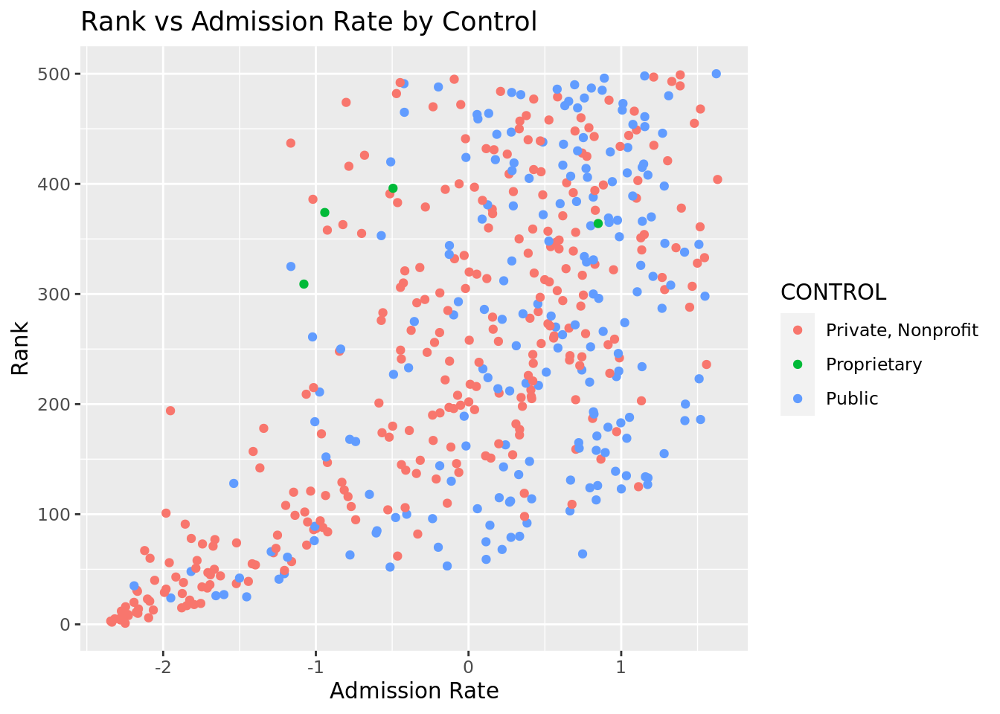
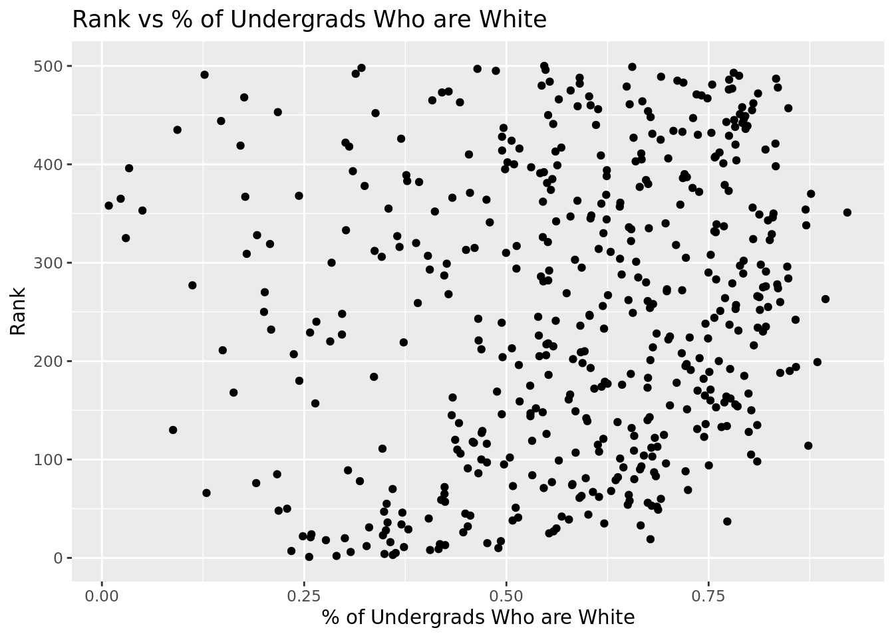
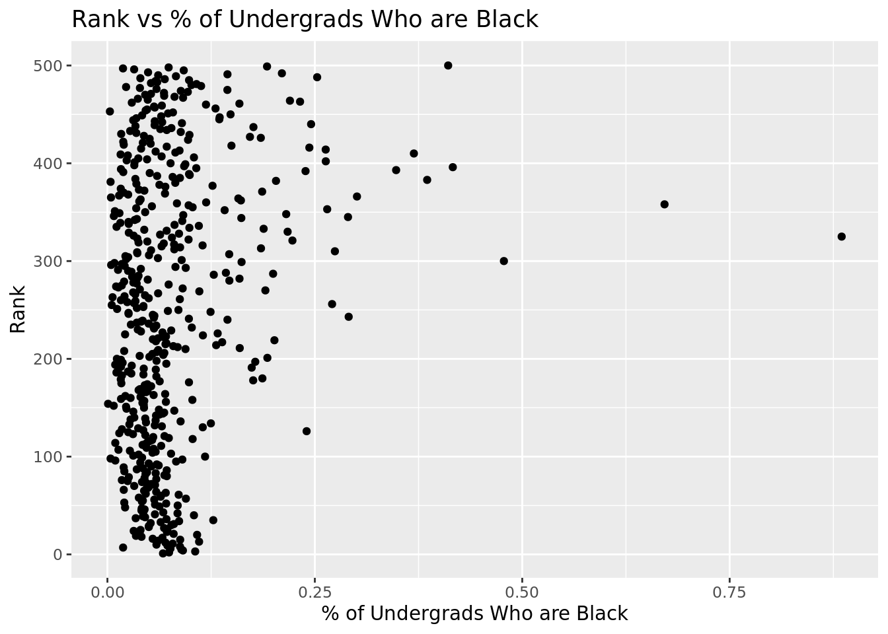
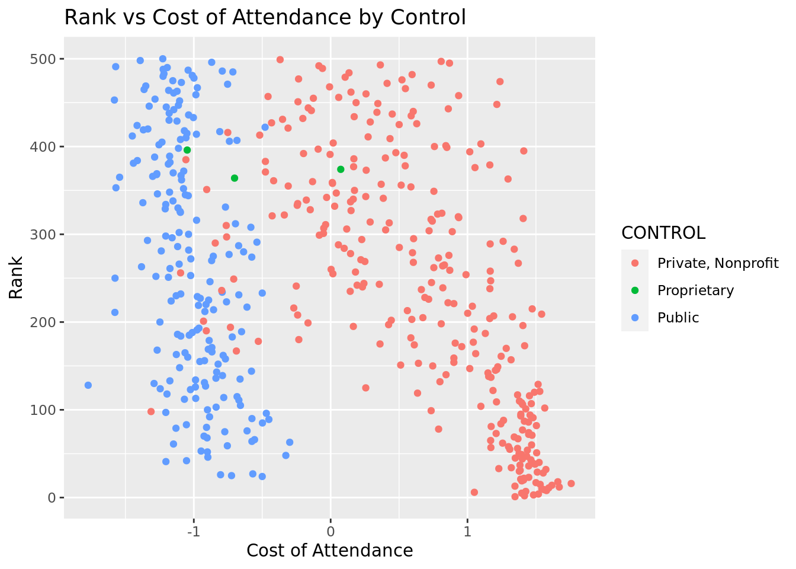
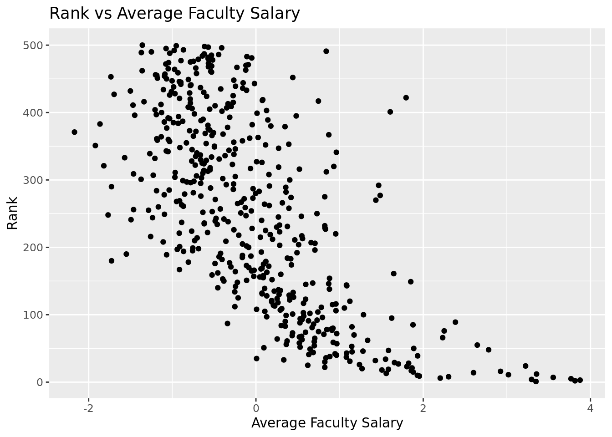
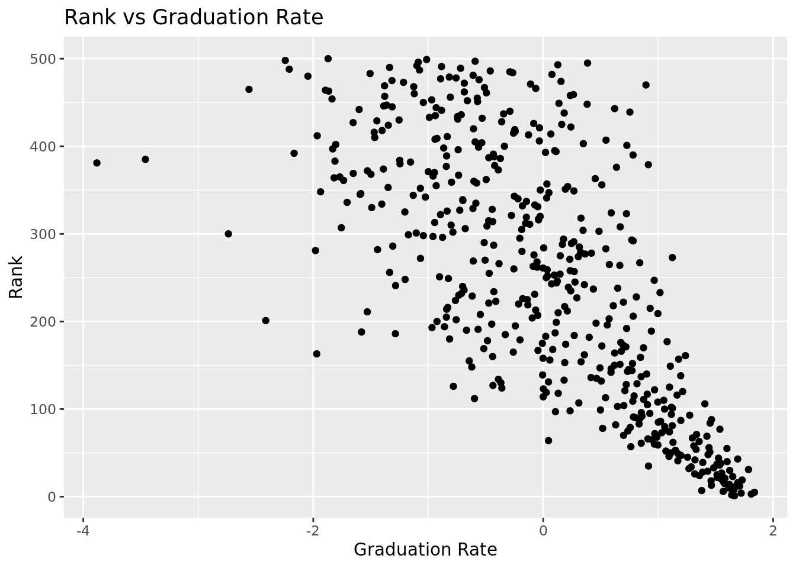
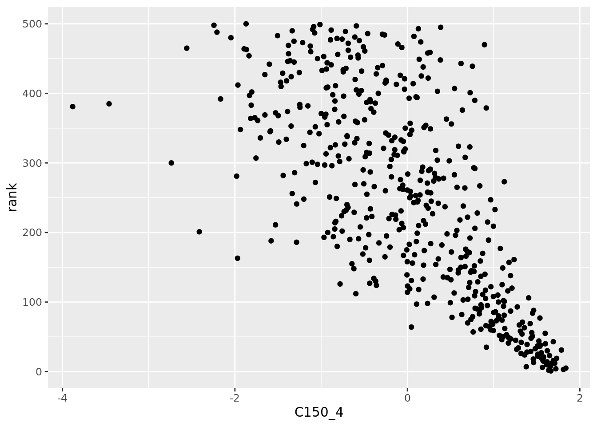
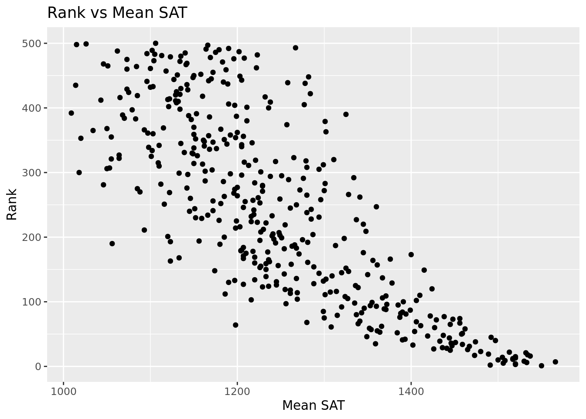
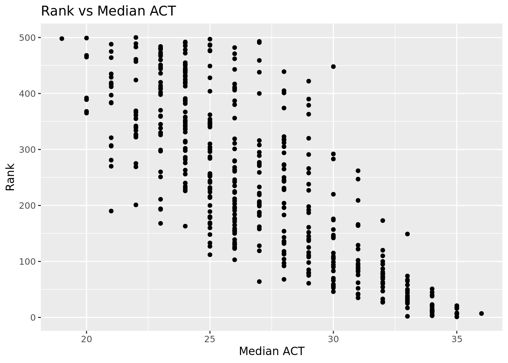
We checked the correlation coefficients between the variables so we don’t use variables that are too similar in our model. For the ones that have a absolute value of r greater than 0.8, we picked only one to put in the model. We removed the columns that has more than 100 NA and used the rest for calculating correlations.

According to the correlation matrix, we need to remove variable pairs that have a high correlation (the absolute value > 0.8). In order to do so, we filter the following correlation table to only display entries with value greater or equal to 0.8.
| rank | ADM_RATE | UGDS | UGDS_WHITE | UGDS_BLACK | UGDS_HISP | UGDS_ASIAN | UGDS_AIAN | UGDS_NHPI | UGDS_2MOR | UGDS_NRA | UGDS_UNKN | COSTT4_A | AVGFACSAL | PCTPELL | C150_4 | AGE_ENTRY | FEMALE | MARRIED | FIRST_GEN | FAMINC | MD_FAMINC | ENDOWBEGIN | SAT_AVG | ACTCMMID | |
|---|---|---|---|---|---|---|---|---|---|---|---|---|---|---|---|---|---|---|---|---|---|---|---|---|---|
| rank | |||||||||||||||||||||||||
| ADM_RATE | |||||||||||||||||||||||||
| UGDS | |||||||||||||||||||||||||
| UGDS_WHITE | |||||||||||||||||||||||||
| UGDS_BLACK | |||||||||||||||||||||||||
| UGDS_HISP | |||||||||||||||||||||||||
| UGDS_ASIAN | |||||||||||||||||||||||||
| UGDS_AIAN | |||||||||||||||||||||||||
| UGDS_NHPI | |||||||||||||||||||||||||
| UGDS_2MOR | |||||||||||||||||||||||||
| UGDS_NRA | |||||||||||||||||||||||||
| UGDS_UNKN | |||||||||||||||||||||||||
| COSTT4_A | |||||||||||||||||||||||||
| AVGFACSAL | |||||||||||||||||||||||||
| PCTPELL | |||||||||||||||||||||||||
| C150_4 | 0.83893042183357 | 0.849384841586927 | |||||||||||||||||||||||
| AGE_ENTRY | 0.905880209781912 | ||||||||||||||||||||||||
| FEMALE | |||||||||||||||||||||||||
| MARRIED | 0.905880209781912 | ||||||||||||||||||||||||
| FIRST_GEN | |||||||||||||||||||||||||
| FAMINC | 0.953776864530003 | ||||||||||||||||||||||||
| MD_FAMINC | 0.953776864530003 | ||||||||||||||||||||||||
| ENDOWBEGIN | |||||||||||||||||||||||||
| SAT_AVG | 0.83893042183357 | 0.975600694502382 | |||||||||||||||||||||||
| ACTCMMID | 0.849384841586927 | 0.975600694502382 |
Accoridng to the filtered table, these variable pairs are (MD_FAMINC, FAMINC), (C150_4, SAT_AVG), (C150_4, ACTCMMID) and (ACTCMMID, SAT_AVG). Therefore, we will drop the variables C150_4, MD_FAMINC, ACTCMMID and preserve SAT_AVG and FAMINC to represent all other variables.
Build model
Because we want to predict college rank, a number from various variables, we decided that a linear regression model would be the best statistical method to answer our question. We began our modeling by using all of our chosen variables for our first linear regression model.
Rows: 498
Columns: 27
$ ADM_RATE <dbl> -2.248372, -2.335695, -2.343288, -2.279167, -2.317134, -2…
$ UGDS <dbl> -0.44881650, -0.26917470, -0.29308515, -0.41827919, -0.41…
$ UGDS_WHITE <dbl> -1.7328370, -1.5528275, -1.1821571, -1.2370120, -1.163517…
$ UGDS_BLACK <dbl> -0.121455656, -0.029348788, 0.368098652, 0.181361442, 0.1…
$ UGDS_HISP <dbl> 0.24284241, 0.37236799, -0.05334548, 0.19483642, -0.20370…
$ UGDS_ASIAN <dbl> 3.0904795, 2.1372506, 1.6152443, 2.0225101, 2.1813816, 2.…
$ UGDS_AIAN <dbl> -0.102207164, 0.123422912, -0.082214626, -0.073646395, -0…
$ UGDS_NHPI <dbl> -0.33360115, 0.60732517, -0.03116055, -0.19918310, -0.199…
$ UGDS_2MOR <dbl> 1.28644738, 2.07106382, 0.98154462, 0.71323018, 0.5831383…
$ UGDS_NRA <dbl> 0.908831394, 0.983499505, 1.090715254, 0.862881787, 1.171…
$ UGDS_UNKN <dbl> -0.37924901, -0.82926211, -0.24689221, -0.77631939, -0.52…
$ COSTT4_A <dbl> 1.3473869, 1.4165533, 1.4824820, 1.5183406, 1.3959505, 1.…
$ AVGFACSAL <dbl> 3.3481120, 3.8151318, 3.8754830, 3.2954802, 3.7674123, 2.…
$ PCTPELL <dbl> -0.6132292, -0.7336406, -1.2988551, -0.6635504, -0.397567…
$ AGE_ENTRY <dbl> -0.9403691, -0.7893840, 0.3629841, -0.8635162, -0.9787111…
$ FAMINC <dbl> 0.20162384, -0.03899674, -0.72708400, -0.04625539, -0.680…
$ ENDOWBEGIN <dbl> 4.8230767, 7.8526584, 11.7606764, 8.6251074, 7.2393605, 1…
$ SAT_AVG <dbl> 2.435243, 1.959465, 2.193322, 2.193322, 2.080425, 2.29815…
$ rank <dbl> 1, 2, 3, 4, 5, 6, 7, 8, 9, 10, 11, 12, 13, 14, 15, 16, 17…
$ REGION <chr> "New England", "Far West", "New England", "New England", …
$ CONTROL <chr> "Private, Nonprofit", "Private, Nonprofit", "Private, Non…
$ CCBASIC <chr> "Doctoral Universities: Very High Research Activity", "Do…
$ college <chr> "Massachusetts Institute of Technology", "Stanford Univer…
$ ACCREDAGENCY <chr> "New England Commission on Higher Education", "Western As…
$ FEMALE <dbl> -1.7820795, -0.6603776, -0.5913166, -0.5991644, -0.480136…
$ MARRIED <dbl> NA, NA, -0.1349421, NA, NA, NA, NA, -0.4499128, NA, -0.85…
$ FIRST_GEN <dbl> -0.003238281, 0.451202521, -0.017754405, -0.089464046, 0.…| ADM_RATE | UGDS | UGDS_WHITE | UGDS_BLACK | UGDS_HISP | UGDS_ASIAN | UGDS_AIAN | UGDS_NHPI | UGDS_2MOR | UGDS_NRA | UGDS_UNKN | COSTT4_A | AVGFACSAL | PCTPELL | AGE_ENTRY | FAMINC | ENDOWBEGIN | SAT_AVG | rank | REGION | CONTROL | CCBASIC | college | ACCREDAGENCY | FEMALE | MARRIED | FIRST_GEN |
|---|---|---|---|---|---|---|---|---|---|---|---|---|---|---|---|---|---|---|---|---|---|---|---|---|---|---|
| -2.2483723 | -0.4488165 | -1.7328370 | -0.1214557 | 0.2428424 | 3.0904795 | -0.1022072 | -0.3336011 | 1.2864474 | 0.9088314 | -0.3792490 | 1.3473869 | 3.3481120 | -0.6132292 | -0.9403691 | 0.2016238 | 4.8230767 | 2.4352431 | 1 | New England | Private, Nonprofit | Doctoral Universities: Very High Research Activity | Massachusetts Institute of Technology | New England Commission on Higher Education | -1.7820795 | NA | -0.0032383 |
| -2.3356949 | -0.2691747 | -1.5528275 | -0.0293488 | 0.3723680 | 2.1372506 | 0.1234229 | 0.6073252 | 2.0710638 | 0.9834995 | -0.8292621 | 1.4165533 | 3.8151318 | -0.7336406 | -0.7893840 | -0.0389967 | 7.8526584 | 1.9594648 | 2 | Far West | Private, Nonprofit | Doctoral Universities: Very High Research Activity | Stanford University | Western Association of Schools and Colleges Senior Colleges and University Commission | -0.6603776 | NA | 0.4512025 |
| -2.3432881 | -0.2930851 | -1.1821571 | 0.3680987 | -0.0533455 | 1.6152443 | -0.0822146 | -0.0311605 | 0.9815446 | 1.0907153 | -0.2468922 | 1.4824820 | 3.8754830 | -1.2988551 | 0.3629841 | -0.7270840 | 11.7606764 | 2.1933219 | 3 | New England | Private, Nonprofit | Doctoral Universities: Very High Research Activity | Harvard University | New England Commission on Higher Education | -0.5913166 | -0.1349421 | -0.0177544 |
| -2.2791672 | -0.4182792 | -1.2370120 | 0.1813614 | 0.1948364 | 2.0225101 | -0.0736464 | -0.1991831 | 0.7132302 | 0.8628818 | -0.7763194 | 1.5183406 | 3.2954802 | -0.6635504 | -0.8635162 | -0.0462554 | 8.6251074 | 2.1933219 | 4 | New England | Private, Nonprofit | Doctoral Universities: Very High Research Activity | Yale University | New England Commission on Higher Education | -0.5991644 | NA | -0.0894640 |
| -2.3171335 | -0.4194434 | -1.1635170 | 0.1586502 | -0.2037038 | 2.1813816 | -0.0993511 | -0.1991831 | 0.5831383 | 1.1711271 | -0.5281504 | 1.3959505 | 3.7674123 | -0.3975671 | -0.9787111 | -0.6808240 | 7.2393605 | 2.0804254 | 5 | Mid East | Private, Nonprofit | Doctoral Universities: Very High Research Activity | Princeton University | Middle States Commission on Higher Education | -0.4801369 | NA | 0.1880047 |
| -2.0952414 | -0.4763986 | -1.4596273 | -0.0078992 | 0.2854138 | 2.4890375 | -0.1336240 | -0.1655786 | 0.1969282 | 1.2036747 | -0.5579307 | 1.0502168 | 2.2035450 | -0.8953872 | -0.8482144 | 0.1153655 | 1.5921875 | 2.2981544 | 6 | Southwest | Private, Nonprofit | Doctoral Universities: Very High Research Activity | Rice University | Southern Association of Colleges and Schools Commission on Colleges | -1.0479838 | NA | -1.1553063 |
| -2.2724176 | -0.7585777 | -1.8500030 | -0.7283516 | 0.4710973 | 4.0197516 | -0.1536165 | -0.1991831 | 1.7458342 | 0.3861546 | -0.7564659 | 1.4260207 | 3.5544288 | -1.2916664 | -0.9406354 | -0.2764895 | 0.5526454 | 2.5642677 | 7 | Far West | Private, Nonprofit | Doctoral Universities: Very High Research Activity | California Institute of Technology | Western Association of Schools and Colleges Senior Colleges and University Commission | -1.0047710 | NA | NA |
| -2.2281236 | -0.2437419 | -0.9366412 | 0.1372006 | -0.2508041 | 1.7135933 | -0.0079566 | -0.4008102 | 0.4855695 | 0.4895412 | 0.6862232 | 1.5772547 | 2.3035455 | -1.0697141 | -0.1171022 | 0.5399114 | 2.2133492 | 2.2739623 | 8 | Southeast | Private, Nonprofit | Doctoral Universities: Very High Research Activity | Duke University | Southern Association of Colleges and Schools Commission on Colleges | -0.1779047 | -0.4499128 | -1.2583058 |
| -2.2310765 | -0.2453538 | -0.8807210 | -0.0533218 | -0.1584152 | 1.3428932 | -0.0536539 | -0.0647651 | 0.7376224 | 1.0600822 | 0.3056974 | 1.5597914 | 1.9537192 | -1.1371085 | -0.8920634 | 0.9999102 | 0.8449944 | 2.0965534 | 9 | New England | Private, Nonprofit | Doctoral Universities: Very High Research Activity | Brown University | New England Commission on Higher Education | -0.2345963 | NA | -0.8955853 |
| -2.1656900 | -0.4679807 | -0.4871500 | -0.2211330 | -0.2281597 | 0.9230186 | 0.2319538 | -0.2327876 | 0.5424846 | 0.9681830 | -0.3428509 | 1.5432111 | 1.9305612 | -0.8378773 | -0.4708260 | 0.8056022 | 1.3633003 | 2.0320411 | 10 | New England | Private, Nonprofit | Doctoral Universities: Very High Research Activity | Dartmouth College | New England Commission on Higher Education | -0.3844815 | -0.8500130 | -0.8629462 |
| -2.1758144 | 0.1016612 | -1.1086621 | 0.0261677 | -0.2417463 | 2.0162057 | -0.1193436 | -0.3672057 | 0.2131897 | 1.3108905 | 0.1468692 | 1.5939331 | 3.0189876 | -1.1865311 | 0.4004876 | -0.3746295 | 3.9977502 | 2.1691298 | 11 | Mid East | Private, Nonprofit | Doctoral Universities: Very High Research Activity | University of Pennsylvania | Middle States Commission on Higher Education | 0.0570577 | -0.4984620 | -0.7210712 |
| -2.2736832 | -0.1095926 | -1.3547106 | -0.0836035 | 0.1468304 | 1.1575432 | -0.0193809 | -0.2327876 | 0.5262232 | 2.4117664 | 0.5141594 | 1.6706538 | 3.3551296 | -0.2753585 | 0.7025374 | -0.6137025 | 2.9050825 | 2.1691298 | 12 | Mid East | Private, Nonprofit | Doctoral Universities: Very High Research Activity | Columbia University | Middle States Commission on Higher Education | -1.0897181 | -0.1506286 | -0.0844963 |
| -2.0644464 | -0.2077419 | -0.8375827 | 0.4274003 | -0.2553329 | 1.0276720 | -0.0450856 | 0.4729071 | 0.4937002 | 0.7460932 | 0.6365894 | 1.3467983 | 1.5579278 | -0.8890970 | -0.8387398 | 0.3933778 | 1.5226813 | 2.1933219 | 13 | Southeast | Private, Nonprofit | Doctoral Universities: Very High Research Activity | Vanderbilt University | Southern Association of Colleges and Schools Commission on Colleges | -0.3472489 | NA | -1.3831945 |
| -2.1618934 | -0.0869359 | -0.8721999 | -0.1933747 | 0.0109644 | 1.4538511 | -0.1250558 | -0.4344147 | 0.7172956 | 0.8360778 | 0.2329012 | 1.6168904 | 2.6017926 | -0.6653475 | -0.4784480 | 0.5318976 | 2.1057710 | 2.0723613 | 14 | Great Lakes | Private, Nonprofit | Doctoral Universities: Very High Research Activity | Northwestern University | Higher Learning Commission | -0.3818344 | -0.7829982 | -1.0863127 |
| -1.8788332 | -0.1796224 | -0.5601124 | 0.1397241 | -0.2136674 | 1.3038058 | -0.1221997 | -0.0983696 | 0.3839352 | 0.3019137 | -0.2104941 | 1.5313400 | 1.8800347 | -1.1065563 | -0.6509120 | 1.4379983 | 2.0360897 | 2.1933219 | 15 | Plains | Private, Nonprofit | Doctoral Universities: Very High Research Activity | Washington University in St. Louis | Higher Learning Commission | -0.2909102 | -0.8714994 | -1.4660935 |
| -2.2462630 | -0.2115030 | -1.1981342 | -0.2779112 | 0.1586055 | 1.5837222 | -0.1421922 | -0.4680192 | 1.1278979 | 1.7914468 | -0.3693222 | 1.7580192 | 2.9242503 | -1.2889706 | -0.6640883 | 0.7324545 | 1.8103138 | 2.3304106 | 16 | Great Lakes | Private, Nonprofit | Doctoral Universities: Very High Research Activity | University of Chicago | Higher Learning Commission | -0.4303762 | NA | -0.5711806 |
| -1.8455072 | -0.2017419 | -0.4706402 | -0.1302878 | -0.3060562 | 0.5384487 | -0.1307679 | -0.3336011 | 0.3920659 | 1.6516834 | -0.0185767 | 1.5004359 | 1.8579293 | -1.1568775 | -0.6162412 | 1.0449080 | 0.2086545 | 1.8143121 | 17 | Mid East | Private, Nonprofit | Doctoral Universities: Very High Research Activity | Georgetown University | Middle States Commission on Higher Education | 0.2208840 | -0.8617659 | -0.9944098 |
| -1.7969946 | -0.7652046 | -1.6225945 | -0.4482458 | 0.6721790 | 1.9065087 | -0.0850707 | 0.6409297 | 2.3597051 | 0.3536070 | 1.2983734 | 1.6603034 | 1.5063486 | -1.1541817 | -0.9897692 | 1.6185443 | -0.2326388 | 2.3062185 | 18 | Far West | Private, Nonprofit | Baccalaureate Colleges: Arts & Sciences Focus | Harvey Mudd College | Western Association of Schools and Colleges Senior Colleges and University Commission | -1.1907308 | NA | NA |
| -1.7535443 | -0.0463687 | 0.5140863 | -0.5327822 | -0.1258073 | -0.3656056 | -0.0765025 | -0.1655786 | 0.4367850 | -0.0082462 | -0.6141823 | 1.3970297 | 1.5838929 | -1.3932073 | -0.8731088 | 2.0241010 | 3.0868163 | 1.9433367 | 19 | Great Lakes | Private, Nonprofit | Doctoral Universities: Very High Research Activity | University of Notre Dame | Higher Learning Commission | -0.9687819 | NA | -1.5845359 |
| -2.1910009 | -0.7083389 | -1.4979726 | 0.3971186 | 0.5118571 | 1.3214582 | -0.1136315 | 0.5737207 | 1.0465905 | 1.0351928 | 0.3652580 | 1.4100781 | 1.2688036 | -0.4344093 | -0.9061753 | -0.5515710 | 0.3559416 | NA | 20 | Far West | Private, Nonprofit | Baccalaureate Colleges: Arts & Sciences Focus | Pomona College | Western Association of Schools and Colleges Senior Colleges and University Commission | -0.5881174 | NA | 0.4086150 |
| -2.0880699 | -0.3241598 | -1.7232507 | 0.0400468 | 0.3316082 | 2.4360803 | -0.1336240 | -0.2663921 | 0.9937407 | 1.2630263 | 0.1865763 | 1.3886415 | 1.8663504 | -0.9322294 | -0.2255452 | 0.8912092 | 1.5241767 | 2.2900904 | 21 | Mid East | Private, Nonprofit | Doctoral Universities: Very High Research Activity | Johns Hopkins University | Middle States Commission on Higher Education | -0.4473035 | -0.5005685 | -1.2919000 |
| -1.8261022 | -0.2536822 | -1.7743777 | -0.4772657 | -0.3268890 | 3.4044398 | -0.1536165 | -0.4680192 | -0.0957785 | 2.0269385 | 1.3347715 | 1.4125799 | 0.8231874 | -1.0095084 | -0.9435448 | 0.9895752 | 0.2562476 | 2.1368736 | 22 | Mid East | Private, Nonprofit | Doctoral Universities: Very High Research Activity | Carnegie Mellon University | Middle States Commission on Higher Education | -0.8576854 | NA | -1.6136438 |
| -2.1028346 | 0.4808254 | -1.2471309 | -0.0621540 | 0.1586055 | 1.6366794 | -0.0850707 | -0.1991831 | 0.2172550 | 0.8016156 | 1.5928672 | 1.4476536 | 1.8045957 | -0.8594435 | -0.7349586 | 0.5776173 | 1.7305675 | 1.8707604 | 23 | Mid East | Private, Nonprofit | Doctoral Universities: Very High Research Activity | Cornell University | Middle States Commission on Higher Education | -0.2972337 | -0.9124277 | -1.0600533 |
| -1.9501256 | 1.9938106 | -1.7179250 | -0.5668491 | 0.8089507 | 2.6592569 | -0.1107754 | 0.0696530 | 0.7254263 | 0.9164897 | 0.1733406 | -0.5001397 | 3.2239009 | 0.4237463 | -0.2143996 | -1.0269846 | 0.3365239 | NA | 24 | Far West | Public | Doctoral Universities: Very High Research Activity | University of California - Los Angeles | Western Association of Schools and Colleges Senior Colleges and University Commission | 0.3419945 | -0.7873266 | 1.2361526 |
| -1.4531883 | 1.9537807 | -0.1526945 | -0.4633866 | -0.5352169 | 1.0654986 | -0.1193436 | -0.4344147 | 0.1400130 | 0.3421196 | 0.8020354 | -0.7243662 | 0.6200285 | -0.6896095 | -0.4712176 | 0.4517380 | 3.2959166 | 1.5885190 | 25 | Great Lakes | Public | Doctoral Universities: Very High Research Activity | University of Michigan - Ann Arbor | Higher Learning Commission | -0.2845889 | -0.6780430 | -0.5378958 |
| -1.6544099 | 0.5705567 | -0.7182864 | -0.0533218 | -0.4908340 | 2.1448159 | -0.1364801 | -0.4680192 | -0.0185364 | 0.7518369 | -0.3163795 | -0.8045698 | 1.2379263 | -1.1299197 | -0.4466260 | 0.5109189 | 0.3289456 | 1.7497998 | 26 | Southeast | Public | Doctoral Universities: Very High Research Activity | Georgia Institute of Technology | Southern Association of Colleges and Schools Commission on Colleges | -1.7311186 | -0.7283656 | -1.1108199 |
| -1.6021008 | 0.6899299 | -0.1239355 | -0.1050531 | -0.5524266 | 1.0301938 | -0.1279119 | -0.2999966 | 0.2863663 | -0.2705418 | 0.7755640 | -0.5689627 | 1.7031917 | -1.0966718 | -0.5236403 | 0.7432804 | 1.7244434 | 1.4353023 | 27 | Southeast | Public | Doctoral Universities: Very High Research Activity | University of Virginia | Southern Association of Colleges and Schools Commission on Colleges | -0.1879711 | -0.7417185 | -1.0211833 |
| -1.8750366 | 0.9088851 | -1.2274257 | -0.3372128 | 0.3307024 | 1.9229002 | -0.1164875 | 0.4056981 | 0.6563150 | 1.2343078 | -0.3097617 | 1.5535125 | 1.8256484 | -0.5521249 | -0.4027087 | -0.0432850 | 1.3657352 | 1.5562628 | 28 | Far West | Private, Nonprofit | Doctoral Universities: Very High Research Activity | University of Southern California | Western Association of Schools and Colleges Senior Colleges and University Commission | -0.1088913 | -0.7783428 | -0.1180408 |
| -1.9918885 | -0.7262494 | -1.0799032 | -0.3372128 | 0.3759911 | 0.7086682 | -0.1079193 | -0.0311605 | 1.0791135 | 1.6555125 | 0.7490927 | 1.5100014 | 1.6565248 | -0.7246546 | -0.8779488 | 0.6059588 | -0.0740398 | 1.5159426 | 29 | Far West | Private, Nonprofit | Baccalaureate Colleges: Arts & Sciences Focus | Claremont McKenna College | Western Association of Schools and Colleges Senior Colleges and University Commission | -0.7132454 | NA | NA |
| -2.1682211 | -0.6802195 | -0.1047629 | 0.0059799 | -0.2037038 | 0.1891837 | -0.0565099 | -0.3672057 | 1.4531276 | 0.3210593 | -0.7531570 | 1.3787816 | 0.8235383 | -0.9160548 | -0.9239020 | 0.5740841 | 0.1853737 | NA | 30 | New England | Private, Nonprofit | Baccalaureate Colleges: Arts & Sciences Focus | Bowdoin College | New England Commission on Higher Education | -0.5465718 | NA | -0.7137686 |
| -2.1724396 | -0.7107568 | -1.3382008 | 0.0438320 | 0.0191164 | 1.2596748 | -0.0736464 | -0.0983696 | 1.8068148 | 1.8220798 | 0.2957706 | 1.3852567 | 1.1231889 | -0.4892235 | -0.9461975 | 0.3063450 | 0.2999515 | 1.7659279 | 31 | Mid East | Private, Nonprofit | Baccalaureate Colleges: Arts & Sciences Focus | Swarthmore College | Middle States Commission on Higher Education | -0.1759574 | NA | 0.1006788 |
| -1.9809205 | -0.5935329 | -0.6884624 | -0.3094546 | -0.1212785 | 1.2760663 | -0.1221997 | -0.1991831 | 0.7742107 | 1.2917448 | -0.5149147 | 1.5729379 | 1.4277518 | -1.0562352 | -0.9790550 | 0.6050410 | -0.2222837 | 1.6046471 | 32 | Mid East | Private, Nonprofit | Baccalaureate Colleges: Arts & Sciences Focus | Barnard College | Middle States Commission on Higher Education | NA | NA | -1.0450006 |
| -1.7109376 | -0.6620404 | 0.4496450 | -0.1567843 | -0.4165606 | -0.2508651 | -0.0964950 | 0.1032575 | -0.0104057 | 0.2655369 | -0.5513128 | 1.2288721 | 0.3330096 | -0.8594435 | -0.9027417 | 0.8498908 | -0.0693165 | 1.2417653 | 33 | Southeast | Private, Nonprofit | Baccalaureate Colleges: Arts & Sciences Focus | Davidson College | Southern Association of Colleges and Schools Commission on Colleges | -0.9607194 | NA | -1.0238564 |
| -1.7459510 | -0.2143687 | -1.1251718 | 0.1233215 | -0.1901172 | 1.8964216 | -0.1364801 | -0.4344147 | -0.0347979 | 1.8680294 | -0.6141823 | 1.3201128 | 1.5498576 | -0.6204179 | -0.4166879 | 0.1788704 | 2.2184430 | 1.7014155 | 34 | Southeast | Private, Nonprofit | Doctoral Universities: Very High Research Activity | Emory University | Southern Association of Colleges and Schools Commission on Colleges | 0.8700178 | -0.6977442 | -0.9617524 |
| -2.1901572 | -0.4330553 | 0.2099874 | 0.6431575 | -0.0895764 | -0.0138188 | 0.0605892 | 0.1704665 | -0.7624992 | -0.8142789 | -0.6902875 | NA | 0.0077449 | NA | NA | NA | -0.3212718 | 0.8950116 | 35 | NA | Public | Baccalaureate Colleges: Arts & Sciences Focus | United States Military Academy at West Point | EXEMPT | NA | NA | NA |
| -1.6936418 | -0.6368762 | -1.2167743 | -0.0684627 | 0.1033533 | 1.8951608 | -0.1279119 | -0.4344147 | 0.8067337 | 1.5406385 | -0.7399213 | 1.4473593 | 0.8375735 | -0.4047558 | -0.7284524 | 0.1593296 | 0.3123173 | 1.5965830 | 36 | New England | Private, Nonprofit | Baccalaureate Colleges: Arts & Sciences Focus | Wellesley College | New England Commission on Higher Education | NA | NA | -0.8816542 |
| -1.5206840 | -0.6762792 | 1.0200302 | -0.5365674 | -0.5850344 | -0.5181727 | -0.1536165 | -0.4008102 | -0.1445629 | -0.2379942 | -0.6836696 | 1.3836870 | 1.0814343 | -1.4183679 | -0.9167436 | 2.4387810 | 0.1654751 | 1.6369032 | 37 | Southeast | Private, Nonprofit | Baccalaureate Colleges: Arts & Sciences Focus | Washington and Lee University | Southern Association of Colleges and Schools Commission on Colleges | -1.1552206 | NA | NA |
| -1.8670215 | -0.2972045 | -0.3934172 | -0.3939910 | -0.4038798 | 0.9179751 | -0.1336240 | -0.4680192 | 0.6115959 | 1.0026452 | 0.5141594 | 1.4941079 | 0.8835386 | -1.2943621 | -0.6912177 | 1.0843212 | 0.2220884 | 1.8223761 | 38 | New England | Private, Nonprofit | Doctoral Universities: Very High Research Activity | Tufts University | New England Commission on Higher Education | -0.9889735 | NA | -1.0722997 |
| -1.4417984 | 0.0276910 | -0.0227468 | -0.4267962 | -0.1466401 | 0.3291419 | -0.1450483 | -0.4680192 | -0.1364322 | 0.4033857 | 0.5571753 | 1.4804218 | 1.9333683 | -1.1128465 | -0.8899098 | 1.9464537 | 0.4011473 | 1.4917505 | 39 | New England | Private, Nonprofit | Doctoral Universities: Very High Research Activity | Boston College | New England Commission on Higher Education | -0.4314484 | NA | -1.2855782 |
| -2.0555876 | -0.6829956 | -0.9456949 | 0.3491726 | 0.0988244 | 0.9608451 | 0.0091798 | 0.0024440 | 1.0465905 | 0.8935149 | -0.3329241 | 1.5234913 | 0.9635390 | -0.1819049 | -0.8099998 | -0.0948085 | 0.4008965 | 2.0078490 | 40 | New England | Private, Nonprofit | Baccalaureate Colleges: Arts & Sciences Focus | Amherst College | New England Commission on Higher Education | -0.2021629 | NA | -0.5101728 |
| -1.2414205 | 2.2267360 | -0.3566697 | -0.2438442 | 0.9484398 | 0.2345755 | -0.1136315 | -0.2327876 | -0.0673209 | -0.6036765 | 0.0277481 | -1.2038706 | 0.6323093 | -0.1252936 | -0.0815759 | -0.8866186 | 0.2074242 | 1.1449968 | 41 | Southeast | Public | Doctoral Universities: Very High Research Activity | University of Florida | Southern Association of Colleges and Schools Commission on Colleges | 0.2559667 | -0.3184251 | 0.4945528 |
| -1.5000135 | 0.8856015 | -0.0701457 | 0.0993485 | -0.3187371 | 0.5561011 | -0.0393735 | -0.4008102 | 0.3148239 | -0.2226777 | 0.0972355 | -1.0533234 | 0.9463459 | -0.2627782 | -0.5340156 | -0.0089656 | 0.7082993 | 1.1691890 | 42 | Southeast | Public | Doctoral Universities: Very High Research Activity | University of North Carolina at Chapel Hill | Southern Association of Colleges and Schools Commission on Colleges | 0.4933804 | -0.6964538 | -0.6022111 |
| -1.9167995 | -0.6675926 | -0.6719526 | -0.1176704 | 0.0236453 | 0.7994519 | -0.1393362 | -0.4008102 | 0.8107991 | 0.5986715 | 0.8053443 | 1.4631547 | 1.0845922 | -0.4739474 | -0.9272681 | 0.6174959 | 0.4808950 | NA | 43 | New England | Private, Nonprofit | Baccalaureate Colleges: Arts & Sciences Focus | Williams College | New England Commission on Higher Education | -0.4919308 | NA | -0.4389033 |
| -1.6248806 | -0.6090255 | 0.1050706 | -0.4167023 | -0.2055154 | 0.0303122 | -0.1307679 | -0.4344147 | 0.4245889 | 0.8628818 | -0.5281504 | 1.4007578 | 0.6849411 | -1.0418577 | -0.3370898 | 0.5068555 | -0.0297593 | 1.5804550 | 44 | New England | Private, Nonprofit | Baccalaureate Colleges: Arts & Sciences Focus | Middlebury College | New England Commission on Higher Education | -0.2902100 | -0.7161239 | -0.4365796 |
| -1.6906889 | 0.5156612 | -0.7049721 | -0.4495075 | -0.3440987 | 1.2016741 | -0.1393362 | -0.5352282 | 0.3798698 | 2.0097074 | 0.1005444 | 1.3491529 | 1.1495048 | -1.3374946 | 0.0020296 | 0.9367426 | -0.0394715 | 1.9675288 | 45 | New England | Private, Nonprofit | Doctoral Universities: Very High Research Activity | Northeastern University | New England Commission on Higher Education | -0.2280611 | -0.3911692 | -0.7461569 |
| -1.2068289 | 2.7091539 | -1.1193135 | -0.4015615 | 1.1984333 | 1.9455961 | -0.1221997 | -0.3672057 | -0.2055435 | -0.2896875 | -0.6307269 | -0.8974784 | 1.2796809 | -0.3175923 | -0.5955659 | -0.2215812 | 0.9370065 | 0.8143712 | 46 | Southwest | Public | Doctoral Universities: Very High Research Activity | University of Texas - Austin | Southern Association of Colleges and Schools Commission on Colleges | -0.0488268 | -0.8052604 | 0.1655076 |
| -1.7071410 | 0.6257209 | -1.2396749 | -0.4457223 | -0.0904822 | 1.3870242 | -0.1479044 | -0.3336011 | 0.0180519 | 3.0282570 | 0.5141594 | 1.4332807 | 1.5845946 | -0.8855027 | -0.6864288 | 0.9315308 | 0.3475052 | 1.3788540 | 47 | New England | Private, Nonprofit | Doctoral Universities: Very High Research Activity | Boston University | New England Commission on Higher Education | 0.8150454 | -0.8752421 | -0.9059243 |
| -1.8172434 | 1.9185867 | -1.9341494 | -0.6980699 | 0.5236321 | 3.4662232 | -0.1307679 | -0.0311605 | 0.5750076 | 1.3530109 | 0.1832674 | -0.3275181 | 2.7821443 | 0.0139882 | -0.0374417 | -1.0200139 | 0.3035562 | 1.5240067 | 48 | Far West | Public | Doctoral Universities: Very High Research Activity | University of California - Berkeley | Western Association of Schools and Colleges Senior Colleges and University Commission | -0.1784035 | -0.6408276 | 0.8807661 |
| -1.2055634 | -0.3522792 | 0.5646807 | -0.1757104 | -0.4364876 | -0.5396077 | -0.1364801 | -0.5016237 | -0.1608244 | 0.6943999 | -0.8954405 | 1.3952147 | 0.6470462 | -1.4875595 | -0.8883479 | 1.8331548 | 0.0765882 | NA | 49 | Southeast | Private, Nonprofit | Doctoral Universities: High Research Activity | Wake Forest University | Southern Association of Colleges and Schools Commission on Colleges | -0.5340647 | NA | -1.4092853 |
| -1.6649561 | 1.6033628 | -1.8782293 | 0.1018720 | 0.3325140 | 1.4639382 | -0.1079193 | -0.2327876 | -0.2096088 | 3.4800948 | 0.6531340 | 1.3767703 | 1.8867014 | -0.6716377 | -0.4182509 | 0.3017496 | 0.9167650 | 1.6933515 | 50 | Mid East | Private, Nonprofit | Doctoral Universities: Very High Research Activity | New York University | Middle States Commission on Higher Education | 0.4176035 | -0.7233861 | -0.4451016 |
| -1.7856047 | -0.7223091 | -0.3731795 | -0.2425825 | -0.0234550 | 0.4300127 | -0.1536165 | -0.5688327 | 0.6725765 | 1.1538960 | -0.3957936 | 1.5055375 | 0.0951137 | -0.9457083 | -0.9529672 | 0.5297337 | -0.1740582 | 1.7014155 | 51 | Mid East | Private, Nonprofit | Baccalaureate Colleges: Arts & Sciences Focus | Haverford College | Middle States Commission on Higher Education | -0.8634370 | NA | -0.9801331 |
| -0.5137323 | 1.8208852 | 0.5566921 | -0.0735096 | -0.5460862 | 0.3795773 | -0.1364801 | -0.2999966 | -0.0917131 | -0.8334245 | -0.5645485 | -0.9008140 | 0.5280983 | -0.5557193 | -0.4778146 | 0.0870481 | 0.0673096 | 1.0966126 | 52 | Southeast | Public | Doctoral Universities: Very High Research Activity | University of Georgia | Southern Association of Colleges and Schools Commission on Colleges | 0.0776552 | -0.7502686 | -0.7831453 |
| -0.1395529 | 1.9951539 | 0.5220749 | -0.7106873 | -0.6140192 | -0.0087752 | -0.0964950 | -0.3336011 | -0.3600275 | 0.7441786 | 0.0376749 | -0.9467287 | 1.1456451 | -1.0256830 | -0.6217552 | 0.9393024 | 1.0231126 | 0.9353318 | 53 | Great Lakes | Public | Doctoral Universities: Very High Research Activity | University of Wisconsin | Higher Learning Commission | -0.3195087 | -0.8252104 | -0.9193939 |
| -1.3958170 | -0.5677419 | 0.3649660 | -0.4419371 | -0.3314179 | -0.3239964 | -0.1336240 | -0.0311605 | -0.1283014 | 0.7212038 | -0.0285035 | 1.4376466 | 0.6975728 | -1.3096382 | -0.9442252 | 1.1702336 | -0.0492990 | 1.2578934 | 54 | Mid East | Private, Nonprofit | Baccalaureate Colleges: Arts & Sciences Focus | Colgate University | Middle States Commission on Higher Education | 0.0971341 | NA | -0.7907890 |
| -1.4169094 | -0.6212046 | -1.2226326 | -0.4280580 | 0.0598762 | 0.4917960 | -0.1421922 | -0.4344147 | -0.7340416 | 4.0353192 | 1.0402776 | 1.3090266 | 2.6463542 | -1.2359536 | -0.9017727 | 1.4427205 | -0.1940143 | 0.9111397 | 55 | New England | Private, Nonprofit | Special Focus Four-Year: Business & Management Schools | Babson College | New England Commission on Higher Education | -0.7688065 | NA | -1.1147797 |
| -1.9598281 | -0.6712643 | 0.4965114 | -0.2539381 | -0.5252534 | -0.3719101 | -0.1079193 | -0.4008102 | 0.7376224 | 0.4608227 | -0.7597748 | 1.3659294 | 0.3628343 | -1.3096382 | -0.9098505 | 1.6203995 | -0.2322976 | NA | 56 | New England | Private, Nonprofit | Baccalaureate Colleges: Arts & Sciences Focus | Bates College | New England Commission on Higher Education | -0.6822397 | NA | -1.0933410 |
| -1.1587382 | 0.1656015 | -0.8381152 | 0.2267840 | 0.9602149 | -0.3996495 | -0.1193436 | -0.4008102 | -0.4128774 | 1.3683275 | 0.3023885 | 1.1709391 | 0.9670478 | -0.9843478 | -0.3093620 | 0.5340276 | -0.0350661 | 0.8546914 | 57 | Southeast | Private, Nonprofit | Doctoral Universities: Very High Research Activity | University of Miami | Southern Association of Colleges and Schools Commission on Colleges | 0.0779707 | -0.6366130 | -0.5861297 |
| -1.7780115 | -0.6690255 | 0.3766826 | -0.4886214 | -0.2480867 | -0.0743413 | -0.1393362 | -0.5688327 | 0.3188893 | -0.0025025 | 0.0045857 | 1.2998044 | 0.5189754 | -0.7093786 | -0.9403454 | 1.1283347 | -0.0433523 | 1.7256077 | 58 | Mid East | Private, Nonprofit | Baccalaureate Colleges: Arts & Sciences Focus | Hamilton College | Middle States Commission on Higher Education | -0.2184021 | NA | -1.2759109 |
| 0.1156653 | 2.1160494 | -0.8636787 | -0.1567843 | 0.0952014 | 1.5496783 | -0.1450483 | -0.4344147 | -0.3884851 | 1.4372519 | -0.5943288 | -0.7549760 | 0.9238897 | -0.1333809 | -0.7293439 | 0.1786444 | 0.1938180 | 0.8385634 | 59 | Great Lakes | Public | Doctoral Universities: Very High Research Activity | University of Illinois Urbana-Champaign | Higher Learning Commission | -0.6528644 | -0.9098573 | -0.0965321 |
| -2.0859607 | -0.0747568 | 0.5827882 | -0.1529991 | -0.4065971 | -0.3555186 | -0.0993511 | -0.2663921 | -0.2014781 | -0.0618540 | -0.3891758 | 1.4684526 | 0.6972219 | -1.4057876 | 0.4820625 | 0.9392210 | 0.0907396 | 1.4433663 | 60 | Southeast | Private, Nonprofit | Doctoral Universities: Very High Research Activity | Tulane University | Southern Association of Colleges and Schools Commission on Colleges | 0.3547702 | -0.2592481 | -0.7982782 |
| -1.1857365 | 2.0607957 | 0.0470202 | 0.1170128 | 0.8605798 | -0.6139999 | -0.1107754 | -0.2327876 | -0.0713863 | -0.7740730 | -0.5844020 | -1.1485866 | 0.3726589 | 0.0409460 | -0.4075253 | -0.5651208 | -0.1217073 | 0.4837456 | 61 | Southeast | Public | Doctoral Universities: Very High Research Activity | Florida State University | Southern Association of Colleges and Schools Commission on Colleges | 0.1703227 | -0.6879244 | 0.1775406 |
| -0.4647979 | -0.3743986 | 0.1753702 | -0.3838971 | -0.2988100 | 0.0252686 | -0.1364801 | -0.4344147 | -0.2624587 | 0.7154601 | 0.1170890 | 1.2566367 | 1.3354706 | -0.7830631 | -0.6431578 | 1.3701930 | 0.0872941 | 0.9514599 | 62 | Mid East | Private, Nonprofit | Doctoral Universities: High Research Activity | Lehigh University | Middle States Commission on Higher Education | -1.0873022 | -0.7233292 | -0.9121727 |
| -0.7761219 | -0.2825180 | 0.0603345 | -0.0798183 | -0.3721777 | 0.1500962 | -0.1164875 | -0.2999966 | 0.6766419 | -0.1422659 | 0.6564429 | -0.2991158 | 0.5512563 | -1.2674044 | -0.7309297 | 1.2617033 | -0.0355208 | 1.3143417 | 63 | Southeast | Public | Doctoral Universities: High Research Activity | William & Mary | Southern Association of Colleges and Schools Commission on Colleges | 0.3788764 | -0.8224197 | -1.2878686 |
| 0.7471721 | 5.7149751 | 0.3713569 | -0.2249182 | -0.4292414 | -0.1399073 | -0.1136315 | -0.2663921 | -0.3681583 | 0.5603802 | -0.2965260 | -0.5755359 | 0.2540618 | -0.3202881 | NA | NA | 0.6010008 | -0.4032986 | 64 | Mid East | Public | Doctoral Universities: Very High Research Activity | Penn State | Middle States Commission on Higher Education | NA | NA | NA |
| -1.2776995 | -0.3592643 | -0.8418433 | -0.4091319 | -0.3042447 | 1.9531615 | -0.1050632 | -0.3336011 | 0.3432815 | 1.6133920 | -0.6241091 | 1.1691241 | 0.7031868 | -1.0787000 | -0.8113173 | 1.0858961 | 0.2216566 | 1.5885190 | 65 | Great Lakes | Private, Nonprofit | Doctoral Universities: Very High Research Activity | Case Western Reserve University | Higher Learning Commission | -0.8617376 | NA | -1.5223927 |
| -1.2924641 | 1.8139001 | -2.4086715 | -0.7182577 | 1.1096675 | 3.7335307 | -0.1336240 | 0.2040710 | 0.0830978 | 2.0690590 | -0.5149147 | -0.5561596 | 2.2326680 | 1.1569976 | -0.4768140 | -1.2448108 | -0.1869570 | 0.7337309 | 66 | Far West | Public | Doctoral Universities: Very High Research Activity | University of California - Irvine | Western Association of Schools and Colleges Senior Colleges and University Commission | 0.0015520 | -0.7860414 | 1.8328691 |
| -2.1213959 | -0.6462792 | 0.1354273 | -0.3750650 | -0.4573204 | 0.1740530 | -0.0993511 | -0.4008102 | 0.4611772 | 0.5929278 | 0.1104711 | 1.3689707 | 0.5196772 | -0.8944886 | -0.9129916 | 1.5320192 | -0.0727247 | 1.6772234 | 67 | New England | Private, Nonprofit | Baccalaureate Colleges: Arts & Sciences Focus | Colby College | New England Commission on Higher Education | 0.0188748 | NA | -1.5177164 |
| 0.2198618 | 1.8377210 | 0.2552561 | -0.3523537 | -0.4654723 | 0.4110994 | -0.1193436 | -0.1655786 | 0.2416472 | -0.0005879 | -0.0880641 | -0.9030705 | 0.5459931 | -1.0274802 | -0.7419389 | 0.8885489 | 0.0686427 | 0.2579526 | 68 | Southeast | Public | Doctoral Universities: Very High Research Activity | Virginia Tech | Southern Association of Colleges and Schools Commission on Colleges | -0.9275213 | -0.8928609 | -0.8223509 |
| -1.2612474 | -0.2141896 | 0.7611999 | -0.3372128 | -0.3404756 | -0.1827773 | -0.1421922 | -0.3336011 | -0.5104462 | -0.5902745 | -0.4884434 | 1.3415985 | 0.4333610 | -1.4255566 | -0.3902201 | 2.2146409 | -0.1102001 | 1.2740215 | 69 | Mid East | Private, Nonprofit | Doctoral Universities: High Research Activity | Villanova University | Middle States Commission on Higher Education | 0.1244285 | -0.6611605 | -1.3478999 |
| -0.1981898 | 1.9498404 | -1.1832222 | -0.5592787 | -0.3377583 | 2.3503402 | -0.0393735 | 0.8761613 | 1.3230357 | 1.8239944 | -0.3858668 | -0.9255373 | 1.1730137 | -0.4937164 | 0.3899492 | -0.8143017 | 0.7195366 | 0.7498589 | 70 | Far West | Public | Doctoral Universities: Very High Research Activity | University of Washington | Northwest Commission on Colleges and Universities | 0.0800406 | 0.0179366 | 0.6931421 |
| -1.6729713 | -0.5851150 | -0.1883768 | -0.2425825 | -0.1239958 | 0.0013118 | -0.1421922 | -0.3336011 | 0.9449563 | 1.1270920 | -0.2601279 | 1.4716411 | 0.8123102 | -0.8639364 | -0.7426197 | 0.5117312 | -0.0106661 | NA | 71 | New England | Private, Nonprofit | Baccalaureate Colleges: Arts & Sciences Focus | Wesleyan University | New England Commission on Higher Education | -0.0717929 | NA | -0.6362203 |
| -1.0600258 | -0.2751747 | -0.8413107 | -0.2943137 | -0.4654723 | 0.4653174 | -0.1250558 | -0.2327876 | -0.3681583 | 4.1463641 | -0.2204209 | 1.4469668 | 0.9659951 | -0.8378773 | -0.3388394 | 0.0786478 | 0.3551830 | 1.4594944 | 72 | Mid East | Private, Nonprofit | Doctoral Universities: Very High Research Activity | University of Rochester | Middle States Commission on Higher Education | -0.1544954 | -0.7483633 | -0.7298771 |
| -1.7425762 | -0.7058315 | -0.3912869 | -0.3738032 | -0.3468160 | -0.0075144 | -0.1536165 | -0.5688327 | 0.0627710 | 2.5898212 | 0.4082739 | 1.2093485 | 0.4379224 | -0.6320996 | -0.9003189 | 0.3377907 | 0.2817553 | 1.6127111 | 73 | Plains | Private, Nonprofit | Baccalaureate Colleges: Arts & Sciences Focus | Grinnell College | Higher Learning Commission | -0.2850584 | NA | -0.8428593 |
| -1.5194185 | -0.6224583 | -0.0019764 | -0.4406753 | -0.4491684 | 0.4627957 | -0.1050632 | -0.5688327 | 1.7742918 | 0.5546365 | -0.6274180 | 1.4476045 | 0.5930109 | -0.2798515 | -0.8998924 | 0.5016592 | 0.0025820 | 1.6772234 | 74 | Mid East | Private, Nonprofit | Baccalaureate Colleges: Arts & Sciences Focus | Vassar College | Middle States Commission on Higher Education | 0.0110446 | NA | -1.1848259 |
| 0.1143998 | 4.0809152 | 0.0006864 | -0.6589560 | 1.1024213 | 0.1702704 | -0.0936389 | -0.3672057 | -0.4088120 | -0.8257663 | -0.8458067 | -0.7737147 | 0.7484502 | -0.3993642 | -0.5398709 | -0.0652053 | 3.4017440 | 0.4192333 | 75 | Southwest | Public | Doctoral Universities: Very High Research Activity | Texas A&M University | Southern Association of Colleges and Schools Commission on Colleges | -0.4981924 | -0.7598518 | 0.4119282 |
| -1.0102477 | 2.0109151 | -2.0816720 | -0.7472777 | 0.8062334 | 3.2178289 | -0.1279119 | 0.0696530 | 0.2985624 | 2.1858475 | -0.3759401 | -0.6108549 | 2.2509137 | 0.8559692 | -0.3411491 | -1.0599144 | -0.0935609 | 1.1208047 | 76 | Far West | Public | Doctoral Universities: Very High Research Activity | University of California - San Diego | Western Association of Schools and Colleges Senior Colleges and University Commission | -0.4230792 | -0.7755682 | 1.3862123 |
| -1.6611595 | -0.6675031 | -0.1345870 | -0.2236564 | -0.3594969 | 0.2459235 | -0.1393362 | -0.5688327 | 1.3392972 | 0.8475653 | -0.2468922 | 1.4020823 | 0.9091527 | -1.0679169 | -0.9257965 | 0.6625932 | -0.0661003 | 1.5320707 | 77 | Plains | Private, Nonprofit | Baccalaureate Colleges: Arts & Sciences Focus | Carleton College | Higher Learning Commission | -0.9777896 | NA | -1.0332321 |
| -1.8159778 | -0.7670852 | -1.3989141 | -0.4028232 | -0.1221842 | 2.5142552 | -0.1193436 | -0.5688327 | -0.4088120 | 1.6478542 | 1.2752109 | 0.7889054 | 0.8473981 | 0.0211769 | -0.8013927 | -0.5116672 | -0.0762837 | 1.4030461 | 78 | Mid East | Private, Nonprofit | Baccalaureate Colleges: Diverse Fields | The Cooper Union for the Advancement of Science and Art | Middle States Commission on Higher Education | -2.3125060 | NA | -0.7331679 |
| 0.2780769 | 2.3413629 | 0.2850801 | -0.6412917 | -0.6257942 | 0.3203157 | -0.1279119 | -0.3672057 | -0.1242361 | 1.2304786 | -0.4818255 | -1.1305837 | 0.9049422 | -0.9394182 | -0.6804079 | 0.6329892 | 0.4203773 | 0.5401939 | 79 | Great Lakes | Public | Doctoral Universities: Very High Research Activity | Purdue University | Higher Learning Commission | -0.8515235 | -0.8264047 | -0.7438992 |
| 0.3346045 | 3.2677808 | 0.4075718 | -0.0634157 | -0.7091254 | 0.0038336 | -0.1364801 | -0.4008102 | -0.1039092 | 0.2693660 | 0.0310571 | -0.9070439 | 0.9210826 | -0.4811361 | -0.2795709 | -0.0413224 | 1.2161915 | 0.7176028 | 80 | Great Lakes | Public | Doctoral Universities: Very High Research Activity | The Ohio State University | Higher Learning Commission | -0.4185987 | -0.5735649 | 0.0344842 |
| -1.2511230 | -0.5433837 | 0.0880283 | -0.1000061 | -0.2163847 | -0.1348637 | -0.1279119 | -0.4680192 | 0.0139865 | 0.4761393 | 0.2196655 | 1.1730484 | 0.6716077 | -0.5934602 | -0.3533391 | 0.8022892 | 0.4126903 | 1.1772530 | 81 | Southeast | Private, Nonprofit | Baccalaureate Colleges: Arts & Sciences Focus | University of Richmond | Southern Association of Colleges and Schools Commission on Colleges | -0.1545730 | -0.4524369 | -1.3794217 |
| -0.3327594 | -0.2309359 | 0.2999922 | -0.3876824 | -0.0270780 | 0.0252686 | -0.0850707 | -0.4680192 | -0.0917131 | 0.0453617 | -0.6737429 | 1.5036734 | 1.1481013 | -1.3527706 | -0.4439413 | 0.9831711 | 0.1528095 | 1.1288688 | 82 | Southwest | Private, Nonprofit | Doctoral Universities: High Research Activity | Southern Methodist University | Southern Association of Colleges and Schools Commission on Colleges | -0.5178563 | -0.6485157 | -1.0331061 |
| -0.6048515 | 1.3700792 | 0.5497687 | -0.2324886 | -0.5596728 | 0.0063554 | -0.0365174 | -0.2663921 | -0.1120400 | -0.4390237 | 0.1402514 | -1.0542064 | 0.3502027 | -0.5647052 | -0.3104344 | -0.0828123 | 0.0840489 | 0.7659870 | 83 | Southeast | Public | Doctoral Universities: Very High Research Activity | North Carolina State University | Southern Association of Colleges and Schools Commission on Colleges | -0.6061971 | -0.5442900 | -0.6675809 |
| -0.9225032 | -0.6557717 | -0.2640021 | -0.3637093 | -0.2082327 | 0.0870520 | -0.0565099 | -0.2327876 | 1.3149050 | 1.6880601 | -0.7730105 | 1.2440298 | 0.3024831 | -0.6419841 | -0.9730184 | 0.9514126 | -0.1082792 | 1.1449968 | 84 | Plains | Private, Nonprofit | Baccalaureate Colleges: Arts & Sciences Focus | Macalester College | Higher Learning Commission | 0.2522463 | NA | -1.3224343 |
| -0.5993675 | 1.9495718 | -1.9437357 | -0.7094255 | 1.0091267 | 2.5873865 | -0.1107754 | 0.6745342 | 0.4693080 | 2.0901192 | -0.4685898 | -0.4984228 | 1.8779294 | 0.8883185 | -0.1645232 | -1.1394276 | -0.1885527 | 0.4111693 | 85 | Far West | Public | Doctoral Universities: Very High Research Activity | University of California - Davis | Western Association of Schools and Colleges Senior Colleges and University Commission | 0.5584463 | -0.6818784 | 1.5138520 |
| -1.0140443 | -0.6437717 | -0.6186954 | -0.0646774 | 0.0562531 | 0.2925762 | -0.1279119 | -0.0983696 | 0.3026278 | 1.7206078 | -0.0218857 | 1.4459367 | 0.6891517 | -0.4029586 | -0.4491727 | 0.1959199 | 0.2354670 | NA | 86 | New England | Private, Nonprofit | Baccalaureate Colleges: Arts & Sciences Focus | Smith College | New England Commission on Higher Education | NA | -0.8007474 | -0.7469192 |
| -0.9984359 | -0.6950852 | 0.5380521 | -0.5201648 | -0.5152899 | -0.4185628 | -0.1536165 | -0.1655786 | 0.4042621 | 0.6886562 | -0.3263063 | 1.4155722 | -0.3399761 | -1.4749792 | -0.9169257 | 2.1541830 | -0.2050339 | 1.2175732 | 87 | Great Lakes | Private, Nonprofit | Baccalaureate Colleges: Arts & Sciences Focus | Kenyon College | Higher Learning Commission | -0.3474561 | NA | NA |
| -0.9541418 | -0.5740105 | 0.7452228 | -0.4255345 | -0.1738133 | -0.4664764 | -0.1450483 | -0.4680192 | -0.5998844 | -0.4907170 | -0.1079176 | 1.2634062 | 0.5263439 | -0.7489166 | -0.9327690 | 1.9951984 | -0.0975598 | 0.9917801 | 88 | New England | Private, Nonprofit | Baccalaureate Colleges: Arts & Sciences Focus | College of the Holy Cross | New England Commission on Higher Education | -0.3626142 | NA | -0.9376198 |
| -1.0064510 | 1.2353031 | -1.4772022 | -0.7195194 | 1.0680019 | 1.3403715 | -0.1079193 | -0.1319741 | 1.7214420 | 1.3951314 | -0.0285035 | -0.4513308 | 2.3849494 | 0.6645690 | -0.5939310 | -0.9615306 | -0.2553893 | 0.9756520 | 89 | Far West | Public | Doctoral Universities: Very High Research Activity | University of California - Santa Barbara | Western Association of Schools and Colleges Senior Colleges and University Commission | 0.1096017 | -0.9046163 | 1.6727986 |
| 0.1401325 | 0.8760194 | 0.4453845 | -0.2980990 | -0.6529674 | 0.5245790 | -0.1421922 | -0.5016237 | 0.0587056 | -0.2169340 | -0.4388096 | -0.5753397 | 0.3505535 | -1.1820381 | -0.4944977 | 0.5439630 | 0.9375355 | 0.7901791 | 90 | Mid East | Public | Doctoral Universities: Very High Research Activity | University of Pittsburgh | Middle States Commission on Higher Education | -0.3302056 | -0.7548001 | -0.4978902 |
| -1.8556316 | -0.7566971 | -0.6884624 | -0.1870660 | 0.2763560 | 0.5825797 | 0.0634453 | 0.5401161 | 1.4449968 | 0.5393200 | -0.0053411 | 1.4793426 | 0.6284496 | -1.0355676 | -0.4779419 | 0.4787220 | -0.2870512 | NA | 91 | Far West | Private, Nonprofit | Baccalaureate Colleges: Arts & Sciences Focus | Pitzer College | Western Association of Schools and Colleges Senior Colleges and University Commission | 0.1599252 | NA | -0.2920162 |
| 0.3831171 | 1.9285270 | 0.3362071 | -0.2160860 | -0.7299582 | 0.3871426 | -0.0765025 | -0.3336011 | -0.0266672 | 0.3497778 | -0.3329241 | -0.8848714 | 0.7312571 | -0.7120743 | -0.2806370 | 0.3706749 | 0.7675958 | 0.5805141 | 92 | Plains | Public | Doctoral Universities: Very High Research Activity | University of Minnesota Twin Cities | Higher Learning Commission | -0.0599753 | -0.6767713 | -0.7319575 |
| -1.0541199 | -0.6163688 | 0.4544382 | -0.3384746 | -0.4872109 | -0.4425196 | -0.1536165 | -0.5688327 | -0.2990470 | 0.6637668 | 0.3354777 | 1.3893773 | 0.5519580 | -1.2701001 | -0.9505898 | 2.2808019 | -0.0751301 | 0.9030757 | 93 | Mid East | Private, Nonprofit | Baccalaureate Colleges: Arts & Sciences Focus | Lafayette College | Middle States Commission on Higher Education | 0.1237917 | NA | -1.1184105 |
| -0.9714376 | -0.5093538 | 0.8986036 | -0.4671718 | -0.5605785 | -0.3845189 | -0.1450483 | -0.4680192 | -0.0998438 | -0.0771706 | -0.8755870 | 1.4572682 | 0.5291509 | -1.4570073 | -0.8619583 | 2.3621503 | -0.0736381 | 0.8466274 | 94 | Mid East | Private, Nonprofit | Baccalaureate Colleges: Arts & Sciences Focus | Bucknell University | Middle States Commission on Higher Education | -0.4373561 | NA | -1.4054374 |
| -0.7389992 | 0.1553030 | -0.4498699 | 0.0778989 | -0.0950110 | 0.4981004 | -0.1250558 | -0.0983696 | 0.0465095 | 0.9337208 | 0.1303246 | 1.3897206 | 1.6231913 | -1.0553366 | -0.1396337 | 0.9227320 | 0.1956794 | 1.1046767 | 95 | Mid East | Private, Nonprofit | Doctoral Universities: Very High Research Activity | George Washington University | Middle States Commission on Higher Education | 0.6315179 | -0.2385427 | -0.9942844 |
| -0.2357343 | -0.3760105 | 0.6163402 | -0.8469550 | -0.0922937 | -0.3656056 | -0.0365174 | -0.5016237 | 0.3717391 | -0.2533107 | -0.0847551 | -0.4702167 | 0.7951171 | -0.9519985 | -0.3231241 | 0.9820091 | -0.2532550 | 0.9998441 | 96 | Rocky Mountains | Public | Doctoral Universities: High Research Activity | Colorado School of Mines | Higher Learning Commission | -2.5915961 | -0.5163181 | -1.0570123 |
| -0.4774533 | 2.4743479 | -0.5622427 | 0.1725293 | 0.8397470 | -0.0882110 | -0.1050632 | -0.2327876 | -0.1404976 | 0.0989696 | 0.2924617 | -1.2047045 | 0.1287981 | 0.7679071 | 0.5647315 | -1.2595610 | -0.1779978 | 0.0644156 | 97 | Southeast | Public | Doctoral Universities: Very High Research Activity | University of South Florida | Southern Association of Colleges and Schools Commission on Colleges | 0.3656793 | -0.0267477 | 0.9996781 |
| 0.3666650 | 2.1496315 | 1.2170820 | -0.9188740 | -0.5062321 | -0.7577408 | -0.0907829 | 1.7162740 | 0.0058558 | -0.4983753 | -0.5215326 | -1.3125256 | 0.5719581 | 0.8478818 | -0.0823096 | -0.8566823 | 0.2251410 | 0.7014747 | 98 | Rocky Mountains | Private, Nonprofit | Doctoral Universities: High Research Activity | Brigham Young University | Northwest Commission on Colleges and Universities | -0.7934722 | 2.0475352 | -1.2241927 |
| -1.1363803 | -0.6161897 | -0.0893183 | -0.4394136 | 0.7709083 | 0.0277904 | -0.0736464 | -0.2999966 | 0.1562745 | -0.3528682 | -0.5844020 | 0.7344062 | 0.3607290 | -0.9448097 | -0.8706059 | 0.9726654 | 0.0505106 | 0.8627555 | 99 | Southwest | Private, Nonprofit | Master’s Colleges & Universities: Small Programs | Trinity University | Southern Association of Colleges and Schools Commission on Colleges | -0.2331036 | NA | -0.8623604 |
| -0.4048954 | 1.8664673 | -0.5995228 | 0.5182455 | -0.2725426 | 1.4286334 | -0.1250558 | -0.3336011 | 0.0912285 | -0.3011749 | 0.2362101 | -0.9001273 | 1.2859967 | -0.7354377 | -0.3403471 | 0.3934571 | -0.1254990 | 1.1530609 | 100 | Mid East | Public | Doctoral Universities: Very High Research Activity | University of Maryland - College Park | Middle States Commission on Higher Education | -0.5233865 | -0.6474835 | -0.3500416 |
| -1.9809205 | -0.6581001 | 0.3143716 | -0.5744196 | -0.1375824 | -0.3731709 | -0.0279492 | 0.4393026 | 1.1157018 | 0.2942554 | -0.3957936 | 1.4258736 | 0.4389750 | -1.2979565 | -0.9017651 | 1.0011517 | -0.1031554 | NA | 101 | Rocky Mountains | Private, Nonprofit | Baccalaureate Colleges: Arts & Sciences Focus | Colorado College | Higher Learning Commission | 0.4972471 | NA | -0.8417544 |
| -1.0726812 | -0.7559807 | -0.4115247 | -0.4924066 | 0.1767210 | 1.1524996 | -0.1536165 | -0.1991831 | 1.5913501 | -0.2571399 | -0.4752077 | 1.5645987 | 0.6456427 | -1.3186241 | -0.6311882 | 1.2994920 | -0.2187502 | 1.2740215 | 102 | Far West | Private, Nonprofit | Baccalaureate Colleges: Arts & Sciences Focus | Scripps College | Western Association of Schools and Colleges Senior Colleges and University Commission | 3.4849007 | NA | NA |
| 0.6644899 | 2.6007062 | 0.5263355 | 0.0009329 | -0.6574963 | -0.1487335 | -0.0993511 | -0.4008102 | -0.3478314 | 0.2617078 | -0.4950612 | -0.8371908 | 0.5670458 | -0.3643191 | -0.6787965 | 0.2931891 | 0.6909826 | -0.2581459 | 103 | Great Lakes | Public | Doctoral Universities: Very High Research Activity | Michigan State University | Higher Learning Commission | -0.1142707 | -0.8269780 | -0.4994104 |
| -0.5284970 | 0.0284074 | 0.4709479 | -0.2804346 | 0.2691098 | -0.6354350 | -0.0336613 | 0.0360485 | -0.6486688 | -0.2935167 | -0.4388096 | 1.0977994 | 0.7407309 | -1.0867873 | -0.2713244 | 1.0908897 | 0.1490385 | 0.1692481 | 104 | Southwest | Private, Nonprofit | Doctoral Universities: High Research Activity | Texas Christian University | Southern Association of Colleges and Schools Commission on Colleges | 0.3385665 | -0.3135237 | -0.5547403 |
| 0.0582939 | 1.0230642 | 1.1766065 | -0.2337503 | -0.6239827 | -0.6518265 | -0.0936389 | -0.3672057 | -0.1486283 | -0.9578714 | -0.7862461 | -0.6592223 | 0.1063418 | -0.8432688 | -0.4699927 | 0.5769369 | -0.1009091 | 0.6369624 | 105 | Southeast | Public | Doctoral Universities: Very High Research Activity | Clemson University | Southern Association of Colleges and Schools Commission on Colleges | -0.5713783 | -0.6835726 | -0.8748156 |
| -0.4150198 | -0.3372344 | -0.7363939 | -0.6248891 | 0.4357721 | 1.4525902 | -0.1479044 | 0.3384891 | 1.6035463 | -0.0618540 | -0.2468922 | 1.4031615 | 0.9568723 | -1.3365960 | -0.5661229 | 1.9619956 | -0.0284650 | 0.9595240 | 106 | Far West | Private, Nonprofit | Doctoral/Professional Universities | Santa Clara University | Western Association of Schools and Colleges Senior Colleges and University Commission | -0.2165883 | -0.8008519 | -0.9497137 |
| -0.7685286 | -0.7184583 | 0.0214568 | -0.7990089 | -0.2073269 | -0.1386464 | -0.1336240 | -0.5688327 | 2.2783977 | 0.9988160 | -0.2899082 | 1.4663923 | 0.2912550 | -1.2377508 | -0.9076641 | 1.0679080 | -0.1663744 | NA | 107 | Far West | Private, Nonprofit | Baccalaureate Colleges: Arts & Sciences Focus | Reed College | Northwest Commission on Colleges and Universities | 0.0933711 | NA | NA |
| -1.1975483 | -0.6087568 | 0.1759028 | -0.2652938 | -0.2489925 | -0.3038223 | -0.1421922 | -0.4344147 | 0.2985624 | 0.8590527 | -0.2071852 | 1.3954600 | 0.0077449 | -0.8989815 | -0.8716928 | 1.3257101 | -0.2192586 | 0.6127703 | 108 | Mid East | Private, Nonprofit | Baccalaureate Colleges: Arts & Sciences Focus | Skidmore College | Middle States Commission on Higher Education | 0.5908488 | NA | -1.1192938 |
| 0.6775672 | -0.6629359 | 0.4054415 | -0.3712798 | -0.6891984 | -0.1764729 | -0.1107754 | -0.5688327 | 0.2253858 | 1.1385794 | -0.5314593 | 1.2120465 | 0.3084481 | -1.2027057 | -0.8448604 | 1.4739573 | -0.2652545 | 0.9917801 | 109 | Great Lakes | Private, Nonprofit | Special Focus Four-Year: Engineering Schools | Rose-Hulman Institute of Technology | Higher Learning Commission | -2.5714257 | NA | -1.1649993 |
| -0.1391310 | -0.2782195 | -0.7576968 | -0.3788502 | -0.2091385 | 1.1134122 | -0.1022072 | -0.5688327 | 0.0668363 | 2.0020491 | 0.2031209 | 1.3795664 | 1.0575745 | -0.7659899 | -0.8465928 | 1.1826326 | -0.1120966 | 1.3062776 | 110 | Mid East | Private, Nonprofit | Doctoral Universities: Very High Research Activity | Rensselaer Polytechnic Institute | Middle States Commission on Higher Education | -2.0361030 | -0.9131496 | -1.2293243 |
| 0.2687962 | 2.3333927 | -1.2503264 | -0.1492139 | 0.0354203 | 2.8231719 | -0.1364801 | -0.0311605 | -0.3762890 | 0.8073593 | -0.3064528 | -0.6706029 | 0.7821346 | 0.1469799 | 0.1003805 | -0.5681651 | 0.0041665 | 0.4272974 | 111 | Mid East | Public | Doctoral Universities: Very High Research Activity | Rutgers University - New Brunswick | Middle States Commission on Higher Education | -0.1099959 | -0.4898231 | 0.8810594 |
| 0.2755458 | 0.9322582 | 0.5199446 | -0.4318432 | -0.3893874 | -0.7375666 | 1.0773526 | -0.2327876 | 2.3312475 | -0.5615560 | -0.8855137 | -1.0687264 | -0.2519055 | 0.1649517 | -0.0575827 | -0.4521670 | -0.1991467 | -0.5000671 | 112 | Southwest | Public | Doctoral Universities: Very High Research Activity | Oklahoma State University | Higher Learning Commission | -0.3688553 | -0.2186376 | 0.2783668 |
| 0.8361821 | 2.0820195 | 0.5598875 | -0.3864206 | -0.4573204 | -0.0680368 | -0.1364801 | -0.5016237 | 0.2335165 | 0.1142861 | -0.7961729 | -0.9862664 | 0.2245880 | -0.6923053 | -0.6740237 | 0.6534495 | 0.0310937 | 0.1047358 | 113 | Great Lakes | Public | Doctoral Universities: Very High Research Activity | Indiana University - Bloomington | Higher Learning Commission | -0.3154865 | -0.8631743 | -0.3816519 |
| 0.4134902 | -0.3401001 | 1.5536678 | -0.8469550 | -0.9346629 | -0.7426102 | -0.0507978 | -0.4344147 | -0.2136742 | -0.8640576 | -0.2965260 | -0.7813181 | 0.2091493 | -0.3607248 | -0.7152226 | 0.2420410 | -0.2961256 | 0.1692481 | 114 | Great Lakes | Public | Doctoral Universities: High Research Activity | Michigan Technological University | Higher Learning Commission | -2.6492798 | -0.8817627 | -0.7439243 |
| 0.2008786 | 1.2996016 | 0.1679142 | -0.3523537 | -0.4582262 | 0.4110994 | -0.1250558 | -0.4008102 | -0.4006812 | 0.2617078 | 0.5307040 | -0.6839947 | 0.9154686 | -0.3059106 | -0.1443606 | 0.4070835 | -0.2225869 | 0.4756816 | 115 | New England | Public | Doctoral Universities: Very High Research Activity | University of Massachusetts - Amherst | New England Commission on Higher Education | -0.4633222 | -0.5437404 | -0.4384429 |
| -0.7891992 | -0.5296822 | -0.5633078 | -0.3208102 | 0.2555232 | 0.5636664 | -0.0964950 | 0.0024440 | 1.0831789 | 0.9394645 | -0.4718988 | 1.4529514 | 0.9565214 | -0.6815222 | -0.2783433 | 0.7926326 | -0.0586572 | 0.5321299 | 116 | Far West | Private, Nonprofit | Doctoral/Professional Universities | Pepperdine University | Western Association of Schools and Colleges Senior Colleges and University Commission | 0.1985344 | -0.6979210 | -0.8372278 |
| -0.9364242 | -0.7230255 | -0.6479869 | -0.2867433 | -0.2181962 | 0.4678392 | -0.1536165 | -0.5688327 | 0.1237515 | 2.4960074 | 0.1700317 | 1.3660275 | 0.5691511 | -0.9717675 | -0.6064695 | 0.3306001 | -0.0673409 | NA | 117 | Mid East | Private, Nonprofit | Baccalaureate Colleges: Arts & Sciences Focus | Bryn Mawr College | Middle States Commission on Higher Education | 3.5168812 | NA | -1.0861296 |
| -0.6491456 | 4.6333631 | -0.6559755 | 0.3289848 | 1.4765057 | -0.1651250 | -0.1164875 | -0.0311605 | -0.1608244 | -0.4773151 | -0.6538894 | -1.1961200 | 0.2631847 | 0.9332481 | 0.6144797 | -1.2925572 | -0.2816006 | 0.1047358 | 118 | Southeast | Public | Doctoral Universities: Very High Research Activity | University of Central Florida | Southern Association of Colleges and Schools Commission on Colleges | 0.2132978 | -0.0570538 | 0.9500341 |
| 0.3653995 | -0.5791150 | -0.2650672 | -0.0331340 | -0.3287006 | -0.1916035 | 0.5946756 | -0.3336011 | 2.2540055 | 0.6599377 | -0.1972584 | 0.6349734 | 0.1895001 | -0.3095050 | -0.2843752 | 0.0074515 | 0.0039391 | 0.0563516 | 119 | Southwest | Private, Nonprofit | Doctoral Universities: High Research Activity | The University of Tulsa | Higher Learning Commission | -0.6586384 | -0.4191791 | -0.3072621 |
| -1.1456610 | -0.5275329 | -0.7715437 | -0.2703407 | -0.4156548 | 0.8940182 | -0.1221997 | -0.0983696 | -0.2543279 | 2.8176546 | 0.1634138 | 1.4888591 | 1.1231889 | -0.8234998 | -0.8835779 | 0.5956010 | -0.0125829 | 1.4191742 | 120 | New England | Private, Nonprofit | Doctoral Universities: Very High Research Activity | Brandeis University | New England Commission on Higher Education | 0.3378784 | NA | -0.9698616 |
| -1.0342930 | -0.6427867 | 0.2041291 | -0.0987444 | -0.3377583 | -0.5068247 | -0.0879268 | -0.4008102 | -0.5795575 | 1.4544830 | -0.3428509 | 1.5283967 | 0.1887984 | -1.1541817 | -0.5009194 | 1.5825605 | -0.1403939 | NA | 121 | New England | Private, Nonprofit | Baccalaureate Colleges: Arts & Sciences Focus | Trinity College - Connecticut | New England Commission on Higher Education | -0.3451582 | NA | -0.8136425 |
| -0.8140882 | -0.6570255 | 0.5428452 | -0.3902058 | -0.3042447 | -0.2395172 | -0.0964950 | -0.5688327 | -0.5023155 | 0.4933704 | -0.8855137 | 1.1864402 | 0.4031854 | -1.0858887 | -0.8881672 | 1.8994716 | -0.1907720 | 0.7337309 | 122 | Mid East | Private, Nonprofit | Baccalaureate Colleges: Arts & Sciences Focus | Union College - New York | Middle States Commission on Higher Education | -0.6451031 | NA | -1.3044060 |
| 1.0007029 | 1.1227359 | 0.8677144 | -0.5782048 | -0.4183721 | -0.4223455 | -0.1079193 | -0.3336011 | -0.3722236 | -0.3452100 | -0.1807138 | -1.0245777 | 0.5937126 | -0.5691982 | -0.2607446 | 0.2718720 | 0.1367111 | -0.1533134 | 123 | Plains | Public | Doctoral Universities: Very High Research Activity | University of Iowa | Higher Learning Commission | -0.0332150 | -0.5424447 | -0.3616077 |
| 0.7948410 | 1.2781986 | 0.4070392 | -0.7863915 | 0.1087880 | -0.2142995 | -0.0279492 | 0.8761613 | 0.5018309 | -0.0618540 | -0.6571983 | -1.2454685 | 0.2533601 | -0.1774119 | 0.7968563 | -0.9279998 | -0.0105030 | -0.0968652 | 124 | Rocky Mountains | Public | Doctoral Universities: Very High Research Activity | University of Utah | Northwest Commission on Colleges and Universities | -0.5546594 | 1.5043699 | 0.3602946 |
| 1.1133364 | -0.6397419 | 0.6030259 | -0.6501238 | -0.5252534 | 0.2837500 | -0.1421922 | -0.1319741 | 0.7538839 | -0.3547828 | -0.6935964 | 0.2565697 | -0.2129580 | -0.4856291 | -0.8306071 | 1.3622031 | -0.1810046 | 0.7095387 | 125 | Great Lakes | Private, Nonprofit | Baccalaureate Colleges: Arts & Sciences Focus | Wheaton College - Illinois | Higher Learning Commission | -0.3510294 | NA | NA |
| 0.8454628 | 0.3740791 | -0.1702693 | 2.0626127 | -0.6149249 | -0.1020807 | -0.0850707 | -0.4344147 | 0.0871632 | -0.6151639 | -0.7068321 | -0.9884738 | 0.4498523 | 0.7355578 | 0.8417889 | -1.1536177 | -0.1709661 | -0.0242888 | 126 | Southeast | Public | Doctoral Universities: Very High Research Activity | University of Alabama - Birmingham | Southern Association of Colleges and Schools Commission on Colleges | 0.6720269 | 0.4235655 | 0.8344135 |
| 1.1732389 | 4.7696616 | -0.5973925 | -0.4217493 | 1.2247007 | 0.0214860 | 0.2005370 | 0.0696530 | 0.1806667 | 0.1851251 | -0.4222650 | -0.9142058 | 0.4042380 | 0.6618732 | 1.3186989 | -0.9601125 | -0.0908699 | -0.3307223 | 127 | Southwest | Public | Doctoral Universities: Very High Research Activity | Arizona State University | Higher Learning Commission | -0.0834876 | 1.0385494 | 1.2404724 |
| -1.5375580 | -0.7472046 | 1.1611619 | -0.7460159 | -0.7353928 | -0.2912134 | -0.0422295 | 1.7162740 | 0.5140270 | -0.9655297 | -0.6770518 | -1.7722120 | 0.1294998 | -1.5855060 | -0.7464772 | 0.3983190 | NA | 0.3224649 | 128 | NA | Public | Baccalaureate Colleges: Diverse Fields | United States Merchant Marine Academy | Middle States Commission on Higher Education | -3.1971014 | NA | NA |
| -0.8292748 | -0.6749359 | -0.5925993 | -0.4987153 | 0.2890368 | 0.9482363 | -0.1536165 | -0.0311605 | 2.2580708 | 0.1506629 | -0.4685898 | 1.5161332 | 0.3968696 | -0.6455785 | -0.8939087 | 0.8738180 | -0.1973313 | 1.0482284 | 129 | Far West | Private, Nonprofit | Baccalaureate Colleges: Arts & Sciences Focus | Occidental College | Western Association of Schools and Colleges Senior Colleges and University Commission | 0.1707051 | NA | -0.8396572 |
| -0.1129764 | 2.8520793 | -2.6291565 | 0.4829168 | 4.9700735 | -0.6808268 | -0.1364801 | -0.4008102 | -0.9982907 | 0.2789389 | -0.7730105 | -1.2905493 | 0.2765181 | 1.9657306 | 0.7942984 | -1.8146604 | -0.2657777 | -0.4678110 | 130 | Southeast | Public | Doctoral Universities: Very High Research Activity | Florida International University | Southern Association of Colleges and Schools Commission on Colleges | 0.3767037 | -0.0564972 | 1.5718423 |
| 0.6682865 | 1.6167061 | 0.8219132 | -0.1391200 | -0.8404625 | -0.3933451 | -0.1279119 | -0.4344147 | -0.1404976 | -0.1997029 | 0.0145125 | -0.9222507 | 0.0740610 | -0.5080939 | 0.3060372 | -0.3387322 | 0.0985460 | -0.0242888 | 131 | Great Lakes | Public | Doctoral Universities: Very High Research Activity | University of Cincinnati | Higher Learning Commission | -0.0557860 | -0.0038173 | 0.5156800 |
| -0.2116889 | -0.1851747 | 0.3899969 | -0.2463677 | -0.5134783 | 0.5132310 | -0.1193436 | -0.4344147 | -0.0551248 | -0.2590544 | -0.5744753 | 0.7987162 | 0.0723066 | -0.7659899 | 0.0734347 | 0.7502089 | 0.0403374 | 0.4111693 | 132 | Plains | Private, Nonprofit | Doctoral Universities: High Research Activity | Saint Louis University | Higher Learning Commission | 0.5344430 | -0.2779485 | -0.3564191 |
| 1.1753481 | 1.5397807 | 0.9816850 | -0.6324595 | -0.5777882 | -0.4992594 | -0.1107754 | -0.3336011 | -0.6608649 | -0.2992604 | 0.1931941 | -1.1749777 | 0.4449400 | -0.4856291 | -0.4566668 | 0.2748904 | -0.0175092 | -0.4113627 | 133 | Plains | Public | Doctoral Universities: Very High Research Activity | Iowa State University | Higher Learning Commission | -0.9505646 | -0.7672215 | -0.6041084 |
| 1.1584742 | 0.6010045 | 1.0173673 | 0.6065671 | -0.8096662 | -0.7211751 | -0.0793585 | -0.3672057 | -0.8600681 | -0.8181080 | -0.8193353 | -0.9874927 | -0.2529582 | -0.2016739 | 0.0636192 | -0.2062299 | -0.1122009 | -0.2258898 | 134 | Southeast | Public | Doctoral Universities: Very High Research Activity | University of Mississippi | Southern Association of Colleges and Schools Commission on Colleges | 0.3869920 | -0.1797283 | -0.2411055 |
| 1.0340289 | 1.3429449 | 1.2170820 | -0.3801119 | -0.8458971 | -0.6896530 | -0.0679342 | -0.3672057 | -0.7462377 | -0.0752560 | -0.8127175 | -0.6620675 | 0.2189740 | -1.1101507 | -0.4515445 | 0.4085433 | -0.1009030 | 0.4353614 | 135 | Southeast | Public | Doctoral Universities: Very High Research Activity | Auburn University | Southern Association of Colleges and Schools Commission on Colleges | -0.3160931 | -0.6911734 | -0.8728637 |
| 0.3286987 | 1.5833926 | 0.8773007 | 0.1460328 | -0.6846695 | -0.5181727 | -0.1050632 | -0.2663921 | -0.1120400 | -0.6381387 | -0.6274180 | -0.8383681 | 0.2930094 | -0.5656038 | -0.4495948 | 0.4936240 | -0.1467995 | 0.1611841 | 136 | Southeast | Public | Doctoral Universities: Very High Research Activity | University of South Carolina | Southern Association of Colleges and Schools Commission on Colleges | -0.0910580 | -0.6780282 | -0.6432975 |
| -0.3411963 | -0.6680404 | -0.7465128 | -0.2337503 | -0.3667431 | -0.0466018 | -0.1393362 | -0.2327876 | -0.0347979 | 4.2669818 | -0.4520452 | 1.1716749 | 0.2691496 | -0.5242686 | -0.4354808 | 0.0870112 | -0.0950929 | 0.9595240 | 137 | New England | Private, Nonprofit | Baccalaureate Colleges: Arts & Sciences Focus | Mount Holyoke College | New England Commission on Higher Education | NA | -0.7690676 | -0.7015238 |
| -0.0636202 | -0.4090553 | 0.2973293 | -0.6147952 | -0.3377583 | -0.0112970 | -0.1193436 | -0.3672057 | -0.4901194 | 0.3746672 | 0.9509368 | 1.1547512 | 0.8786263 | -1.4471228 | -0.8956080 | 1.8371947 | -0.1736430 | NA | 138 | New England | Private, Nonprofit | Doctoral Universities: High Research Activity | Worcester Polytechnic Institute | New England Commission on Higher Education | -1.8460633 | NA | -1.2665764 |
| 0.9627366 | 1.0491239 | 0.0986798 | -0.3914676 | -0.1339593 | -0.1058634 | 0.7688963 | -0.1991831 | 1.9612988 | -0.4639131 | -0.4851344 | -0.7905403 | 0.1038857 | -0.2169500 | 0.2911455 | -0.2572796 | -0.3102794 | -0.1210573 | 139 | Southwest | Public | Doctoral Universities: Very High Research Activity | University of Oklahoma | Higher Learning Commission | -0.0786763 | 0.2673236 | 0.2517259 |
| -0.4112232 | -0.5770553 | 0.4949137 | -0.5580170 | -0.4835878 | -0.1323420 | -0.1450483 | -0.4680192 | -0.0835824 | 0.8437361 | -0.6770518 | 0.8431102 | -0.4557662 | -0.5647052 | -0.8545363 | 1.0143450 | -0.1701423 | 0.4918097 | 140 | Plains | Private, Nonprofit | Baccalaureate Colleges: Arts & Sciences Focus | St. Olaf College | Higher Learning Commission | -0.2135494 | NA | -1.3175820 |
| -1.3662876 | -0.6375031 | 0.0917563 | -0.2274416 | -0.4555088 | -0.5471730 | -0.1536165 | -0.4344147 | -0.2136742 | 2.0422550 | -0.0053411 | 1.1496006 | -0.2441862 | -0.7767730 | -0.9226458 | 0.8586665 | -0.0674163 | 0.8224353 | 142 | Great Lakes | Private, Nonprofit | Baccalaureate Colleges: Arts & Sciences Focus | Denison University | Higher Learning Commission | 0.1066398 | NA | -0.8871866 |
| 0.2291425 | 0.8280194 | 0.5087606 | -0.1769721 | -0.3386641 | -0.3227356 | -0.1193436 | -0.4344147 | -0.2949816 | -0.0963163 | -0.0251946 | -0.8331684 | 1.0863466 | -0.9897394 | -0.7960384 | 1.6596388 | 0.1033721 | 0.0482875 | 143 | Mid East | Public | Doctoral Universities: Very High Research Activity | University of Delaware | Middle States Commission on Higher Education | 0.1795229 | -0.9046414 | -0.8901820 |
| -0.1884873 | 0.8316015 | -0.2762513 | -0.1252409 | 0.0299857 | 0.4804480 | -0.1279119 | -0.4344147 | -0.2990470 | 0.8322487 | -0.3296152 | -0.5786754 | 1.0824869 | -0.3050120 | -0.5333292 | 0.2535775 | -0.2046031 | 0.3708491 | 144 | New England | Public | Doctoral Universities: Very High Research Activity | University of Connecticut | New England Commission on Higher Education | -0.3210451 | -0.7699035 | 0.0775736 |
| -0.4394870 | -0.2514434 | -0.7944443 | -0.1037913 | 0.8931877 | 0.2421408 | -0.1393362 | -0.1655786 | 1.1400941 | 0.8475653 | -0.9020583 | 1.2039035 | 0.5958179 | -0.9663760 | -0.4164106 | 0.9628907 | -0.1890298 | 0.5805141 | 145 | Far West | Private, Nonprofit | Doctoral Universities: High Research Activity | Loyola Marymount University | Western Association of Schools and Colleges Senior Colleges and University Commission | 0.3049297 | -0.8208046 | -0.3524037 |
| -0.0783849 | -0.3508463 | -0.4647819 | -0.5731578 | 0.8370297 | -0.0629933 | -0.0650782 | 0.3048846 | 1.1238326 | 0.2923408 | 0.1237068 | 1.2139596 | 0.8702052 | -0.8109195 | -0.3428652 | 0.8162761 | -0.1685386 | NA | 146 | Far West | Private, Nonprofit | Doctoral Universities: High Research Activity | University of San Diego | Western Association of Schools and Colleges Senior Colleges and University Commission | 0.0651004 | -0.5739255 | -0.1034084 |
| -0.9241906 | -0.1667269 | -0.2757187 | 0.0501407 | -0.0433820 | -0.1298202 | -0.1393362 | -0.2663921 | 0.0261826 | 1.1806999 | 0.2031209 | 1.0165657 | 0.6789762 | -1.0867873 | -0.7806044 | 0.9038711 | -0.1214351 | 0.6450264 | 147 | Mid East | Private, Nonprofit | Doctoral Universities: High Research Activity | American University | Middle States Commission on Higher Education | 0.8728357 | -0.9084292 | -1.0379809 |
| 0.3995692 | 2.0633031 | -0.1953002 | -0.1832808 | 1.4810346 | -0.6190435 | -0.0565099 | -0.2999966 | -0.3071777 | -0.6017619 | -0.7035232 | -1.1038001 | -0.2220808 | -0.0300428 | -0.0555125 | -0.3456308 | -0.1101517 | -0.5968356 | 148 | Southwest | Public | Doctoral Universities: Very High Research Activity | Texas Tech University | Southern Association of Colleges and Schools Commission on Colleges | -0.6352755 | -0.2636582 | 0.6578995 |
| -0.3163073 | -0.5001299 | 0.0203916 | -0.6766203 | 0.0426665 | 1.3378497 | -0.1307679 | -0.5688327 | -1.8194954 | -0.5538978 | 0.6266626 | 1.2213668 | 1.8512626 | -0.7300462 | -0.9539316 | 1.9713390 | -0.2634376 | 1.3465978 | 149 | Mid East | Private, Nonprofit | Doctoral Universities: High Research Activity | Stevens Institute of Technology | Middle States Commission on Higher Education | -2.5825321 | NA | -1.0521546 |
| 0.8669770 | -0.0701001 | 1.1782042 | -0.4103936 | -0.5687305 | -0.8006109 | -0.1393362 | -0.4008102 | -0.4860540 | -0.3758430 | -0.8226443 | 0.7459830 | -0.3834851 | -1.1245282 | -0.8255619 | 2.0330488 | -0.1515422 | -0.1210573 | 150 | Great Lakes | Private, Nonprofit | Doctoral Universities: High Research Activity | University of Dayton | Higher Learning Commission | -0.4234433 | -0.9065736 | -1.5841755 |
| 0.1460384 | -0.4412046 | 0.7548091 | -0.6829290 | -0.3622142 | 0.0202251 | -0.0907829 | 0.4729071 | 0.2375819 | -0.6496261 | -0.6406537 | 0.5115041 | -0.1115540 | -1.2736945 | -0.3079496 | 1.4144655 | -0.1562925 | NA | 151 | Plains | Private, Nonprofit | Doctoral/Professional Universities | Creighton University | Higher Learning Commission | 0.4114045 | -0.4620505 | -0.7595078 |
| -0.9334713 | 1.0817209 | -0.2400363 | -0.8709280 | 0.4973647 | 0.7048855 | -0.1164875 | 0.1704665 | 1.3149050 | -0.6591989 | 0.2924617 | -0.8224255 | 0.1926580 | -0.7848603 | -0.6087477 | 0.4812643 | -0.2624410 | 0.6208343 | 152 | Far West | Public | Master’s Colleges & Universities: Larger Programs | California Polytechnic State University (Cal Poly) - San Luis Obispo | Western Association of Schools and Colleges Senior Colleges and University Commission | -0.5782365 | -0.8251672 | -0.1090912 |
| 0.1118687 | -0.7615329 | 0.9460026 | -0.4141789 | -0.3114909 | -0.8296112 | -0.1536165 | -0.5688327 | -0.2258703 | -0.3088332 | -0.5215326 | 0.6414976 | -0.3968185 | 0.1703433 | -0.8479629 | 0.5463061 | -0.2280057 | -0.1775055 | 153 | Great Lakes | Private, Nonprofit | Baccalaureate Colleges: Arts & Sciences Focus | Wabash College | Higher Learning Commission | NA | NA | NA |
| 0.2890449 | -0.6047270 | 1.0876669 | -0.9567262 | -1.1393677 | -0.9897436 | -0.1536165 | -0.5688327 | -1.7422534 | 0.2349038 | 3.7602097 | 0.9005036 | 0.8800298 | -0.9573900 | -0.8465704 | 0.7510661 | -0.1808308 | 0.3224649 | 154 | Mid East | Private, Nonprofit | Doctoral Universities: High Research Activity | Yeshiva University | Middle States Commission on Higher Education | -0.4562972 | NA | -1.1644119 |
| 1.2812320 | 0.8119000 | 0.6424363 | -0.4343667 | -0.3440987 | -0.3063441 | -0.0336613 | -0.1655786 | 0.4123928 | -0.1805572 | -0.7663926 | -0.9560000 | 0.0870435 | -0.5062967 | -0.2032062 | 0.1114089 | 0.2144698 | -0.1694415 | 155 | Plains | Public | Doctoral Universities: Very High Research Activity | University of Kansas | Higher Learning Commission | -0.1682921 | -0.4655376 | -0.3706043 |
| 0.8952409 | 1.1865866 | 1.0727549 | -0.0772948 | -0.7064081 | -0.6530874 | -0.0964950 | -0.2663921 | -0.0347979 | -0.7874749 | -0.6406537 | -0.9217602 | 0.0466924 | -0.3867839 | -0.5579929 | 0.5586362 | -0.0187171 | -0.0081607 | 156 | Plains | Public | Doctoral Universities: Very High Research Activity | University of Missouri | Higher Learning Commission | -0.2082876 | -0.7475174 | -0.5905696 |
| -1.4105817 | -0.6838016 | -1.6923615 | -0.4066084 | -0.3169255 | 1.7413328 | -0.1193436 | -0.5688327 | 0.6847726 | 4.6537243 | -0.2336565 | 1.3184940 | -0.0259395 | -0.8450660 | -0.7156696 | 1.1555006 | -0.2259736 | 0.9111397 | 157 | New England | Private, Nonprofit | Special Focus Four-Year: Arts, Music & Design Schools | Rhode Island School of Design | New England Commission on Higher Education | 0.8752259 | NA | -1.5527455 |
| 0.8366040 | 1.9019300 | 1.0008576 | 0.3251996 | -0.7036907 | -0.8245677 | -0.0593660 | -0.2999966 | -0.3600275 | -0.7013194 | -0.7333034 | -0.7690055 | 0.0880961 | -0.7731786 | -0.1917608 | 0.3969968 | -0.0500494 | 0.1127999 | 158 | Southeast | Public | Doctoral Universities: Very High Research Activity | The University of Alabama | Southern Association of Colleges and Schools Commission on Colleges | 0.4530847 | -0.2679717 | -0.3354364 |
| 0.7028781 | -0.5226076 | -0.3470834 | -0.7598950 | 0.0979187 | 1.2748054 | -0.0650782 | 3.7997538 | 1.6279385 | -0.6094202 | -0.1244622 | 0.9004545 | -0.5248893 | -1.0086098 | -0.6568735 | 0.9862451 | -0.2679214 | -0.1210573 | 159 | Far West | Private, Nonprofit | Master’s Colleges & Universities: Medium Programs | University of Portland | Northwest Commission on Colleges and Universities | 0.5665289 | -0.7805006 | -0.8056958 |
| 0.7248142 | 0.9632433 | 0.9087225 | -0.6147952 | -0.4428280 | -0.5736516 | -0.0993511 | -0.4344147 | -0.4657272 | 0.1123715 | -0.5711664 | -1.0444937 | 0.2975708 | -0.3831896 | -0.6110459 | 0.1449888 | 0.0571206 | -0.2258898 | 160 | Plains | Public | Doctoral Universities: Very High Research Activity | University of Nebraska - Lincoln | Higher Learning Commission | -0.3752745 | -0.7549798 | -0.3908992 |
| -0.1155075 | -0.4757717 | -0.0243445 | -0.4633866 | -0.3794239 | 0.1627051 | -0.1193436 | -0.5688327 | -0.6486688 | 1.7244369 | 0.0674552 | 1.2460410 | 1.6474020 | -1.0652211 | -0.7467692 | 1.6208326 | -0.2480184 | 0.2660166 | 161 | New England | Private, Nonprofit | Master’s Colleges & Universities: Larger Programs | Bentley University | New England Commission on Higher Education | -1.5283584 | NA | -1.0461506 |
| -0.0163732 | -0.6857717 | 1.0413331 | -0.6942847 | -0.5542381 | -0.5043030 | -0.1193436 | -0.5688327 | -0.5389038 | -0.6343096 | 0.4314364 | -0.7854877 | -0.4557662 | 0.1182249 | -0.2809839 | 0.0242238 | -0.3182042 | -0.0888011 | 162 | Mid East | Public | Doctoral Universities: High Research Activity | SUNY College of Environmental Science & Forestry | Middle States Commission on Higher Education | -0.8829990 | NA | -0.5527482 |
| 0.2422198 | 0.1809149 | -0.7880534 | -0.2640320 | 1.0743423 | 0.3417507 | -0.0507978 | -0.0983696 | 0.5180924 | 0.5814404 | -0.5910199 | -1.1277876 | 0.1309033 | 0.0130896 | 1.1038609 | -1.1264466 | NA | -1.0081016 | 163 | Rocky Mountains | Public | Doctoral Universities: Very High Research Activity | University of Colorado Denver | Higher Learning Commission | 0.1225900 | 0.4617916 | 1.2212559 |
| 0.1979257 | -0.6296225 | 1.0136393 | -0.0886505 | -0.6529674 | -0.5862605 | -0.0793585 | -0.4344147 | -0.3966159 | -0.5692143 | -0.7035232 | 1.0598805 | -0.2462915 | -1.2036043 | -0.6591219 | 1.0731663 | -0.1246122 | 0.8708195 | 164 | Southeast | Private, Nonprofit | Baccalaureate Colleges: Arts & Sciences Focus | Furman University | Southern Association of Colleges and Schools Commission on Colleges | 0.1757437 | -0.6484379 | -1.3677859 |
| 0.7218612 | 1.1867657 | 0.8725076 | -0.4406753 | -0.2662022 | -0.6480438 | 0.0548771 | -0.1655786 | -0.0022750 | -0.6381387 | -0.5380772 | -1.0642625 | -0.0515537 | -0.6473757 | -0.1305890 | 0.1832405 | 0.0312562 | -0.0968652 | 165 | Southeast | Public | Doctoral Universities: Very High Research Activity | University of Arkansas | Higher Learning Commission | -0.0652221 | -0.2379249 | 0.0114220 |
| -0.7394211 | 0.4413328 | -0.0147582 | -0.3788502 | -0.0569686 | 0.9230186 | -0.1364801 | -0.5352282 | -0.4575964 | -0.0235627 | -0.5049880 | -0.8674082 | -0.0220799 | 0.0741939 | -0.5695994 | 0.1059952 | -0.2950396 | 1.0321003 | 166 | Mid East | Public | Doctoral Universities: Very High Research Activity | Binghamton University, SUNY | Middle States Commission on Higher Education | -0.4420396 | -0.8601840 | -0.1058442 |
| -0.2315158 | -0.5265479 | 1.1595642 | -0.3561389 | -0.8123835 | -0.8384374 | -0.0879268 | -0.0983696 | -0.3884851 | 0.0759948 | -0.8060997 | -0.6889982 | -0.9143649 | -0.2627782 | -0.2548304 | 0.0854681 | -0.2845848 | -0.3307223 | 167 | Southeast | Private, Nonprofit | Doctoral/Professional Universities | Harding University | Higher Learning Commission | 0.0217695 | -0.1686613 | -0.5403507 |
| -0.7778093 | 2.2223479 | -2.2302597 | -0.4924066 | 3.0027338 | 1.6278532 | -0.1250558 | 0.2712801 | 0.0668363 | 0.0587637 | -0.1310800 | -1.2678863 | 0.0607276 | 2.3000069 | 0.4331135 | -1.6251730 | -0.3062556 | -0.9274612 | 168 | Far West | Public | Master’s Colleges & Universities: Larger Programs | California State University - Long Beach | Western Association of Schools and Colleges Senior Colleges and University Commission | 0.2225735 | -0.5038852 | 2.3034028 |
| 1.0365600 | 2.2645270 | -0.4962037 | -0.4722188 | 1.4384632 | -0.3416488 | 0.1891127 | 0.1032575 | 0.2294511 | -0.1460950 | -0.2005673 | -0.8943389 | 0.0726575 | 0.2664926 | -0.1202001 | -0.4586314 | -0.0253071 | -0.2258898 | 169 | Southwest | Public | Doctoral Universities: Very High Research Activity | University of Arizona | Higher Learning Commission | -0.0281673 | -0.3975175 | 0.5594417 |
| -0.5196382 | -0.6147568 | 0.8240435 | -0.4230110 | -0.2245366 | -0.6228261 | -0.0736464 | -0.5688327 | -0.9942253 | -0.2724564 | -0.1376979 | 1.2831260 | -0.0848872 | -0.5009052 | -0.9410402 | 1.8819584 | -0.2339345 | NA | 170 | Mid East | Private, Nonprofit | Baccalaureate Colleges: Arts & Sciences Focus | Gettysburg College | Middle States Commission on Higher Education | -0.2808648 | NA | -1.2315720 |
| 0.8408224 | 0.9114821 | 0.9097877 | -0.3536154 | -0.5089495 | -0.3908233 | -0.1193436 | -0.2327876 | 0.1766013 | -0.8315100 | -0.3858668 | -0.8680949 | -0.2989233 | -1.0310746 | -0.6016363 | 0.8988182 | -0.2968878 | -0.3307223 | 171 | Southeast | Public | Master’s Colleges & Universities: Larger Programs | James Madison University | Southern Association of Colleges and Schools Commission on Colleges | 0.4344670 | -0.7828777 | -0.5116946 |
| 0.3337608 | 0.4439298 | 0.1444810 | -0.3018842 | 0.2573348 | 0.0378775 | -0.0593660 | -0.1319741 | 0.1156208 | -0.2782001 | -0.6770518 | 0.9579950 | 0.1537105 | -0.7938462 | -0.6521362 | 0.8888252 | 0.0610576 | NA | 172 | Southwest | Private, Nonprofit | Doctoral Universities: High Research Activity | Baylor University | Southern Association of Colleges and Schools Commission on Colleges | 0.3440704 | -0.7903226 | -0.8886268 |
| -0.9634225 | -0.6860404 | 0.4949137 | -0.3990380 | -0.2254424 | -0.4954768 | -0.1364801 | -0.5688327 | -0.1567590 | 0.5067723 | -0.4388096 | 1.4175343 | -0.1129575 | -0.8971844 | -0.8629636 | 0.9700829 | -0.2370868 | 1.2256372 | 173 | New England | Private, Nonprofit | Baccalaureate Colleges: Arts & Sciences Focus | Connecticut College | New England Commission on Higher Education | 0.9315068 | NA | -1.1991913 |
| -0.5664633 | -0.6418016 | 0.1924125 | -0.3599241 | -0.2879408 | -0.0982981 | -0.1393362 | -0.4008102 | -0.4901194 | 0.6943999 | 0.4645256 | 0.6112312 | 0.4242381 | -0.4424967 | -0.7878640 | 0.5080975 | -0.2063476 | 0.1853762 | 174 | New England | Private, Nonprofit | Doctoral Universities: High Research Activity | Clark University | New England Commission on Higher Education | 0.8281068 | NA | -0.9710455 |
| 0.9699080 | -0.5518911 | -0.2778490 | -0.7548481 | 1.3053145 | -0.1373855 | -0.0565099 | 0.5737207 | 1.4368661 | -0.9100072 | -0.2932171 | 0.3606626 | 0.0909032 | 0.0256699 | 0.7261545 | 0.1493647 | -0.3116503 | -0.3065302 | 175 | Far West | Private, Nonprofit | Master’s Colleges & Universities: Larger Programs | Point Loma Nazarene University | Western Association of Schools and Colleges Senior Colleges and University Commission | 1.0982880 | 0.7403625 | 0.3472122 |
| -0.3880215 | -0.6779807 | 0.3271534 | 0.2734683 | -0.5786940 | -0.0793848 | -0.1364801 | 0.0024440 | 0.4611772 | 0.0683365 | -0.7564659 | 0.9102653 | -0.4890997 | -1.0373647 | -0.9306177 | 1.9234320 | -0.2256561 | 0.7821151 | 176 | Southeast | Private, Nonprofit | Baccalaureate Colleges: Arts & Sciences Focus | Rhodes College | Southern Association of Colleges and Schools Commission on Colleges | -0.2128702 | NA | -1.3271686 |
| 0.3346045 | -0.6842494 | 0.2318229 | -0.1719252 | -0.3250775 | -0.5812169 | -0.1364801 | -0.5688327 | -0.8112836 | 1.8278235 | -0.5579307 | 1.0425644 | -0.3150637 | -0.5674010 | -0.8581969 | 0.7768765 | -0.1139576 | -0.1049292 | 177 | Great Lakes | Private, Nonprofit | Baccalaureate Colleges: Arts & Sciences Focus | DePauw University | Higher Learning Commission | -0.5829724 | NA | -0.9653888 |
| -1.3413985 | -0.6140404 | 0.6866398 | 1.2500534 | -0.7960796 | -0.7337840 | -0.0165249 | -0.4344147 | -1.1568401 | -0.5041190 | -0.8358799 | -0.5285421 | -0.8076977 | 0.4174561 | 0.2799048 | -0.8533326 | -0.3036729 | -0.2420179 | 178 | Southeast | Private, Nonprofit | Doctoral/Professional Universities | Mississippi College | Southern Association of Colleges and Schools Commission on Colleges | 0.5125387 | -0.2338575 | -0.0213689 |
| 0.9133803 | 1.4933926 | 0.2137154 | -0.7636803 | -0.1022572 | -0.0125579 | -0.0051005 | 0.3720936 | 1.1848131 | 0.0070704 | 0.0773819 | -0.8877656 | 0.1186226 | -0.2510965 | 0.8736958 | -0.6816556 | -0.1311084 | -0.3549144 | 179 | Far West | Public | Doctoral Universities: Very High Research Activity | Oregon State University | Northwest Commission on Colleges and Universities | -0.5287037 | 0.5631946 | 0.5556247 |
| -0.4968584 | -0.7155926 | -1.7978109 | 1.3901064 | 0.4720031 | 0.7174944 | -0.0907829 | 0.6409297 | 0.5058963 | 2.2949779 | -0.4222650 | -0.2327455 | -1.7262987 | -0.3795952 | -0.0430094 | -0.4666919 | -0.3132706 | -0.3468504 | 180 | Great Lakes | Private, Nonprofit | Doctoral/Professional Universities | Andrews University | Higher Learning Commission | 0.1317974 | -0.1317114 | -0.8780892 |
| 0.3105592 | -0.5872643 | 0.8639864 | -0.2223947 | -0.4817763 | -0.3529968 | -0.1536165 | -0.4344147 | -0.2461972 | -0.4734859 | -0.8557335 | 0.5862136 | -0.4052396 | -0.6222151 | -0.5722819 | 0.8202797 | -0.2628909 | 0.0482875 | 182 | Plains | Private, Nonprofit | Doctoral/Professional Universities | Drake University | Higher Learning Commission | 0.4026040 | -0.6390812 | -1.0717867 |
| 0.9973281 | 1.8275121 | 0.4981091 | -0.7460159 | 0.0327030 | -0.2294301 | -0.1221997 | -0.2999966 | 0.7986030 | -0.2552253 | -0.6935964 | -0.7190684 | 0.4161679 | -0.9268379 | -0.4661742 | 0.6637926 | NA | 0.1611841 | 183 | Rocky Mountains | Public | Doctoral Universities: Very High Research Activity | University of Colorado Boulder | Higher Learning Commission | -0.7752095 | -0.7146180 | -0.5596566 |
| -1.0064510 | 1.9630942 | -1.3062465 | -0.4192258 | 1.8777633 | 0.6809287 | -0.0536539 | 0.3384891 | 0.9164987 | -0.1346076 | 0.0839998 | -1.0951666 | 0.3758168 | 0.6061605 | 0.4211815 | -1.0581723 | -0.2368242 | -0.3307223 | 184 | Far West | Public | Doctoral Universities: High Research Activity | San Diego State University | Western Association of Schools and Colleges Senior Colleges and University Commission | 0.1679038 | -0.2024940 | 1.5506635 |
| 1.4170671 | 0.5992134 | 1.1318704 | -0.6034395 | -0.4808705 | -0.7716105 | -0.0279492 | -0.2999966 | -0.2218050 | -0.5002899 | -0.5612396 | -1.0334074 | -0.1627823 | -0.3697107 | -0.2127191 | -0.0700787 | -0.1485070 | NA | 185 | Plains | Public | Doctoral Universities: Very High Research Activity | Kansas State University | Higher Learning Commission | -0.4137564 | -0.1647368 | -0.3447671 |
| 1.5195763 | -0.7326971 | -0.1569550 | -0.8292906 | 1.3904572 | -0.4488240 | 0.8545786 | -0.2999966 | -0.1445629 | -0.8181080 | -0.1807138 | -1.1191541 | -0.4406784 | 0.6627718 | -0.1767300 | -0.9314011 | -0.3123566 | 0.1208639 | 186 | Southwest | Public | Master’s Colleges & Universities: Small Programs | New Mexico Tech | Higher Learning Commission | -2.8561441 | -0.6654149 | 0.0412915 |
| 0.8125586 | -0.6768165 | 0.3846712 | -0.6539091 | -0.0243607 | -0.4336934 | -0.1536165 | 0.5401161 | 1.8352723 | -0.2035320 | -0.4652809 | 1.1303223 | -0.0599748 | -0.5521249 | -0.7956906 | 1.0074583 | -0.2597914 | 0.5240658 | 187 | Far West | Private, Nonprofit | Baccalaureate Colleges: Arts & Sciences Focus | Lewis & Clark College | Northwest Commission on Colleges and Universities | 0.4960682 | NA | -0.8654410 |
| 1.0542776 | -0.6563091 | 1.3683326 | -0.8065793 | -0.6882926 | -0.7917847 | 0.0434528 | -0.5688327 | -0.2461972 | -0.6189930 | -0.5149147 | -1.0112349 | -0.1613788 | -0.5053981 | -0.4060069 | 0.2342464 | -0.3090220 | 0.1450560 | 188 | Plains | Public | Special Focus Four-Year: Engineering Schools | South Dakota School of Mines & Technology | Higher Learning Commission | -3.1346699 | -0.5808784 | -0.7666394 |
| -0.0286068 | -0.6872046 | 0.9017991 | -0.2312269 | -0.4102202 | -0.3731709 | -0.0365174 | 1.2122064 | -0.5998844 | -0.7089777 | -0.8822048 | -0.6510793 | -1.0680499 | -0.9996239 | -0.8939943 | 1.1112551 | -0.1747257 | -0.5484513 | 189 | Southeast | Public | Baccalaureate Colleges: Arts & Sciences Focus | Virginia Military Institute | Southern Association of Colleges and Schools Commission on Colleges | -3.8805256 | NA | -1.0771565 |
| -0.2357343 | -0.7758613 | 1.4311761 | -0.4141789 | -1.0007844 | -0.9367864 | -0.1136315 | -0.5688327 | -0.6730610 | -0.6534552 | 0.1733406 | -0.9087118 | -1.5494557 | 1.5496824 | 0.2386197 | -0.8050006 | -0.2940672 | -1.5483922 | 190 | Southeast | Private, Nonprofit | Special Focus Four-Year: Faith-Related Institutions | Johnson University | Southern Association of Colleges and Schools Commission on Colleges | -1.2288660 | 0.7333980 | -0.0434295 |
| 0.8218393 | 0.8375120 | 0.7793074 | 1.2273422 | -0.8594837 | -0.7955673 | 0.0291724 | -0.2999966 | -0.8763296 | -0.8276808 | -0.6969053 | -0.9768970 | -0.4227836 | 0.5091125 | -0.1548023 | -0.8107026 | -0.1735271 | -0.0323528 | 191 | Southeast | Public | Doctoral Universities: Very High Research Activity | Mississippi State University | Southern Association of Colleges and Schools Commission on Colleges | -0.2423771 | -0.3944380 | -0.1038742 |
| -0.1867999 | -0.4524881 | 1.0386702 | -0.7598950 | -0.5216303 | -0.6543483 | -0.1279119 | -0.4008102 | -1.1527747 | -0.4466820 | 1.0601311 | 1.0491376 | 0.4909051 | -1.4318467 | -0.7058947 | 2.2362947 | -0.2293590 | 0.2660166 | 192 | New England | Private, Nonprofit | Master’s Colleges & Universities: Larger Programs | Fairfield University | New England Commission on Higher Education | 0.7329018 | NA | -0.9458123 |
| 0.8180426 | 1.4070643 | 0.1199827 | -0.5971308 | 0.3270793 | -0.2180821 | -0.0136688 | 0.8089522 | 1.0059368 | -0.2954312 | -0.1774049 | -0.9626713 | 0.0645872 | 0.2575067 | 0.4608082 | -0.6662736 | -0.0139898 | -1.0081016 | 193 | Far West | Public | Doctoral Universities: Very High Research Activity | Washington State University | Northwest Commission on Colleges and Universities | 0.0769252 | 0.1842755 | 0.8309306 |
| -1.9522348 | -0.7061897 | 1.4721842 | -0.8482167 | -0.8259701 | -0.8460027 | 0.0206041 | -0.3336011 | -0.5876883 | -0.7376962 | 0.0773819 | -0.7323130 | -0.8655927 | 2.1409561 | -0.7784025 | -1.6870611 | -0.1889039 | -0.7419883 | 194 | Plains | Private, Nonprofit | Baccalaureate Colleges: Diverse Fields | College of the Ozarks | Higher Learning Commission | 0.1452065 | NA | 0.6863039 |
| 0.0397326 | -0.5718613 | 0.7446902 | -0.0709861 | -0.3911989 | -0.5837387 | -0.0879268 | -0.1319741 | -0.7828260 | -0.4505111 | 0.0509106 | 0.1658685 | -0.7571711 | -0.3023163 | 0.9798704 | -0.3608825 | -0.3054651 | -0.1775055 | 195 | Southeast | Private, Nonprofit | Doctoral/Professional Universities | Lipscomb University | Southern Association of Colleges and Schools Commission on Colleges | 0.7444213 | 0.6878984 | -0.2342560 |
| -0.0969462 | -0.1917120 | -0.3524091 | -0.7359220 | 0.3741795 | 0.8410611 | -0.1221997 | 0.5401161 | 1.4571929 | -0.4581694 | 0.2362101 | 1.4050746 | 0.7052921 | -0.6536658 | -0.7084497 | 0.9298983 | -0.2096754 | 0.2176324 | 196 | Far West | Private, Nonprofit | Doctoral Universities: High Research Activity | Chapman University | Western Association of Schools and Colleges Senior Colleges and University Commission | 0.7490244 | -0.8738264 | -0.8108118 |
| -0.1277411 | -0.6638314 | 0.7521462 | 1.2815969 | -1.0243345 | -0.7199143 | 0.2405221 | -0.4008102 | -1.8194954 | -0.6400533 | -0.0582838 | 0.4234029 | -0.9406808 | 0.4489069 | 2.2346934 | -0.9624893 | -0.3165531 | -0.0484809 | 197 | Southeast | Private, Nonprofit | Doctoral/Professional Universities | Union University | Southern Association of Colleges and Schools Commission on Colleges | 1.3486940 | 1.2480335 | 0.6725128 |
| 0.3527440 | -0.7121897 | 0.0667254 | -0.2198712 | -0.1330535 | -0.2256474 | -0.0336613 | -0.3336011 | -0.0429287 | 1.2477097 | -0.8094086 | 0.8080855 | -0.6862936 | -0.1405697 | -0.8356717 | 0.6554461 | -0.2242526 | 0.6047062 | 198 | Great Lakes | Private, Nonprofit | Baccalaureate Colleges: Arts & Sciences Focus | Lawrence University | Higher Learning Commission | -0.3763331 | NA | -0.8600429 |
| -0.0518085 | -0.5199210 | 1.6133159 | -0.7611568 | -1.1221580 | -0.6039129 | -0.1136315 | -0.4680192 | -0.5429692 | -0.6898320 | -0.5314593 | -0.1655413 | -0.7543641 | -0.6419841 | -0.7724594 | 0.1926148 | -0.3192287 | 0.0240954 | 199 | Great Lakes | Private, Nonprofit | Master’s Colleges & Universities: Small Programs | Cedarville University | Higher Learning Commission | -0.2960837 | -0.8023950 | -1.3396188 |
| 1.4204419 | -0.0207568 | 0.9641101 | -0.8229819 | -0.6022441 | -0.8485245 | 0.0520210 | -0.1991831 | -0.1730205 | -0.6515407 | 1.8244916 | -1.2476760 | -0.0869924 | -0.2933303 | 0.4489183 | -0.4542427 | -0.1726508 | -0.5081311 | 200 | Rocky Mountains | Public | Doctoral Universities: High Research Activity | University of Wyoming | Higher Learning Commission | -0.2039053 | 0.2981300 | 0.1867266 |
| -0.5867120 | -0.7547270 | 0.5135537 | 1.4658106 | -0.5433689 | -0.5623037 | 0.1805444 | 0.1368620 | -1.8194954 | -1.0593434 | -0.4818255 | -0.9291673 | -0.9119087 | 0.5189971 | 2.9330158 | -1.0480616 | -0.3262494 | -1.0322937 | 201 | Southeast | Private, Nonprofit | Special Focus Four-Year: Other Health Professions Schools | Franciscan Missionaries of Our Lady University | Southern Association of Colleges and Schools Commission on Colleges | 3.0050412 | 1.9622363 | 2.1750942 |
| 0.0017663 | -0.2662195 | 0.0044144 | -0.3283807 | 0.1033533 | -0.3807363 | -0.0907829 | 0.0024440 | -0.0388633 | 1.0447656 | -0.2138030 | 0.4430245 | -0.1122557 | -0.1243950 | 1.5853840 | -0.8753251 | -0.2968792 | -0.0646090 | 202 | Southeast | Private, Nonprofit | Master’s Colleges & Universities: Medium Programs | Embry-Riddle Aeronautical University - Daytona Beach | Southern Association of Colleges and Schools Commission on Colleges | -3.5293799 | 3.5235686 | 0.9785861 |
| 1.1323196 | -0.2772344 | 0.8373578 | -0.4760040 | -0.5515208 | -0.3630839 | -0.1164875 | -0.4008102 | -0.3762890 | -0.4792296 | 0.3222420 | 0.5931793 | 0.2842374 | -0.6617532 | -0.4802540 | 1.4212018 | -0.1700025 | 0.0079673 | 203 | Plains | Private, Nonprofit | Doctoral/Professional Universities | University of St. Thomas - Minnesota | Higher Learning Commission | -0.7152835 | -0.6842142 | -1.2263288 |
| 0.7016125 | 0.4585269 | -0.4594562 | -0.1176704 | -0.5198187 | 1.6782886 | -0.1336240 | -0.3672057 | -0.2258703 | 0.6427066 | -0.0781373 | 1.1627961 | 0.5105543 | -0.2016739 | 0.7113665 | -0.0031681 | -0.0893383 | 0.3144008 | 204 | Mid East | Private, Nonprofit | Doctoral Universities: Very High Research Activity | Drexel University | Middle States Commission on Higher Education | 0.0194900 | -0.0235593 | 0.3387867 |
| 0.4139120 | -0.5537717 | -0.2171357 | -0.2816964 | -0.1647556 | -0.6770442 | -0.0536539 | 0.1704665 | -0.6852572 | 3.0665483 | -0.2270387 | 0.6740205 | -0.1610279 | -0.3858854 | 2.8517915 | -1.2645816 | -0.3031963 | -0.0565450 | 205 | Southeast | Private, Nonprofit | Doctoral Universities: High Research Activity | Florida Institute of Technology | Southern Association of Colleges and Schools Commission on Colleges | -0.3815829 | 2.5291173 | 1.4432510 |
| 0.3443071 | 0.4370343 | -0.1729322 | -0.1012678 | -0.2408406 | -0.1487335 | 0.0234602 | -0.3672057 | -0.2787201 | 1.6038192 | 0.0773819 | 1.3287463 | 0.7059939 | -0.8405730 | -0.6044476 | 0.9755179 | 0.0816965 | NA | 206 | Mid East | Private, Nonprofit | Doctoral Universities: Very High Research Activity | Syracuse University | Middle States Commission on Higher Education | -0.1023447 | -0.7475808 | -0.7104966 |
| 0.4109591 | -0.3189657 | -1.8340258 | -0.2148243 | 0.7029753 | 2.3440357 | -0.1193436 | 0.8761613 | 2.1564366 | 1.1806999 | -0.5049880 | 1.1917381 | 0.6600287 | 0.1856193 | -0.2626567 | 0.1021145 | -0.2144835 | -0.0000967 | 207 | Far West | Private, Nonprofit | Doctoral/Professional Universities | University of San Francisco | Western Association of Schools and Colleges Senior Colleges and University Commission | 1.0067650 | -0.5195435 | 0.2155844 |
| -0.0716353 | -0.7105777 | 0.7201919 | -0.7119490 | -0.4111259 | -0.8321330 | 0.2633707 | -0.0983696 | 0.5018309 | 0.2463912 | -0.0516659 | -0.2412809 | -1.1091027 | 0.1155291 | 1.0715580 | -0.4401211 | -0.2926031 | -0.1694415 | 208 | Southeast | Private, Nonprofit | Master’s Colleges & Universities: Medium Programs | John Brown University | Higher Learning Commission | 0.4561340 | 1.4912554 | 0.3037741 |
| -1.0629787 | -0.6022195 | 0.0555414 | -0.1946365 | -0.4147490 | -0.3946060 | -0.1536165 | -0.5688327 | 1.7417688 | 1.2113330 | -0.5645485 | 1.5418376 | -0.3589236 | -1.4866609 | -0.9362114 | 1.8635221 | -0.0388288 | 0.8063072 | 209 | Great Lakes | Private, Nonprofit | Baccalaureate Colleges: Arts & Sciences Focus | Oberlin College | Higher Learning Commission | -0.0837692 | NA | -1.7233515 |
| 0.2000350 | -0.6669658 | 0.0805723 | 0.2204753 | -0.5605785 | -0.5509557 | -0.1250558 | -0.5688327 | -0.0022750 | 1.8354818 | -0.5579307 | 1.0014570 | -0.7329605 | -0.5682996 | -0.9112613 | 0.9790670 | -0.2325344 | NA | 210 | Great Lakes | Private, Nonprofit | Baccalaureate Colleges: Arts & Sciences Focus | College of Wooster | Higher Learning Commission | -0.5452206 | NA | -1.1696853 |
| -0.9756561 | 0.3539298 | -2.3021570 | 1.0456519 | 3.4538089 | 0.4854916 | -0.0365174 | 0.0024440 | -0.7990875 | -0.4275363 | -0.9020583 | -1.5767803 | 0.4645892 | 2.7987256 | 0.4897779 | -2.0330006 | -0.3264697 | -1.2500227 | 211 | Mid East | Public | Master’s Colleges & Universities: Larger Programs | CUNY John Jay College of Criminal Justice | Middle States Commission on Higher Education | 0.4034946 | -0.4277756 | 2.2897722 |
| 0.2696399 | 1.1361687 | -0.5989902 | 0.1006102 | -0.4609435 | 1.0112805 | -0.0422295 | -0.3336011 | -0.7950221 | 1.5329802 | 0.5704110 | -0.9190131 | 0.1986230 | 0.6223352 | -0.3875986 | -0.5686375 | -0.0940026 | -0.1452494 | 212 | Mid East | Public | Doctoral Universities: Very High Research Activity | University at Buffalo, SUNY | Middle States Commission on Higher Education | -1.2702735 | -0.7513368 | 0.2206343 |
| 0.4084280 | 0.4152731 | -0.3982104 | 0.0349998 | 0.7229023 | 0.4476650 | -0.1107754 | -0.0647651 | 0.0221173 | -0.5883600 | -0.3031439 | 0.5606564 | 0.5572212 | 0.4507040 | 0.2283964 | -0.2503833 | -0.1239681 | NA | 213 | Great Lakes | Private, Nonprofit | Doctoral Universities: High Research Activity | DePaul University | Higher Learning Commission | -0.1458347 | -0.5144328 | 0.4407306 |
| 0.1924417 | 0.4421388 | 0.5300635 | 0.6873183 | -0.6076788 | -0.3920842 | -0.1221997 | -0.4680192 | 0.7701454 | -0.8238517 | -0.8656602 | -0.8557823 | -0.7034867 | 0.2799715 | 0.1367194 | -0.5974587 | -0.1170666 | -0.4032986 | 214 | Southeast | Public | Doctoral Universities: Very High Research Activity | University of Louisville | Southern Association of Colleges and Schools Commission on Colleges | -0.1341277 | -0.1424272 | 0.4609494 |
| -1.0148880 | -0.6384882 | -0.1255333 | -0.0836035 | -0.1330535 | -0.4437805 | -0.1279119 | -0.5688327 | -0.6242766 | 2.1686164 | -0.3858668 | 1.4729655 | 0.0533591 | -0.6320996 | -0.9371747 | 1.2212596 | -0.2150955 | NA | 215 | Mid East | Private, Nonprofit | Baccalaureate Colleges: Arts & Sciences Focus | Franklin & Marshall College | Middle States Commission on Higher Education | -0.0006162 | NA | -0.6482286 |
| 0.0511225 | -0.7031449 | 1.1947140 | -0.0697244 | -0.6665540 | -0.8649160 | -0.0593660 | -0.5688327 | -0.5104462 | -0.6304804 | -0.9020583 | -0.2694380 | -1.2589280 | 0.0598164 | -0.7669492 | -0.2093696 | -0.2940153 | -0.3629784 | 216 | Southeast | Private, Nonprofit | Baccalaureate Colleges: Diverse Fields | Ouachita Baptist University | Higher Learning Commission | -0.6559106 | NA | -0.2364235 |
| 0.4582061 | 1.5758702 | -0.1708019 | 0.7781635 | -0.4047855 | 0.6077974 | -0.1364801 | -0.3336011 | -0.2014781 | -0.2896875 | -0.2402744 | -0.6115417 | 0.5488001 | 0.3222054 | -0.0993717 | -0.0970026 | -0.1281775 | NA | 217 | Mid East | Public | Doctoral Universities: Very High Research Activity | Temple University | Middle States Commission on Higher Education | -0.1439103 | -0.6701143 | 0.3755522 |
| 0.0106251 | -0.6121598 | -0.1590853 | -0.2299651 | 0.6323249 | -0.5421295 | -0.1307679 | 0.1032575 | 0.0099211 | 0.5106015 | -0.0417392 | 1.0356478 | -0.2052386 | -0.7012912 | 0.2098140 | -0.3625685 | -0.2195102 | NA | 218 | Southeast | Private, Nonprofit | Master’s Colleges & Universities: Larger Programs | Rollins College | Southern Association of Colleges and Schools Commission on Colleges | 0.7033391 | -0.2841992 | -0.2157269 |
| 0.3763675 | 0.1313030 | -1.1107924 | 1.5730584 | -0.3649315 | 1.8371601 | -0.1364801 | -0.2663921 | 0.3839352 | -0.3088332 | -0.3097617 | -0.9661542 | 0.1709035 | 0.2557095 | 0.2887426 | -0.5546741 | -0.2995599 | 0.0563516 | 219 | Mid East | Public | Doctoral Universities: High Research Activity | University of Maryland, Baltimore County | Middle States Commission on Higher Education | -0.6609876 | -0.3581720 | 0.1537821 |
| 0.7931536 | 1.0579896 | -1.5943682 | -0.2753877 | 0.4720031 | 3.7284872 | -0.1279119 | -0.2663921 | -0.1323668 | -0.2877729 | -0.1046087 | -0.9110664 | 0.9540652 | 0.5792027 | 0.4709712 | -1.0355793 | -0.1647282 | 0.7821151 | 220 | Southwest | Public | Doctoral Universities: Very High Research Activity | University of Texas - Dallas | Southern Association of Colleges and Schools Commission on Colleges | -0.9537248 | -0.0347177 | 0.5582768 |
| 0.4210834 | -0.7438912 | -0.6170977 | -0.1971599 | -0.4102202 | -0.6581309 | -0.0736464 | -0.2663921 | 7.2666069 | -1.0421123 | 3.5716013 | 0.9003073 | -0.9168210 | 0.3653378 | -0.9060218 | 0.2261011 | -0.2716180 | NA | 221 | Southeast | Private, Nonprofit | Baccalaureate Colleges: Arts & Sciences Focus | Hendrix College | Higher Learning Commission | -0.5507772 | NA | -0.6761887 |
| -0.1530520 | -0.6934732 | 0.6317848 | -0.1063148 | -0.3214544 | -0.1298202 | -0.1536165 | -0.3672057 | -0.2949816 | -0.5424104 | -0.7399213 | 0.8575321 | -0.5785738 | -0.2259359 | -0.8987014 | 1.1669541 | -0.2664969 | -0.1210573 | 222 | Great Lakes | Private, Nonprofit | Baccalaureate Colleges: Arts & Sciences Focus | Illinois Wesleyan University | Higher Learning Commission | -0.3967088 | NA | -0.8261713 |
| 1.5102956 | 1.1119001 | 0.8932779 | -0.0760331 | -0.6602136 | -0.5988693 | -0.0993511 | -0.4008102 | -0.2014781 | -0.6285659 | 0.0376749 | -0.7610588 | 0.2835357 | -0.3139980 | -0.4169528 | 0.0083591 | 0.0795743 | -0.2016977 | 223 | Southeast | Public | Doctoral Universities: Very High Research Activity | University of Kentucky | Southern Association of Colleges and Schools Commission on Colleges | 0.0262120 | -0.6024545 | -0.2555478 |
| 0.1270552 | -0.1297418 | 0.7723840 | 0.4854403 | -0.7788699 | -0.8207850 | -0.0308052 | -0.4008102 | -0.5632960 | -0.7108922 | 0.6895321 | -1.1658046 | -0.7683993 | -0.2250373 | -0.4261101 | -0.7170741 | -0.3073488 | -0.2581459 | 224 | Southeast | Public | Doctoral Universities: High Research Activity | Louisiana Tech University | Southern Association of Colleges and Schools Commission on Colleges | -0.7303016 | -0.5266936 | 0.5370136 |
| 0.9686425 | 1.2501687 | 0.6424363 | -0.6980699 | 0.2509944 | -0.6392176 | 0.0063238 | -0.0983696 | 0.1847321 | -0.4754005 | -0.7266856 | -0.8917881 | 0.1147629 | -0.2546909 | -0.0894213 | 0.1627024 | -0.2139440 | -0.3952346 | 225 | Rocky Mountains | Public | Doctoral Universities: Very High Research Activity | Colorado State University | Higher Learning Commission | -0.1492040 | -0.3793295 | -0.1690962 |
| 0.3915541 | -0.5043389 | -0.2208637 | 0.7100296 | -0.0415704 | 0.0151816 | -0.1079193 | -0.2999966 | 1.4856505 | -0.7262088 | -0.1774049 | 0.7160599 | -0.2634845 | 0.6888310 | 1.0922785 | -0.8605897 | -0.0478378 | -0.5565154 | 226 | Mid East | Private, Nonprofit | Doctoral Universities: High Research Activity | Thomas Jefferson University | Middle States Commission on Higher Education | 1.9137198 | 0.0474695 | 0.7187040 |
| -0.4913743 | 0.7692732 | -1.5171452 | -0.1290261 | 0.0725570 | 2.7399536 | -0.1336240 | -0.4344147 | -0.6730610 | 0.9452082 | 1.4208034 | -0.9527624 | 0.8316085 | 0.8263156 | -0.1823802 | -0.7400065 | -0.2511780 | 0.7176028 | 227 | Mid East | Public | Doctoral Universities: Very High Research Activity | Stony Brook University, SUNY | Middle States Commission on Higher Education | -0.5121717 | -0.6900884 | 1.0388414 |
| 0.9251921 | -0.1382493 | 0.5545618 | -0.4570779 | 0.1884960 | -0.1752120 | -0.0964950 | -0.1319741 | -0.6364727 | -0.6955757 | -0.6373448 | 0.6883443 | -0.0459396 | -0.6536658 | -0.8415857 | 1.3377691 | -0.1235109 | 0.2982728 | 228 | Great Lakes | Private, Nonprofit | Doctoral Universities: High Research Activity | Marquette University | Higher Learning Commission | 0.1789707 | NA | -0.6620496 |
| 0.5092497 | 1.1041986 | -1.7269787 | 0.0034564 | 1.9674348 | 1.6328967 | -0.1421922 | -0.4680192 | -0.6161459 | 0.1755523 | -0.3461598 | -0.9742972 | 0.8245909 | 2.2254238 | -0.2118890 | -1.3029436 | -0.2210532 | -0.7177962 | 229 | Great Lakes | Public | Doctoral Universities: Very High Research Activity | University of Illinois Chicago | Higher Learning Commission | -0.3441467 | -0.6532306 | 1.8750690 |
| 0.9842508 | 0.9221388 | 1.2548946 | -0.5050240 | -0.7897392 | -0.7665670 | -0.1079193 | -0.3336011 | -0.1933474 | -0.3241497 | -0.6969053 | -1.1288668 | 0.2484478 | -0.2654740 | -0.4408532 | -0.1995883 | -0.1413993 | -0.7742444 | 230 | Southeast | Public | Doctoral Universities: Very High Research Activity | West Virginia University | Higher Learning Commission | -0.5939118 | -0.5986430 | 0.4565795 |
| 0.7421099 | 1.3230643 | 1.0929926 | -0.2577233 | -0.7127485 | -0.4891723 | -0.1079193 | -0.3336011 | -0.1079746 | -0.8889470 | -0.4487363 | -0.6711915 | 0.3761677 | -0.0992344 | -0.3467834 | -0.2416260 | -0.0988339 | 0.3708491 | 231 | Southeast | Public | Doctoral Universities: Very High Research Activity | University of Tennessee | Southern Association of Colleges and Schools Commission on Colleges | -0.3281278 | -0.5308704 | -0.1359783 |
| 0.0941510 | 2.5741091 | -1.9831461 | 0.3163674 | 2.1685165 | 1.9002043 | -0.1250558 | -0.3336011 | -0.5023155 | -0.3318080 | -0.2568190 | -1.0954609 | 0.8231874 | 1.3340202 | 0.4252796 | -1.2165071 | -0.0752991 | -0.2581459 | 232 | Southwest | Public | Doctoral Universities: Very High Research Activity | University of Houston | Southern Association of Colleges and Schools Commission on Colleges | -0.3693139 | -0.1719904 | 1.4795772 |
| -0.3926618 | -0.2089060 | 0.2083897 | -0.2678173 | 0.2020826 | 0.4779263 | -0.1250558 | -0.1991831 | -1.0795981 | -0.9253237 | 0.0608373 | -0.4998944 | 0.2824830 | -0.7192631 | -0.7331493 | 1.2253593 | -0.3160461 | -0.0646090 | 233 | Mid East | Public | Master’s Colleges & Universities: Larger Programs | The College of New Jersey | Middle States Commission on Higher Education | 0.1018435 | -0.9182750 | -0.5429211 |
| 1.1361162 | 0.8400194 | 1.2202774 | -0.2236564 | -0.8069489 | -0.7943065 | -0.1221997 | -0.3672057 | -0.3112431 | -0.7587564 | -0.2204209 | -0.7926496 | -0.4627838 | -0.2618796 | 0.8651248 | -0.3708936 | -0.1581733 | -0.6613479 | 234 | Great Lakes | Public | Doctoral Universities: High Research Activity | Ohio University | Higher Learning Commission | 0.6335429 | 0.7978825 | 0.8088118 |
| 0.7286108 | -0.5739210 | 1.2740673 | -0.6097482 | -0.5134783 | -0.7426102 | -0.1336240 | -0.5688327 | -0.4616618 | -0.6323950 | -0.8127175 | 0.1429603 | -0.6182231 | -0.7381335 | -0.8701382 | 1.1370476 | -0.2610907 | -0.2339538 | 235 | Great Lakes | Private, Nonprofit | Baccalaureate Colleges: Arts & Sciences Focus | Hope College | Higher Learning Commission | 0.2167035 | NA | -1.1110180 |
| 1.5588082 | -0.6481598 | 0.0523460 | -0.3397363 | -0.4328645 | -0.6228261 | -0.0993511 | -0.4008102 | -0.5226423 | 0.4397625 | 3.6113083 | -0.7962796 | -0.6178722 | 1.0563552 | 1.3665397 | -1.9554489 | -0.3174861 | NA | 236 | Great Lakes | Private, Nonprofit | Special Focus Four-Year: Faith-Related Institutions | Moody Bible Institute | Higher Learning Commission | -1.0625599 | 2.3275825 | 0.2234677 |
| 0.4240364 | -0.6395628 | 1.0344096 | -0.5201648 | -0.6511559 | -0.3454315 | -0.1022072 | -0.1319741 | -0.1039092 | -0.5175210 | -0.6638161 | 0.6628362 | -0.8880490 | 0.2215630 | -0.8334845 | 0.3675823 | -0.2720396 | NA | 237 | Plains | Private, Nonprofit | Baccalaureate Colleges: Arts & Sciences Focus | Gustavus Adolphus College | Higher Learning Commission | -0.2236445 | NA | -1.1368222 |
| 0.0684183 | -0.6562195 | 0.8762356 | -0.4545545 | -0.4056913 | -0.5635645 | -0.1536165 | -0.4008102 | -0.5876883 | -0.6381387 | 0.5075415 | 1.1635810 | -0.3329586 | -0.6446799 | -0.2876701 | 1.7326335 | -0.2443346 | 0.2579526 | 238 | Mid East | Private, Nonprofit | Baccalaureate Colleges: Arts & Sciences Focus | Muhlenberg College | Middle States Commission on Higher Education | 0.1473781 | -0.3656520 | -1.0245415 |
| -0.1243664 | -0.7002792 | -0.4653145 | -0.4305814 | 0.4312433 | -0.3719101 | -0.0422295 | -0.1319741 | -0.3518968 | 1.5195783 | 1.1461630 | 0.8198095 | -0.4869944 | 0.6331183 | -0.7101741 | 0.1621064 | -0.3038491 | NA | 239 | Great Lakes | Private, Nonprofit | Baccalaureate Colleges: Arts & Sciences Focus | Lake Forest College | Higher Learning Commission | 0.3409252 | NA | -0.1312753 |
| 0.6615369 | -0.2792045 | -1.6854381 | 0.8589147 | 2.0942431 | 0.4249691 | -0.0993511 | -0.2999966 | -0.3193738 | -0.1958737 | 0.1931941 | 0.2323369 | 0.0680960 | 1.3564851 | 1.1890962 | -1.2752231 | -0.2792639 | -0.8306927 | 240 | Southeast | Private, Nonprofit | Doctoral Universities: High Research Activity | Nova Southeastern University | Southern Association of Colleges and Schools Commission on Colleges | 1.6530274 | 0.4678757 | 1.1596766 |
| -0.4399088 | 3.4083779 | -0.1095561 | 0.2722066 | -0.5642016 | -0.7955673 | -0.0222370 | 0.3720936 | -0.4941848 | -0.8736304 | 6.0202020 | -0.2514351 | -1.4936660 | 1.4319668 | 3.9092756 | -1.3641852 | 0.1393654 | -0.6129637 | 241 | Southeast | Private, Nonprofit | Doctoral/Professional Universities | Liberty University | Southern Association of Colleges and Schools Commission on Colleges | 0.7167930 | 4.0514510 | 1.6726036 |
| 0.9884693 | -0.5192941 | 1.4695214 | -0.2602468 | -0.8205355 | -0.8586116 | -0.0964950 | -0.5688327 | -0.8316105 | -0.8506556 | -0.8822048 | 0.1933389 | -0.3827834 | -1.2880720 | -0.1858331 | 1.0268492 | -0.2271535 | -0.2339538 | 242 | Southeast | Private, Nonprofit | Doctoral/Professional Universities | Samford University | Southern Association of Colleges and Schools Commission on Colleges | 0.8537668 | -0.4090410 | -1.2231969 |
| 0.7425318 | -0.4161299 | -0.6197605 | 2.7023138 | -0.5578612 | 0.0479646 | -0.0936389 | -0.2999966 | -0.2868509 | -0.7759875 | 0.3851115 | 0.3555119 | -0.4768189 | 0.6717577 | 1.6438419 | -0.6704656 | -0.2184476 | 0.2982728 | 243 | Southeast | Private, Nonprofit | Doctoral Universities: High Research Activity | Mercer University | Southern Association of Colleges and Schools Commission on Colleges | 0.8998344 | 0.8133958 | 0.2345755 |
| 0.6644899 | -0.6778016 | 0.9348186 | -0.2526764 | -0.5542381 | -0.4652155 | -0.0736464 | -0.1991831 | -0.9413755 | -0.4849733 | -0.1873317 | 0.2429817 | -1.2361208 | 0.2071855 | -0.7702333 | 0.4146404 | -0.3085183 | -0.7823085 | 244 | Mid East | Private, Nonprofit | Master’s Colleges & Universities: Medium Programs | St. Bonaventure University | Middle States Commission on Higher Education | -0.4046202 | NA | -0.7331679 |
| 0.4210834 | 0.1933627 | -0.2251243 | -0.2766494 | 0.4538876 | 0.6380586 | -0.1250558 | -0.0311605 | 0.0180519 | -0.3777576 | -0.4222650 | 0.7370061 | 0.2684479 | -0.2169500 | -0.2646565 | 0.2404264 | -0.1257771 | 0.1047358 | 245 | Great Lakes | Private, Nonprofit | Doctoral Universities: High Research Activity | Loyola University Chicago | Higher Learning Commission | 1.0964402 | -0.6760545 | 0.1826392 |
| 0.9808761 | 0.7701687 | 0.1141244 | -0.6450769 | 0.1341496 | -0.1562988 | -0.0079566 | 1.1113928 | 1.6442000 | -0.1786426 | -0.2270387 | -0.8817810 | 0.5431861 | -0.0632907 | -0.1759717 | -0.1306915 | -0.0499365 | -0.3307223 | 246 | Far West | Public | Doctoral Universities: Very High Research Activity | University of Oregon | Northwest Commission on Colleges and Universities | 0.1454234 | -0.5846659 | 0.2595189 |
| -0.2711695 | -0.7193538 | 0.1125266 | -0.6463386 | -0.3350410 | -0.0856892 | -0.0907829 | 0.9433703 | 1.0059368 | 0.9145751 | 0.0608373 | 1.1694184 | -0.1185715 | -1.2530269 | -0.9052739 | 1.4385708 | -0.1627227 | 0.9030757 | 247 | Far West | Private, Nonprofit | Baccalaureate Colleges: Arts & Sciences Focus | Whitman College | Northwest Commission on Colleges and Universities | 0.4706206 | NA | -1.4380716 |
| -0.8457269 | -0.7614434 | -1.5160800 | 0.6015202 | 2.9284604 | -0.6417394 | 0.0120359 | 1.7498786 | 0.1440784 | -1.0593434 | 0.3553312 | NA | -1.7677024 | 1.8686826 | 2.9865260 | -1.8278089 | NA | NA | 248 | Southwest | Private, Nonprofit | Baccalaureate/Associate’s Colleges: Mixed Baccalaureate/Associate’s | Hallmark University | Accrediting Commission of Career Schools and Colleges | -2.2279200 | 3.3107119 | 2.0391261 |
| -0.4453929 | -0.7790852 | 0.3979855 | -0.0470131 | 0.0725570 | -0.6896530 | -0.0679342 | 0.9433703 | -0.3681583 | -0.9444694 | 1.1163828 | -0.7084727 | -1.0936640 | 1.3582822 | 1.2669560 | -0.8144771 | -0.3233430 | NA | 249 | Plains | Private, Nonprofit | Master’s Colleges & Universities: Medium Programs | College of Saint Mary | Higher Learning Commission | NA | 0.5749048 | 0.0118120 |
| -0.8372899 | 0.5448552 | -2.0300125 | 0.1132276 | 1.1359349 | 3.3540044 | -0.1079193 | -0.2327876 | -0.7706299 | 0.6025007 | -0.9020583 | -1.5757992 | 0.7298536 | 2.0996209 | 0.5159289 | -1.9908008 | -0.2702281 | 0.1611841 | 250 | Mid East | Public | Master’s Colleges & Universities: Larger Programs | CUNY Baruch College | Middle States Commission on Higher Education | -0.4701383 | -0.3088999 | 2.5515767 |
| 0.5856042 | -0.2269956 | 0.9736964 | -0.8191967 | -0.1457344 | -0.7653061 | 0.1234229 | 0.7081387 | -0.2258703 | -0.5807017 | -0.3825579 | -1.1855243 | -0.1806771 | 0.1361968 | -0.0574884 | -0.8254534 | -0.2434796 | -1.0645498 | 251 | Rocky Mountains | Public | Doctoral Universities: High Research Activity | University of Idaho | Northwest Commission on Colleges and Universities | -0.5520308 | -0.1856719 | 0.5979585 |
| 0.7994813 | 0.7717806 | 1.2346569 | -0.5189031 | -0.4536973 | -0.7867412 | -0.1136315 | -0.5352282 | -0.0510594 | -0.9846753 | -0.6605072 | -1.2769613 | -0.6343635 | 0.2637969 | -0.2171848 | -0.3720387 | -0.2942413 | -0.5403873 | 252 | Southeast | Public | Master’s Colleges & Universities: Larger Programs | Appalachian State University | Southern Association of Colleges and Schools Commission on Colleges | 0.0830097 | -0.4519935 | -0.0885895 |
| 0.3126684 | 0.4436612 | 1.0743526 | -0.4204875 | -0.4781532 | -0.7665670 | -0.0365174 | -0.2999966 | -0.1811513 | -0.7970478 | -0.2171119 | -1.0230570 | -0.5227840 | 0.0840784 | 0.5120111 | -0.4504107 | -0.2986954 | -0.1775055 | 253 | Southeast | Public | Doctoral Universities: High Research Activity | University of North Carolina - Wilmington | Southern Association of Colleges and Schools Commission on Colleges | 0.5965583 | 0.4340957 | 0.0014662 |
| 0.9142240 | -0.5690852 | 0.5108909 | -0.4192258 | 0.1595113 | -0.6266088 | -0.1050632 | -0.4680192 | -0.1770859 | -0.3605265 | -0.0781373 | 0.9891444 | -0.0550625 | -1.2647086 | -0.6283127 | 1.9509163 | -0.2488089 | NA | 254 | Mid East | Private, Nonprofit | Doctoral Universities: High Research Activity | The Catholic University of America | Middle States Commission on Higher Education | 0.1277667 | -0.8274296 | -1.5957855 |
| 0.4759237 | -0.7180106 | 1.2884467 | -0.9012097 | -0.8866569 | -0.8497854 | -0.0479417 | -0.5688327 | -1.2503436 | 0.5814404 | -0.0483570 | 0.0164496 | -1.2841913 | -0.3059106 | -0.7967368 | 0.6466860 | -0.3154987 | -0.3145942 | 255 | Plains | Private, Nonprofit | Baccalaureate Colleges: Diverse Fields | Dordt University | Higher Learning Commission | -0.7700426 | NA | -1.3808729 |
| -0.2226570 | -0.6511150 | 0.2004011 | 2.4499662 | -0.9473438 | -0.8573507 | -0.0450856 | -0.5688327 | -1.8194954 | -0.0025025 | -0.3660133 | -1.0967854 | -1.4631395 | 1.2100145 | 1.8025442 | -1.7315230 | -0.3234559 | -0.6129637 | 256 | Southeast | Private, Nonprofit | Doctoral/Professional Universities | William Carey University | Southern Association of Colleges and Schools Commission on Colleges | 0.8886598 | 1.5157812 | 1.0146112 |
| 0.1958165 | -0.6544285 | 1.0775480 | -0.5630639 | -1.1149118 | -0.8119588 | -0.1107754 | 0.0696530 | -0.0876477 | -0.8832033 | 2.7046643 | 0.1814678 | -0.4259415 | -0.2376176 | -0.6507719 | 0.1483436 | -0.2822427 | -0.2420179 | 257 | Great Lakes | Private, Nonprofit | Baccalaureate Colleges: Diverse Fields | Ohio Northern University | Higher Learning Commission | -1.3803854 | -0.7524609 | -0.2345352 |
| 0.0047192 | -0.3303389 | 0.5311286 | -0.6652647 | -0.0026222 | -0.5143900 | -0.0393735 | -0.1655786 | 0.4571119 | -0.0924871 | -0.3494687 | 1.1663280 | 0.3944134 | -0.8621393 | -0.5571853 | 1.2094541 | -0.0973906 | 0.3869772 | 258 | Rocky Mountains | Private, Nonprofit | Doctoral Universities: High Research Activity | University of Denver | Higher Learning Commission | 0.3330201 | -0.7249179 | -0.6940165 |
| 0.9564089 | -0.4604583 | -1.0175922 | -0.5403526 | 0.0191164 | 1.6190270 | -0.1136315 | 2.8588274 | 1.9572335 | 0.8456507 | 0.2163566 | 0.8705315 | -0.1280453 | -0.6482743 | 0.0045464 | 0.6363961 | -0.2604729 | 0.0079673 | 259 | Far West | Private, Nonprofit | Doctoral/Professional Universities | Seattle University | Northwest Commission on Colleges and Universities | 0.7786603 | -0.3540100 | -0.6563078 |
| 0.5573404 | -0.7461300 | 1.3683326 | -0.7611568 | -0.6801406 | -0.8447419 | -0.1536165 | -0.5688327 | -1.0389444 | -0.5251793 | 0.1799584 | 0.0033031 | -1.1666468 | -0.0300428 | -0.4590141 | 0.1715344 | -0.3129578 | -0.8226287 | 260 | Plains | Private, Nonprofit | Baccalaureate Colleges: Diverse Fields | Northwestern College - Iowa | Higher Learning Commission | -0.1491361 | -0.5639789 | -1.2563406 |
| -1.0216376 | -0.7572344 | 0.4959788 | 0.1346771 | -0.1783422 | -0.6871313 | 0.0634453 | -0.1991831 | 0.5343539 | -0.6419678 | -0.3593955 | -1.1742419 | -0.8673471 | 0.1685461 | -0.4950799 | 0.1691481 | -0.3068044 | -0.1936336 | 261 | Southeast | Public | Special Focus Four-Year: Arts, Music & Design Schools | University of North Carolina School of the Arts | Southern Association of Colleges and Schools Commission on Colleges | -0.4146337 | NA | NA |
| 0.5611370 | 0.2791537 | 0.3692266 | -0.3384746 | -0.3685546 | 0.3215766 | -0.1136315 | -0.4008102 | -0.0226018 | -0.0790852 | -0.5777842 | 0.7539788 | 0.1589737 | 0.2098813 | -0.6148263 | 0.1660861 | -0.0469354 | 0.7498589 | 262 | Mid East | Private, Nonprofit | Doctoral Universities: High Research Activity | Rochester Institute of Technology | Middle States Commission on Higher Education | -1.9541082 | -0.8555451 | -0.6496774 |
| 0.6155555 | 0.0002880 | 1.6665732 | -0.8885923 | -0.7960796 | -0.7274796 | -0.1279119 | -0.4680192 | -0.4901194 | -0.9961627 | -0.8921316 | -1.3822806 | -0.8880490 | -0.6509701 | -0.5725140 | 0.2979570 | -0.3218430 | -0.5081311 | 263 | Great Lakes | Public | Master’s Colleges & Universities: Larger Programs | University of Wisconsin - La Crosse | Higher Learning Commission | 0.1057631 | -0.8307572 | -0.4559841 |
| 0.7665771 | -0.5175926 | 1.0051181 | -0.7069020 | -0.1710960 | -0.5610428 | -0.1221997 | 0.0696530 | -0.8803949 | -0.8946907 | 0.1005444 | 0.8185831 | 0.1024822 | -0.6222151 | -0.7934267 | 1.6116147 | -0.2677337 | -0.3871706 | 264 | Mid East | Private, Nonprofit | Master’s Colleges & Universities: Larger Programs | University of Scranton | Middle States Commission on Higher Education | 0.0017653 | -0.8924262 | -0.5606791 |
| -0.1893310 | -0.6872046 | 1.2309289 | -0.3952528 | -0.6502501 | -0.8258286 | -0.1364801 | -0.5688327 | -0.6242766 | -0.2705418 | -0.8822048 | 0.8316806 | -0.2192738 | -0.9493027 | -0.8769666 | 1.1750577 | -0.2089478 | 0.2579526 | 265 | Southeast | Private, Nonprofit | Baccalaureate Colleges: Arts & Sciences Focus | Sewanee - The University of the South | Southern Association of Colleges and Schools Commission on Colleges | 0.0910054 | NA | -1.2809473 |
| 0.8817417 | -0.2974732 | 1.2176146 | -0.5428761 | -0.7362986 | -0.4916941 | -0.0822146 | -0.5688327 | -0.4372696 | -0.6611135 | -0.5149147 | -1.1071358 | 0.3158165 | -0.2690684 | -0.4737258 | -0.1576760 | -0.2702573 | 0.6450264 | 266 | Plains | Public | Doctoral Universities: High Research Activity | Missouri University of Science and Technology | Higher Learning Commission | -2.9812812 | -0.6850420 | -0.3434515 |
| -0.3757879 | -0.6692046 | 0.2344858 | -0.1958982 | -0.3277948 | -0.3983886 | -0.1221997 | -0.4008102 | -0.0429287 | 1.2094184 | -0.5711664 | 1.3714234 | -0.1754139 | -1.0867873 | -0.9276290 | 1.6024387 | -0.1951608 | NA | 267 | Mid East | Private, Nonprofit | Baccalaureate Colleges: Arts & Sciences Focus | Dickinson College | Middle States Commission on Higher Education | 0.0527479 | NA | -1.3862919 |
| 0.1612249 | -0.5094434 | -0.8152146 | -0.5756813 | 0.7210907 | 0.9482363 | -0.0679342 | 5.2783523 | 0.9083680 | -0.0656832 | 0.3917293 | 0.6043146 | -0.9487510 | 0.1766334 | -0.5149322 | 0.0877360 | -0.2818489 | -0.4194267 | 268 | Far West | Private, Nonprofit | Doctoral/Professional Universities | Biola University | Western Association of Schools and Colleges Senior Colleges and University Commission | 0.9356328 | -0.7181640 | -0.2362410 |
| 0.6577403 | -0.5783091 | -0.0376588 | 0.4311855 | -0.0859533 | 0.5636664 | -0.0650782 | 0.0024440 | -0.2583933 | -0.9157509 | -0.1972584 | 0.2502417 | -0.9129614 | 1.1255468 | 1.5883696 | -0.8573062 | -0.3021181 | -1.0161656 | 269 | Plains | Private, Nonprofit | Doctoral/Professional Universities | St. Catherine University | Higher Learning Commission | 3.5376927 | 1.1440260 | 0.2961668 |
| 0.5708396 | -0.0434135 | -2.0252193 | 1.4355289 | 1.5698003 | 1.1663694 | -0.1336240 | 0.2376755 | -0.7868914 | 0.5106015 | -0.0913730 | -0.8698609 | 1.4337167 | 2.4572606 | 0.1003805 | -0.5681651 | -0.2843424 | -1.2903429 | 270 | Mid East | Public | Doctoral Universities: High Research Activity | Rutgers University - Newark | Middle States Commission on Higher Education | -0.1099959 | -0.4898231 | 0.8810594 |
| 0.5337169 | -0.5620105 | 0.6216660 | -0.4734805 | -0.7227120 | -0.3303009 | -0.1364801 | -0.5688327 | -0.6771264 | 1.3530109 | -0.6869786 | 0.2206620 | -0.4859418 | -0.7641927 | -0.7359366 | 0.5060697 | -0.2775474 | -0.1533134 | 271 | Great Lakes | Private, Nonprofit | Master’s Colleges & Universities: Small Programs | Calvin University | Higher Learning Commission | -0.0290319 | -0.8229796 | -1.2819639 |
| 0.6982377 | -0.1385180 | 0.7228547 | 0.1775762 | -0.6248885 | -0.5433904 | 0.0834378 | -0.2327876 | -0.0673209 | -0.6955757 | -0.0682105 | -1.0218797 | -0.1406769 | -0.1576429 | 0.4735783 | -0.7791639 | -0.3068764 | 0.4192333 | 272 | Southeast | Public | Doctoral Universities: High Research Activity | The University of Alabama in Huntsville | Southern Association of Colleges and Schools Commission on Colleges | -0.8226596 | 0.3613014 | 0.5195309 |
| 0.5202178 | -0.4061896 | 0.6227311 | -0.8002706 | -0.1466401 | -0.2357345 | -0.0165249 | 0.2040710 | 1.1238326 | -0.7932186 | -0.1575514 | 0.7882186 | -0.0361150 | -1.2422438 | -0.7379295 | 1.8049030 | -0.2391855 | 0.1934402 | 273 | Far West | Private, Nonprofit | Doctoral/Professional Universities | Gonzaga University | Northwest Commission on Colleges and Universities | -0.3644093 | -0.6972131 | -1.2733708 |
| 1.0230609 | 0.2051836 | 1.3539531 | -0.8343376 | -0.8440856 | -0.6165217 | -0.1250558 | -0.5016237 | -0.9210486 | -0.5979328 | 0.4545988 | -0.5765170 | 0.4196767 | -0.4406995 | -0.6554242 | 0.7567013 | -0.2109635 | -0.4113627 | 274 | New England | Public | Doctoral Universities: Very High Research Activity | University of New Hampshire | New England Commission on Higher Education | -0.0764037 | -0.8187975 | -0.8542378 |
| -0.3551173 | -0.7564285 | 1.2554272 | -0.7485394 | -0.7951738 | -0.7716105 | 0.0634453 | -0.5688327 | -1.5552464 | -0.9559568 | 1.9965554 | -0.8576954 | 0.8228365 | 0.1469799 | -0.5743857 | 0.5348348 | -0.3196614 | -1.3145350 | 275 | New England | Public | Baccalaureate Colleges: Diverse Fields | Maine Maritime Academy | New England Commission on Higher Education | -3.5898939 | NA | -0.5275684 |
| -0.5715255 | -0.7603688 | 1.2735347 | -0.0356575 | -0.7353928 | -0.9468735 | -0.0879268 | -0.5688327 | -0.5754922 | -0.9731879 | -0.3395420 | 0.8642035 | -0.6585742 | -0.8234998 | -0.8726973 | 1.3880620 | -0.2771667 | -0.8548848 | 276 | Southeast | Private, Nonprofit | Baccalaureate Colleges: Arts & Sciences Focus | Hampden-Sydney College | Southern Association of Colleges and Schools Commission on Colleges | NA | NA | NA |
| 0.2202837 | 1.1854224 | -2.5013391 | -0.5214266 | 2.5860780 | 3.3842657 | -0.1193436 | 0.6073252 | -0.1201707 | -0.3835013 | -0.5844020 | -0.7422710 | 1.4852959 | 2.3107900 | -0.5579811 | -1.2472421 | -0.2775427 | -0.3871706 | 277 | Far West | Public | Doctoral Universities: Very High Research Activity | University of California - Riverside | Western Association of Schools and Colleges Senior Colleges and University Commission | 0.1007182 | -0.7771876 | 2.2750276 |
| 0.4025221 | -0.6821001 | 1.3486274 | -0.5718961 | -0.7335813 | -0.6808268 | -0.1221997 | 0.0024440 | -1.0999249 | -0.5902745 | -0.3560866 | 0.1453639 | -1.0964710 | -0.7848603 | -0.1871574 | 0.1805345 | -0.3022200 | NA | 278 | Great Lakes | Private, Nonprofit | Baccalaureate Colleges: Diverse Fields | Taylor University | Higher Learning Commission | 0.3280355 | -0.2196124 | -1.1461962 |
| 0.1574283 | -0.6786076 | 1.0530497 | -0.7132107 | -0.5614843 | -0.7363058 | -0.1050632 | 0.5401161 | -0.7990875 | 0.4569936 | -0.7531570 | 0.5980847 | -0.8522593 | -0.5071953 | -0.8718890 | 0.7763197 | -0.2814743 | -0.1533134 | 279 | Plains | Private, Nonprofit | Baccalaureate Colleges: Arts & Sciences Focus | Luther College | Higher Learning Commission | -0.3825228 | NA | -1.3203383 |
| 0.5408883 | 1.4177210 | 0.4853274 | 0.8879347 | -0.4672839 | -0.4034322 | -0.0079566 | -0.1991831 | -0.7868914 | -0.7683293 | -0.5777842 | -0.6361669 | -0.0031324 | -0.1720204 | -0.5483658 | -0.1588143 | -0.1631452 | -0.1533134 | 280 | Southeast | Public | Doctoral Universities: Very High Research Activity | Louisiana State University | Southern Association of Colleges and Schools Commission on Colleges | 0.0630804 | -0.7344725 | 0.0775603 |
| -0.0973681 | -0.1832045 | -0.1910397 | -0.3536154 | 1.7726936 | -0.7791758 | -0.0136688 | -0.1991831 | -0.4819886 | -0.8142789 | -0.4818255 | -1.2379632 | -0.7483992 | 3.4358276 | 0.5684563 | -0.9987108 | -0.3025522 | -1.6290326 | 281 | Southwest | Public | Master’s Colleges & Universities: Larger Programs | West Texas A&M University | Southern Association of Colleges and Schools Commission on Colleges | 0.3161015 | 0.6380733 | 1.3663796 |
| 0.3565406 | 0.6978105 | -0.1590853 | 1.0418667 | -0.6094903 | 0.5031440 | -0.0907829 | -0.2999966 | 0.8270605 | -0.7702438 | -0.0450481 | -1.0375770 | 0.3596764 | 1.5559725 | 0.5928973 | -1.3860985 | -0.2103522 | -1.0968060 | 282 | Great Lakes | Public | Doctoral Universities: Very High Research Activity | Wayne State University | Higher Learning Commission | 0.2679700 | -0.3100724 | 1.1868180 |
| -0.5609793 | -0.6372344 | 0.9465352 | -0.5088092 | -0.6176423 | -0.7438711 | -0.0907829 | -0.4344147 | -1.0104868 | 0.7403495 | -0.6538894 | 1.3417457 | 0.0382713 | -0.4272206 | -0.9067746 | 1.0973547 | -0.2364515 | 0.4272974 | 283 | Mid East | Private, Nonprofit | Baccalaureate Colleges: Arts & Sciences Focus | St. Lawrence University | Middle States Commission on Higher Education | 0.2749292 | NA | -1.2855577 |
| 0.4565187 | -0.6861300 | 1.4215898 | -0.5908222 | -1.1674467 | -0.7539581 | 0.0291724 | -0.1655786 | -0.7746953 | -0.1977883 | -0.0880641 | 0.0989587 | -1.1884013 | -0.5763869 | -0.5690006 | 0.4180037 | -0.3031695 | -0.2258898 | 284 | Plains | Private, Nonprofit | Master’s Colleges & Universities: Small Programs | Augustana University | Higher Learning Commission | 0.7948073 | -0.7480941 | -1.1546090 |
| -0.1353344 | -0.6266673 | 0.4336679 | -0.4936683 | -0.1067861 | -0.6442612 | -0.1307679 | -0.4344147 | -0.3315699 | 1.0217908 | -0.6241091 | 0.5018895 | -1.0371725 | -0.3086064 | -0.8546214 | 0.7668951 | -0.2786380 | NA | 285 | Great Lakes | Private, Nonprofit | Baccalaureate Colleges: Arts & Sciences Focus | Augustana College - Illinois | Higher Learning Commission | 0.2064395 | NA | -0.3686287 |
| 0.1034317 | -0.2055030 | -0.2070168 | 0.6507279 | -0.2218193 | 0.2080969 | -0.0879268 | -0.1319741 | 0.2009935 | -0.1728989 | 0.0939265 | -1.1182221 | -0.2705021 | -0.1657302 | 0.6388419 | -0.9230292 | -0.2845596 | -0.5161952 | 286 | Plains | Public | Doctoral Universities: High Research Activity | University of Missouri - Kansas City | Higher Learning Commission | 0.3713908 | 0.1572299 | 0.7920679 |
| 1.2673110 | 1.0712433 | -0.8434410 | 1.5528705 | -0.1602267 | 0.8297131 | -0.1107754 | -0.2999966 | 1.3433626 | -0.6323950 | -0.2700547 | -0.6725160 | -0.0343606 | 0.2970448 | -0.1242962 | -0.4352989 | 0.2779815 | -0.6855400 | 287 | Southeast | Public | Doctoral Universities: Very High Research Activity | Virginia Commonwealth University | Southern Association of Colleges and Schools Commission on Colleges | 0.5369020 | -0.6110128 | 0.1741969 |
| 1.4482839 | -0.3500404 | 0.3244905 | 0.8349417 | -0.4844936 | -0.6139999 | -0.0079566 | -0.5688327 | -0.4575964 | -0.6496261 | 0.7325481 | 0.0567721 | -0.5424333 | 0.7292677 | 0.9875456 | -0.3551930 | -0.3143858 | NA | 288 | Plains | Private, Nonprofit | Doctoral/Professional Universities | Maryville University | Higher Learning Commission | 1.1802146 | 0.6303777 | 0.3751255 |
| 0.7353604 | -0.5825180 | 1.1249470 | -0.6009161 | -0.7154658 | -0.5194336 | -0.0736464 | -0.4680192 | -0.2583933 | -0.5711289 | -0.1046087 | 1.1656903 | 0.3565185 | -0.2259359 | -0.8364573 | 0.8282139 | -0.2701152 | 0.0886077 | 289 | Mid East | Private, Nonprofit | Doctoral Universities: High Research Activity | Clarkson University | Middle States Commission on Higher Education | -2.4436660 | NA | -1.0731485 |
| NA | -0.6238016 | 0.8959408 | -0.6526473 | -0.4337703 | -0.6593918 | -0.0108127 | -0.2999966 | -0.9901599 | -0.0733415 | 0.4314364 | -0.8434697 | -1.7270004 | 0.7984593 | -0.7534171 | -0.8569169 | -0.3251654 | NA | 290 | Southeast | Private, Nonprofit | Master’s Colleges & Universities: Small Programs | Bob Jones University | Transnational Association of Christian Colleges and Schools | -0.0651842 | NA | -1.1623039 |
| 0.4539876 | 0.1086462 | 1.2745998 | -0.8053176 | -0.7507909 | -0.6240870 | -0.1450483 | -0.5688327 | -0.4941848 | -0.5079481 | 0.0806909 | -0.5388925 | 0.1614298 | -1.0328718 | -0.6366878 | 1.2018031 | -0.1622919 | 0.2256964 | 291 | New England | Public | Doctoral Universities: High Research Activity | University of Vermont | New England Commission on Higher Education | 0.3267511 | -0.8319092 | -1.4555552 |
| -0.3386653 | -0.0244284 | -0.1526945 | -0.4583397 | 0.3026234 | 0.5359270 | -0.1421922 | -0.2663921 | -0.0876477 | 0.2885117 | -0.6042556 | 1.2604629 | 1.4674011 | -0.6752321 | -0.5211581 | 2.0862871 | -0.1130197 | 0.6934107 | 292 | Mid East | Private, Nonprofit | Doctoral Universities: High Research Activity | Fordham University | Middle States Commission on Higher Education | 0.4405193 | -0.7060449 | -0.8347704 |
| -0.0665731 | -0.1512344 | -0.9387714 | 0.2242605 | 0.8814126 | 0.5888841 | -0.1193436 | -0.0983696 | -0.1201707 | 0.6599377 | -0.4156471 | -1.3386714 | -0.3547131 | 0.4848506 | -0.1272822 | -0.4512745 | -0.3180708 | NA | 293 | Mid East | Public | Master’s Colleges & Universities: Small Programs | Fashion Institute of Technology | Middle States Commission on Higher Education | 2.5107728 | -0.6751498 | 0.1739398 |
| 0.6172429 | -0.7781001 | -0.3683863 | 0.0678050 | -0.5306880 | 1.3731545 | -0.0279492 | -0.5688327 | 0.4408504 | -0.1614115 | 0.4545988 | 0.2272843 | -0.2669933 | 0.0705995 | -0.3518384 | 0.4260789 | -0.3133301 | -0.0807371 | 294 | Mid East | Private, Nonprofit | Special Focus Four-Year: Other Health Professions Schools | Albany College of Pharmacy & Health Sciences | Middle States Commission on Higher Education | 0.3421565 | NA | -0.4238662 |
| -0.2859342 | -0.7098613 | 0.0613997 | -0.7043786 | 1.0707192 | -0.1953862 | -0.1136315 | -0.5688327 | -0.5551653 | -0.5424104 | -0.3527776 | 0.6061786 | -0.6603286 | -0.1477584 | -0.8124401 | 0.6982535 | -0.3078129 | 0.0240954 | 295 | Southwest | Private, Nonprofit | Master’s Colleges & Universities: Larger Programs | University of Dallas | Southern Association of Colleges and Schools Commission on Colleges | 0.0351200 | NA | -0.9537679 |
| 0.8526342 | 0.4262881 | 1.4146664 | -0.9100418 | -0.7263351 | -0.8623942 | 0.2519464 | -0.2663921 | 0.2782356 | -0.8047060 | -0.5877110 | -1.1586427 | -0.7810309 | -0.3831896 | -0.0604690 | -0.2907754 | -0.2833450 | -0.3468504 | 296 | Rocky Mountains | Public | Doctoral Universities: Very High Research Activity | Montana State University | Northwest Commission on Colleges and Universities | -0.6715082 | -0.3988885 | -0.2597811 |
| 0.4691741 | -0.6442195 | 1.1036441 | -0.7472777 | -1.1674467 | -0.8800466 | 0.3719016 | 0.5065116 | -0.9047871 | -1.0497706 | 3.7469740 | -0.7602739 | -0.8269961 | -0.6276067 | 0.4120001 | 0.1028918 | -0.3131385 | -0.8468208 | 297 | Plains | Private, Nonprofit | Doctoral/Professional Universities | University of Mary | Higher Learning Commission | 0.7809741 | 0.1971599 | -0.8117307 |
| 1.5486838 | -0.7122792 | 1.2405152 | -0.8595723 | -0.9500611 | -0.8472636 | 0.4918568 | -0.5688327 | -1.6487499 | -0.2360796 | 1.4770550 | -1.2051951 | -0.7417325 | 0.2709856 | 1.0942180 | -1.1029305 | -0.3182129 | -0.4516829 | 298 | Rocky Mountains | Public | Master’s Colleges & Universities: Small Programs | Montana Technological University | Northwest Commission on Colleges and Universities | -1.5757950 | 0.6130413 | 0.7946922 |
| 0.7522343 | -0.5634434 | -0.8269312 | 1.0734101 | 0.0444780 | -0.5799560 | 0.7089187 | -0.5688327 | -0.0632555 | 1.2036747 | 0.8913762 | -0.0827379 | -0.8740138 | 1.0680369 | 1.0249037 | -0.9180904 | -0.3163967 | -0.9274612 | 299 | Southwest | Private, Nonprofit | Baccalaureate Colleges: Diverse Fields | Oral Roberts University | Higher Learning Commission | 0.3664541 | 0.6381710 | 0.5116350 |
| 0.8171989 | -0.6730553 | -1.5853145 | 5.0630254 | -0.4455453 | -0.3719101 | -0.0308052 | 0.7081387 | 0.0424441 | -0.5749580 | 0.0972355 | -1.0385581 | 0.4045889 | 1.2567413 | 2.5072315 | -1.5653812 | -0.3146184 | -1.8548257 | 300 | Mid East | Public | Master’s Colleges & Universities: Larger Programs | The University of Baltimore | Middle States Commission on Higher Education | 0.4092672 | 0.5533675 | 1.4195748 |
| -0.1876436 | -0.6871150 | 0.4198210 | 0.1624354 | -0.6022441 | -0.8333939 | 0.1319911 | 0.2376755 | 0.3595430 | -0.3949887 | 1.5697048 | -0.0521772 | -1.3733145 | -0.4011614 | 2.4868579 | -0.8212576 | -0.3231808 | -0.1694415 | 301 | Southwest | Private, Nonprofit | Master’s Colleges & Universities: Medium Programs | LeTourneau University | Southern Association of Colleges and Schools Commission on Colleges | -0.4514095 | 2.2681475 | 0.8278079 |
| 1.1048994 | -0.0136821 | 1.1276098 | -0.6816673 | -0.7299582 | -0.7199143 | 0.2176734 | -0.4008102 | 0.1928628 | -0.2494816 | -0.5976377 | -1.1073320 | -0.3964676 | -0.7084800 | 0.1816261 | 0.2891637 | -0.2515714 | -0.6855400 | 302 | Plains | Public | Doctoral Universities: High Research Activity | University of North Dakota | Higher Learning Commission | -0.8159890 | 0.2151192 | -0.6847917 |
| 0.5809639 | -0.7098613 | 0.0171962 | -0.1984217 | 0.3180216 | -0.1865600 | -0.1336240 | -0.3336011 | 0.4611772 | -0.1843863 | -0.1244622 | 0.8886325 | -0.6512057 | -0.0183611 | -0.9006589 | 0.6562408 | -0.2586996 | NA | 303 | Great Lakes | Private, Nonprofit | Baccalaureate Colleges: Arts & Sciences Focus | Kalamazoo College | Higher Learning Commission | 0.1580809 | NA | -1.2343810 |
| 1.2846068 | -0.6280105 | 0.3138391 | -0.6513856 | 0.0191164 | -0.4173019 | 0.0405967 | 4.8414936 | 2.0222794 | -0.3700993 | -0.7465391 | 0.7194447 | -0.9687511 | 0.5046196 | 0.3620674 | -0.0090595 | -0.2836002 | -0.6210277 | 304 | Far West | Private, Nonprofit | Master’s Colleges & Universities: Medium Programs | Whitworth University | Northwest Commission on Colleges and Universities | 0.7417745 | 0.2805357 | -0.1679726 |
| -0.0197480 | -0.6161001 | 0.7473531 | -0.6930229 | -0.4546031 | -0.3668665 | -0.0964950 | -0.5688327 | -0.5470346 | -0.4371092 | 1.1693255 | 0.4018681 | -0.2469932 | -0.1279894 | -0.1722707 | -0.0783648 | -0.3088670 | 0.3708491 | 305 | Great Lakes | Private, Nonprofit | Master’s Colleges & Universities: Medium Programs | Milwaukee School of Engineering | Higher Learning Commission | -2.5084943 | -0.4871861 | -0.2313701 |
| -0.4458147 | -0.6606076 | -1.2551195 | -0.3346894 | 2.9456700 | -0.3580403 | -0.0536539 | 2.1195282 | -0.8397412 | -1.0114793 | 1.1395452 | 0.1174030 | -0.7105043 | 1.7716347 | 0.1030429 | -0.8164086 | -0.3275896 | -1.5967764 | 306 | Far West | Private, Nonprofit | Master’s Colleges & Universities: Small Programs | Vanguard University of Southern California | Western Association of Schools and Colleges Senior Colleges and University Commission | 0.8693659 | -0.0978435 | 1.0127864 |
| 1.4651578 | -0.7746076 | -0.9510206 | 0.8854112 | 1.0281479 | -0.2559087 | -0.0336613 | -0.0983696 | -1.8194954 | 0.2406475 | 1.6193386 | -0.0505584 | -1.2280506 | 1.5766402 | 1.9056458 | -0.9971857 | -0.3257694 | -1.5725843 | 307 | Mid East | Private, Nonprofit | Master’s Colleges & Universities: Small Programs | Concordia College | NA | 1.1769260 | 0.7914470 | 1.4138527 |
| 1.3242605 | 0.6310045 | 0.9108528 | -0.5113327 | -0.6792349 | -0.6720006 | -0.1136315 | -0.3672057 | -0.1770859 | 0.5910133 | -0.7796283 | -0.5831393 | 0.1554649 | -1.3078410 | -0.3203022 | 0.7730903 | -0.1646834 | 0.2579526 | 308 | Great Lakes | Public | Doctoral Universities: High Research Activity | Miami University | Higher Learning Commission | -0.2197787 | -0.5596430 | -0.3058541 |
| -1.0781652 | -0.7042195 | -2.1439830 | -0.5151179 | 2.1359087 | 1.6946801 | 0.0348845 | 9.9157748 | 0.6319228 | -1.0593434 | 2.7179000 | NA | -1.4634904 | 1.3439048 | 2.3882019 | -1.5514317 | NA | NA | 309 | Far West | Proprietary | Special Focus Four-Year: Other Health Professions Schools | Stanbridge University - Orange County | Accrediting Commission of Career Schools and Colleges | 1.8533530 | 1.6165102 | 1.5949393 |
| -0.4268315 | -0.4603687 | -0.4365556 | 2.4928653 | -0.2816004 | -0.7993500 | -0.0051005 | 0.4729071 | 0.1522091 | -0.9597859 | 0.7954175 | -0.7631190 | -0.6347144 | 2.0430095 | 5.1156654 | -1.6268558 | -0.3100194 | -1.1129341 | 310 | Southeast | Private, Nonprofit | Doctoral/Professional Universities | Regent University | Southern Association of Colleges and Schools Commission on Colleges | 0.8077661 | 4.1386308 | 1.6310702 |
| 0.5290766 | -0.7031449 | 0.2520606 | -0.3031459 | -0.1004457 | -0.6001302 | 0.5803952 | -0.5688327 | 1.7905533 | -0.0637686 | -0.7928640 | -0.0368232 | -0.9655932 | -0.2528937 | 1.0551006 | 0.0791855 | -0.2919913 | -0.2823381 | 311 | Southwest | Private, Nonprofit | Doctoral/Professional Universities | Oklahoma City University | Higher Learning Commission | 1.1685383 | 0.8160296 | 0.0921805 |
| 0.2308299 | -0.0949956 | -1.3019859 | 0.0501407 | 0.7256196 | 1.9153349 | -0.1022072 | -0.4008102 | -0.4006812 | 0.5067723 | -0.1145354 | -0.6956696 | 0.8417840 | 1.0033383 | 0.2141289 | -0.9061725 | -0.2914554 | 0.4111693 | 312 | Mid East | Public | Doctoral Universities: Very High Research Activity | New Jersey Institute of Technology | Middle States Commission on Higher Education | -3.2736719 | -0.4673149 | 0.8629027 |
| 0.4991254 | -0.5577120 | -0.7001790 | 1.3686568 | 0.6305134 | -0.5887822 | -0.0622221 | 0.0696530 | 0.1440784 | -0.5787871 | 0.9509368 | 0.4279649 | -0.5736615 | 0.8613607 | -0.6474550 | 0.2371623 | -0.2647826 | -0.7097321 | 313 | Southeast | Private, Nonprofit | Doctoral/Professional Universities | Loyola University New Orleans | Southern Association of Colleges and Schools Commission on Colleges | 0.7109071 | -0.8274296 | -0.6686904 |
| 0.1198838 | -0.5276225 | 0.1732399 | 0.1384624 | 0.6803309 | -0.8409592 | -0.0565099 | -0.3672057 | -0.1120400 | -0.4371092 | -0.7697016 | 0.2886511 | -0.6224337 | -0.0255499 | -0.7189095 | 0.0096161 | -0.1985182 | -0.7903725 | 314 | Southwest | Private, Nonprofit | Master’s Colleges & Universities: Larger Programs | Abilene Christian University | Southern Association of Colleges and Schools Commission on Colleges | 0.4215600 | -0.8190574 | -0.1449333 |
| 1.2681547 | -0.5980105 | -0.6437263 | -0.1429052 | 0.2383135 | 0.8171043 | -0.0365174 | 1.5482515 | 1.7702264 | -0.0350501 | -0.1277711 | 0.7427454 | -0.5480473 | 0.5899859 | -0.3322144 | 0.0747089 | -0.2940283 | -1.1209981 | 315 | Far West | Private, Nonprofit | Doctoral/Professional Universities | Seattle Pacific University | Northwest Commission on Colleges and Universities | 1.1938484 | -0.5522833 | -0.3051866 |
| 1.2082523 | 1.5351240 | -1.1379536 | 0.4803933 | 0.2971888 | 1.7577243 | -0.1250558 | 0.0024440 | 0.2863663 | -0.0752560 | 0.1567960 | -0.9798893 | 0.5196772 | 0.3410758 | 0.4116021 | -0.6404533 | -0.3002192 | -0.3226583 | 316 | Southeast | Public | Doctoral Universities: Very High Research Activity | George Mason University | Southern Association of Colleges and Schools Commission on Colleges | -0.0800785 | -0.0917862 | 0.4156868 |
| 0.7454847 | -0.3178911 | -0.3667886 | 0.0476172 | 0.5046109 | 0.3984905 | -0.1050632 | -0.2663921 | -0.0876477 | -0.5462395 | 0.4281274 | 0.7335232 | -0.0652380 | 0.0157854 | -0.4805739 | 0.2065512 | -0.2501869 | -0.0323528 | 317 | Mid East | Private, Nonprofit | Doctoral Universities: High Research Activity | Seton Hall University | Middle States Commission on Higher Education | -0.2237344 | -0.8024400 | 0.2038518 |
| 0.0540755 | -0.6769956 | 0.6823792 | -0.1101000 | -0.5125726 | -0.6493047 | -0.0736464 | -0.3672057 | -0.6527342 | -0.0867434 | 0.4314364 | 1.4069877 | -0.5476964 | -0.4649615 | -0.9131311 | 1.9370393 | -0.2677543 | 0.2498885 | 318 | Mid East | Private, Nonprofit | Baccalaureate Colleges: Arts & Sciences Focus | Hobart and William Smith Colleges | Middle States Commission on Higher Education | -0.4955262 | NA | -1.3554150 |
| 0.4299422 | -0.5264583 | -1.9906021 | -0.4936683 | 0.9149262 | 3.6704865 | -0.0793585 | 1.1786019 | 0.4042621 | 0.3057428 | -0.1906406 | 0.9365093 | 0.2716058 | 1.0482679 | -0.3057835 | -0.5500233 | -0.1928359 | -0.2178257 | 319 | Far West | Private, Nonprofit | Doctoral/Professional Universities | University of the Pacific | Western Association of Schools and Colleges Senior Colleges and University Commission | 0.2224286 | -0.6589883 | 0.9250924 |
| 0.0042974 | -0.5729359 | -1.0287762 | -0.3599241 | 0.5317841 | 1.0881945 | -0.1336240 | -0.4680192 | -0.2746548 | 1.7282660 | -0.0218857 | 0.9328793 | 0.9312581 | 0.3150166 | 0.1197418 | -0.7989500 | -0.2586390 | 0.5079378 | 320 | Great Lakes | Private, Nonprofit | Doctoral Universities: High Research Activity | Illinois Institute of Technology | Higher Learning Commission | -2.4412986 | -0.4573145 | 0.6435392 |
| -0.4171290 | -0.7738016 | -0.1612156 | 1.8468555 | -0.6719887 | -0.8523072 | -0.0365174 | 0.3384891 | -1.4292199 | -0.3260643 | 2.5822343 | -0.4274414 | -1.8185798 | 0.9386396 | 0.3697140 | -0.8006830 | -0.3283116 | -1.5564562 | 321 | Southeast | Private, Nonprofit | Master’s Colleges & Universities: Small Programs | Columbia International University | Southern Association of Colleges and Schools Commission on Colleges | -0.1200889 | 0.0487201 | -0.1767710 |
| 0.9496593 | -0.7111150 | 0.3862689 | 0.2671596 | -0.6738002 | -0.0024708 | 0.0663014 | -0.3336011 | -0.4575964 | -0.7376962 | 0.9707903 | -0.3386044 | -0.7255920 | 0.5109097 | 0.7472190 | -0.7389460 | -0.3150464 | -1.4838799 | 322 | Mid East | Private, Nonprofit | Doctoral/Professional Universities | D’Youville | Middle States Commission on Higher Education | 1.7119290 | 0.0840546 | 0.1220619 |
| 0.6383353 | -0.4448762 | 1.2996307 | -0.5113327 | -0.6574963 | -0.5799560 | -0.0964950 | -0.5688327 | -0.4250735 | -0.9195800 | -0.7068321 | 0.7814491 | -0.2813794 | -1.1622691 | -0.7873106 | 1.8032395 | -0.2645566 | 0.1369920 | 323 | Great Lakes | Private, Nonprofit | Master’s Colleges & Universities: Larger Programs | Butler University | Higher Learning Commission | 0.3231411 | NA | -1.3097225 |
| -0.3188384 | -0.6816523 | 1.1904534 | 0.0148120 | -0.7453563 | -0.7816976 | -0.0565099 | -0.3672057 | -0.5023155 | -0.7223796 | -0.9020583 | 0.8127947 | -0.6217319 | -0.8333843 | -0.8816534 | 1.4426348 | -0.2671689 | NA | 324 | Southeast | Private, Nonprofit | Baccalaureate Colleges: Arts & Sciences Focus | Wofford College | Southern Association of Colleges and Schools Commission on Colleges | -0.3903319 | NA | NA |
| -1.1633786 | -0.2059508 | -2.9396463 | 10.1995604 | -0.7381101 | -0.9304820 | -0.1364801 | -0.5688327 | -0.6283420 | -0.9923336 | -0.9020583 | -1.0978646 | -0.6434864 | 3.0817822 | -0.4263119 | -1.6519107 | -0.3037744 | -1.1855104 | 325 | Southeast | Public | Doctoral Universities: High Research Activity | Florida A&M University | Southern Association of Colleges and Schools Commission on Colleges | 0.7532583 | -0.8395333 | 1.0847404 |
| 1.1281011 | 0.6506164 | -0.1947677 | -0.5681109 | 0.8977165 | 0.0656170 | 0.0120359 | 0.9433703 | 1.4246700 | -0.9157509 | -0.4355006 | -1.1006116 | 0.0719557 | 0.0409460 | -0.0538420 | -0.5605397 | -0.2181958 | -0.7581164 | 326 | Far West | Public | Doctoral Universities: Very High Research Activity | University of Nevada - Reno | Northwest Commission on Colleges and Universities | -0.0196388 | -0.4108263 | 1.2740138 |
| 0.8277451 | -0.1145180 | -1.1528656 | -0.1656165 | 2.2753978 | -0.1789947 | 0.0091798 | 2.1195282 | 0.4245889 | -0.6591989 | 0.3288598 | 0.1490430 | 0.0084466 | 1.6934572 | 1.0458382 | -0.7656108 | -0.3103124 | -1.4838799 | 327 | Far West | Private, Nonprofit | Master’s Colleges & Universities: Larger Programs | California Baptist University | Western Association of Schools and Colleges Senior Colleges and University Commission | 0.8697345 | 1.0226466 | 1.5925272 |
| 1.4989057 | -0.6306076 | -2.0758137 | 0.1220598 | 3.3260949 | 0.5094484 | -0.0936389 | 0.0024440 | -0.9982907 | 0.0415326 | -0.0649016 | -0.1491572 | -0.7676975 | 1.2711188 | 0.7573883 | -1.1451046 | -0.2982098 | NA | 328 | Southwest | Private, Nonprofit | Master’s Colleges & Universities: Larger Programs | University of St. Thomas - Texas | Southern Association of Colleges and Schools Commission on Colleges | 1.3885482 | 0.0938930 | 1.2054782 |
| 0.7729049 | -0.1045777 | 1.3129450 | -0.6412917 | -0.7254293 | -0.8170024 | -0.1193436 | -0.3336011 | -0.7055840 | -0.6553698 | 0.1965030 | -1.2089722 | -0.5933107 | -0.0093752 | -0.2562635 | -0.1779699 | -0.2916722 | -0.7984366 | 329 | Plains | Public | Master’s Colleges & Universities: Larger Programs | University of Northern Iowa | Higher Learning Commission | 0.2678440 | -0.5943934 | -0.3437007 |
| 0.2835609 | 0.3224074 | 0.2046617 | 1.7736747 | -0.6022441 | -0.6783051 | -0.0536539 | -0.2663921 | -0.4454003 | -0.8583139 | -0.0053411 | -1.1157203 | -0.6610303 | 0.8020536 | 0.1410567 | -0.8531118 | -0.2904426 | -0.8065006 | 330 | Southeast | Public | Doctoral Universities: High Research Activity | University of Louisiana at Lafayette | Southern Association of Colleges and Schools Commission on Colleges | 0.4637428 | -0.0320418 | 1.2763253 |
| 0.8180426 | -0.5860105 | 0.9438723 | -0.0659392 | -0.5171014 | -0.7400884 | -0.0422295 | 0.0360485 | 0.3066932 | -0.9310674 | -0.4586631 | -0.7687112 | -0.4396257 | -0.4047558 | 0.0471385 | 0.2313146 | -0.2368134 | -0.8790769 | 331 | Southeast | Public | Master’s Colleges & Universities: Larger Programs | Citadel Military College of South Carolina | Southern Association of Colleges and Schools Commission on Colleges | -4.1099280 | 0.0118800 | -0.7154698 |
| -0.0918840 | -0.7283091 | 0.9348186 | -0.4066084 | -0.2390290 | -0.8573507 | -0.1536165 | -0.5688327 | -0.8031529 | -0.7357816 | 0.5406307 | 0.0293018 | -1.2080505 | 0.1299066 | -0.6906601 | 0.6008803 | -0.3176962 | NA | 332 | Plains | Private, Nonprofit | Baccalaureate Colleges: Diverse Fields | Loras College | Higher Learning Commission | -0.9404421 | NA | -0.8719060 |
| 1.5457309 | 0.7730344 | -1.4905165 | 1.4090324 | 1.3415455 | -0.7690888 | 0.0548771 | 0.3048846 | -1.2503436 | -0.9310674 | 5.2128255 | -0.2442732 | -1.5694558 | 3.0125906 | 3.0647777 | -1.9668560 | NA | NA | 333 | Southeast | Private, Nonprofit | Doctoral/Professional Universities | Keiser University - Fort Lauderdale | Southern Association of Colleges and Schools Commission on Colleges | 1.6302446 | 2.2744408 | 2.2046069 |
| 0.7585620 | 0.9912732 | 0.3878666 | 0.2797770 | -0.2181962 | -0.2723002 | -0.1279119 | -0.4680192 | 0.2375819 | -0.4868879 | -0.7928640 | -1.2050479 | -0.5305034 | 0.8730424 | 0.2046646 | -0.8390596 | 0.0234258 | -1.1774464 | 334 | Great Lakes | Public | Doctoral Universities: High Research Activity | Indiana University-Purdue University - Indianapolis (IUPUI) | Higher Learning Commission | 0.4043009 | -0.1877536 | 0.9320216 |
| -0.0286068 | -0.7095926 | 0.5034349 | -0.8280289 | -1.0424500 | -0.3807363 | 0.0034677 | -0.3336011 | 2.2214825 | -0.9674442 | 3.7370473 | -0.2408394 | -0.7203289 | 0.5890873 | 0.2771650 | -0.1282130 | -0.3207082 | NA | 335 | Far West | Private, Nonprofit | Master’s Colleges & Universities: Medium Programs | The Master’s University | Western Association of Schools and Colleges Senior Colleges and University Commission | -0.9751600 | 0.5490054 | -0.3096294 |
| -0.1264756 | -0.0157418 | 0.3724220 | 0.4236151 | -0.2761657 | -0.5459122 | -0.0250931 | 0.4056981 | 0.6522496 | -0.7338670 | -0.2535101 | -1.3723716 | -0.3690991 | 0.8676509 | 1.1561836 | -1.2595743 | -0.3117709 | -0.6452198 | 336 | Southeast | Public | Master’s Colleges & Universities: Larger Programs | University of West Florida | Southern Association of Colleges and Schools Commission on Colleges | 0.2852492 | 1.2162979 | 1.0347138 |
| 0.3907104 | -0.5846673 | 0.9976621 | 0.0539259 | -0.5841287 | -0.7501755 | -0.1221997 | -0.3336011 | 0.4245889 | -0.9655297 | -0.7399213 | 0.1453149 | -0.6641882 | 0.5845943 | -0.1935344 | -0.3368957 | -0.2841145 | -0.5807075 | 337 | Great Lakes | Private, Nonprofit | Master’s Colleges & Universities: Larger Programs | Baldwin Wallace University | Higher Learning Commission | -0.2471875 | -0.5829487 | 0.6001120 |
| 1.4149579 | 0.0841089 | 1.5398209 | -0.6425534 | -0.9147359 | -0.7943065 | -0.0051005 | -0.4344147 | -0.2583933 | -0.8563993 | -0.7200678 | -1.1523637 | -0.2631337 | -0.4757446 | -0.3795117 | 0.2455961 | -0.3295438 | -0.7903725 | 338 | Plains | Public | Doctoral Universities: High Research Activity | North Dakota State University | Higher Learning Commission | -0.7993736 | -0.6618957 | -0.8715098 |
| 0.6864260 | -0.7300106 | 0.9491980 | -0.7699889 | 0.0281741 | -0.8447419 | 0.0091798 | 0.2712801 | 0.1806667 | -0.7932186 | -0.5777842 | -0.1778049 | -1.2687526 | 0.3922956 | 1.2585233 | -0.7398270 | -0.3168852 | -1.2097025 | 339 | Rocky Mountains | Private, Nonprofit | Master’s Colleges & Universities: Larger Programs | Northwest Nazarene University | Northwest Commission on Colleges and Universities | 0.5479179 | 1.4355588 | 0.8103028 |
| 1.1344288 | -0.7125479 | 0.6136774 | -0.6463386 | -0.0596859 | -0.6959574 | -0.0936389 | 0.6073252 | 0.1034247 | -0.2073611 | 0.2428279 | 0.1651818 | -0.7062937 | 0.2862617 | 0.3009002 | -0.1759542 | -0.3041851 | -0.3468504 | 340 | Rocky Mountains | Private, Nonprofit | Master’s Colleges & Universities: Larger Programs | Westminster College - Utah | Northwest Commission on Colleges and Universities | 0.3992812 | 0.3567679 | 0.1006788 |
| 0.5927757 | -0.3846971 | -0.5436027 | 0.1712675 | 0.4529818 | 0.5157528 | -0.0365174 | -0.3672057 | -0.6567996 | -0.3356371 | 1.1130738 | 0.3846991 | 0.9617846 | 0.1308052 | 0.0550615 | -0.1656581 | -0.2747417 | -0.6936040 | 341 | Mid East | Private, Nonprofit | Doctoral/Professional Universities | Adelphi University | Middle States Commission on Higher Education | 1.4253486 | -0.4236714 | 0.9658985 |
| 1.3588521 | -0.7657419 | -0.1068932 | -0.5517083 | -0.3839527 | -0.4374761 | 0.1234229 | 2.6908049 | 0.9043026 | -0.3835013 | 4.1771336 | -0.0293179 | -1.0512077 | 0.7481381 | 1.5155074 | -0.8554165 | -0.3270465 | -1.1129341 | 342 | Far West | Private, Nonprofit | Master’s Colleges & Universities: Medium Programs | Northwest University | Northwest Commission on Colleges and Universities | 0.4647766 | 1.3759368 | 1.0614005 |
| 0.5379354 | -0.6400106 | 1.2879141 | -0.5189031 | -0.9065840 | -0.6493047 | 0.1805444 | -0.5688327 | -0.1404976 | -0.7759875 | -0.3229974 | 0.2565697 | -1.0719095 | 0.2206644 | 2.0332132 | -0.4506141 | -0.3031020 | -0.3468504 | 343 | Plains | Private, Nonprofit | Doctoral/Professional Universities | The College of St. Scholastica | Higher Learning Commission | 1.7375281 | 1.9498286 | 0.2646713 |
| -0.1252100 | -0.2672941 | 0.2254320 | 1.0696249 | -0.8739761 | -0.4034322 | -0.0765025 | -0.2999966 | -0.3315699 | -0.6362241 | 1.5333067 | -1.0405203 | -0.3224322 | -0.3993642 | 1.4630792 | -1.3689157 | -0.3031389 | -0.4839390 | 344 | Plains | Public | Doctoral Universities: High Research Activity | University of Missouri - St. Louis | Higher Learning Commission | 0.4038048 | 0.3478898 | 1.2066286 |
| 1.5090301 | 0.1769746 | 0.1194501 | 2.6922199 | -0.8223470 | -0.8170024 | -0.0193809 | -0.1991831 | -0.4250735 | -0.7893895 | -0.8987494 | -1.0618098 | -0.7638378 | 1.9154094 | 0.7254589 | -1.5211280 | -0.2958725 | -0.9113331 | 345 | Southeast | Public | Doctoral Universities: Very High Research Activity | University of Southern Mississippi | Southern Association of Colleges and Schools Commission on Colleges | 0.7772201 | 0.3971855 | 0.6799194 |
| 1.2858723 | 1.0491239 | 1.3193359 | -0.8684045 | -0.6067730 | -0.8598725 | 0.3090679 | 0.4056981 | -0.8397412 | -0.9234092 | 0.4347453 | -1.2659241 | -0.2462915 | 0.5145041 | 0.6815101 | -0.9925052 | -0.2097223 | -0.2500819 | 346 | Rocky Mountains | Public | Doctoral Universities: High Research Activity | Utah State University | Northwest Commission on Colleges and Universities | -0.1499811 | 1.9259352 | 0.2506025 |
| 0.5729488 | -0.5346971 | -0.0126279 | 0.1864084 | 0.6812367 | -0.0402974 | -0.0936389 | 0.1368620 | -0.9454408 | -0.9578714 | -0.2700547 | 0.0411238 | 0.2712549 | 0.2377377 | 0.2125315 | -0.0682208 | -0.3176558 | -0.6129637 | 347 | Mid East | Private, Nonprofit | Master’s Colleges & Universities: Larger Programs | Molloy University | Middle States Commission on Higher Education | 1.6746526 | -0.2994974 | 0.9535019 |
| 0.5261236 | -0.0523687 | 0.1247758 | 1.7522251 | -0.7716237 | -0.5534775 | 0.0548771 | -0.1319741 | -0.1404976 | -0.7434399 | 0.2494458 | -1.1772342 | -0.9091017 | 1.1812596 | 0.1469572 | -1.0992212 | -0.2017751 | -0.6936040 | 348 | Southeast | Public | Doctoral Universities: High Research Activity | University of South Alabama | Southern Association of Colleges and Schools Commission on Colleges | 0.5236613 | -0.1570021 | 0.7638677 |
| 0.5931975 | -0.6475329 | 1.2309289 | -0.7838681 | -0.4183721 | -0.8069153 | -0.1136315 | -0.4008102 | -0.7177801 | -0.7376962 | 0.0873087 | 0.7544203 | -0.4961172 | -0.4469896 | -0.7805613 | 1.2351805 | -0.3108525 | NA | 349 | New England | Private, Nonprofit | Master’s Colleges & Universities: Larger Programs | Salve Regina University | New England Commission on Higher Education | 1.3613174 | NA | -0.7391496 |
| 0.3312298 | -0.5993538 | 1.3241291 | -0.3927293 | -0.7308639 | -0.5232162 | -0.0993511 | -0.4344147 | -1.0470751 | -1.0229667 | -0.3693222 | 0.1741096 | -0.4961172 | 0.0786869 | -0.2046293 | 0.2355438 | -0.3016805 | -0.7016681 | 350 | Mid East | Private, Nonprofit | Doctoral/Professional Universities | St. John Fisher University | Middle States Commission on Higher Education | 0.4022929 | -0.5608568 | -0.0671892 |
| 1.1285229 | -0.7696822 | 1.8103678 | -0.8532636 | -1.0161825 | -0.8598725 | -0.1164875 | -0.1319741 | -1.1934284 | -0.6649426 | -0.7730105 | -0.9056704 | -1.9199838 | 0.0840784 | -0.7745026 | -0.5227185 | -0.3252495 | -0.5081311 | 351 | Plains | Private, Nonprofit | Special Focus Four-Year: Other Special Focus Institutions | Martin Luther College | Higher Learning Commission | -0.8553639 | NA | NA |
| 0.9880475 | 2.0993031 | -0.9052194 | 0.8160156 | 1.2935395 | -0.0743413 | -0.0765025 | -0.3336011 | 0.0668363 | -0.1786426 | -0.6704340 | -1.0753978 | 0.1151138 | 0.9485242 | 0.2649651 | -0.8856144 | -0.2723191 | -0.7742444 | 352 | Southwest | Public | Doctoral Universities: Very High Research Activity | University of North Texas | Southern Association of Colleges and Schools Commission on Colleges | -0.1597078 | -0.2056971 | 0.9026993 |
| -0.5715255 | 0.2431537 | -2.8304689 | 2.3755237 | 4.0344096 | -0.1815165 | -0.1050632 | -0.2327876 | -1.2422129 | -0.4926316 | -0.9020583 | -1.5691769 | 0.3930099 | 2.6396748 | 1.8297008 | -2.2183430 | -0.3270966 | -1.8386976 | 353 | Mid East | Public | Master’s Colleges & Universities: Larger Programs | CUNY Lehman College | Middle States Commission on Higher Education | 1.3260427 | 0.3119872 | 2.6380989 |
| 1.1508809 | -0.5941598 | 1.5355603 | -0.5289970 | -0.8069489 | -0.6909139 | -0.1536165 | -0.5688327 | -1.0186175 | -0.9406403 | -0.7101410 | 0.5866060 | -0.5950651 | -0.5027023 | -0.6681214 | 1.1433562 | -0.2636637 | -0.4032986 | 354 | Great Lakes | Private, Nonprofit | Master’s Colleges & Universities: Medium Programs | John Carroll University | Higher Learning Commission | -0.9146877 | -0.8661772 | -0.7377711 |
| -0.7001892 | -0.6744882 | -1.2103834 | 0.3289848 | 1.7120068 | 0.2093578 | -0.0907829 | 0.7081387 | -0.4941848 | 0.0223869 | 0.2494458 | -0.3100058 | -0.8315575 | 1.8426235 | 0.2605315 | -0.7550624 | -0.3062039 | -1.5564562 | 355 | Great Lakes | Private, Nonprofit | Master’s Colleges & Universities: Larger Programs | North Park University | Higher Learning Commission | 0.4306330 | -0.3012716 | 1.1241515 |
| 0.7016125 | -0.3581001 | 1.1867254 | -0.2905285 | -0.7480736 | -0.5269989 | -0.1336240 | -0.3336011 | -0.4047466 | -0.7032340 | -0.7663926 | 0.5153794 | -0.2648881 | -0.7255532 | -0.5069103 | 0.8190309 | -0.1854398 | -0.3307223 | 356 | Mid East | Private, Nonprofit | Doctoral Universities: High Research Activity | Duquesne University | Middle States Commission on Higher Education | 0.7040844 | -0.8139791 | -0.8696076 |
| 0.5202178 | -0.6553240 | 0.3122413 | 0.2684214 | 0.0100587 | -0.5106074 | 0.0120359 | 0.4056981 | -1.0064214 | -0.7606710 | 0.7424748 | 0.3692961 | -1.0322602 | -0.9807534 | -0.3353459 | 0.5458739 | -0.3183373 | -0.6532839 | 357 | Plains | Private, Nonprofit | Master’s Colleges & Universities: Larger Programs | Rockhurst University | Higher Learning Commission | 0.5059151 | -0.6425431 | -0.5343669 |
| -0.9246125 | -0.1421896 | -3.0520191 | 7.5057500 | -0.5515208 | -0.5812169 | 0.3147801 | 0.4393026 | -0.2746548 | -0.2992604 | 3.1546774 | 0.0136535 | -0.1613788 | 1.6278599 | -0.5253987 | -0.8944663 | -0.1250375 | -0.4516829 | 358 | Mid East | Private, Nonprofit | Doctoral Universities: High Research Activity | Howard University | Middle States Commission on Higher Education | 1.3945427 | -0.8639518 | -0.2272641 |
| 0.4206616 | -0.5935329 | 0.7106056 | 0.0905163 | -0.5931864 | -0.7047836 | 0.0348845 | -0.4344147 | -0.5470346 | -0.2571399 | 0.2560636 | 0.0119366 | -1.1792785 | -0.0219555 | 1.1222131 | -0.4011333 | -0.3077670 | -0.7903725 | 359 | Great Lakes | Private, Nonprofit | Doctoral/Professional Universities | Concordia University - Wisconsin | Higher Learning Commission | 0.6996691 | 0.5900637 | 0.6031419 |
| 0.1308518 | -0.7557121 | 0.1908148 | 0.5346481 | 0.4249028 | -0.7867412 | 0.0605892 | 0.1368620 | -1.6446845 | -0.2590544 | -0.3693222 | -0.1322826 | -1.0476989 | 0.6870338 | 1.2465399 | -0.5839333 | -0.3260076 | -1.1693823 | 360 | Great Lakes | Private, Nonprofit | Baccalaureate Colleges: Diverse Fields | Trinity Christian College | Higher Learning Commission | 1.1287345 | 0.5361576 | 0.7115377 |
| 1.5166233 | -0.7273240 | 0.3154368 | -0.4823127 | 0.9049627 | -0.9292211 | 0.0748696 | 0.5065116 | -1.2991280 | -0.6151639 | 0.4215096 | -0.4166986 | -1.1866469 | 0.5747098 | 1.0908046 | -0.6636410 | -0.3234566 | -1.2177666 | 361 | Southwest | Private, Nonprofit | Master’s Colleges & Universities: Medium Programs | Lubbock Christian University | Southern Association of Colleges and Schools Commission on Colleges | 0.6550568 | 1.1411632 | 1.0240426 |
| 0.8003250 | 1.2967359 | -0.1937025 | 1.0633162 | -0.0968226 | 0.0920955 | -0.0793585 | -0.2663921 | 0.1766013 | -0.6515407 | -0.3693222 | -1.0897216 | -0.0743608 | 0.9107833 | 0.1766119 | -0.7341144 | -0.2616510 | -0.3871706 | 362 | Southeast | Public | Doctoral Universities: High Research Activity | University of North Carolina at Charlotte | Southern Association of Colleges and Schools Commission on Colleges | -0.4005582 | -0.3315913 | 0.2549481 |
| -0.8229470 | -0.5077419 | 0.0331733 | -0.4621249 | -0.0297954 | -0.3353444 | -0.1393362 | -0.4008102 | -0.1933474 | 1.4487393 | -0.1509335 | 1.2963215 | 0.0259906 | -0.8846041 | -0.7660237 | 1.4103139 | -0.2763744 | 0.4353614 | 363 | New England | Private, Nonprofit | Master’s Colleges & Universities: Larger Programs | Emerson College | New England Commission on Higher Education | 0.4444102 | NA | -1.2890011 |
| 0.8492594 | 4.7509452 | -0.5654381 | 1.0242024 | 0.8832242 | -0.5875214 | 0.1091425 | 1.5482515 | -0.0388633 | -0.8142789 | 0.3023885 | -0.7022919 | -1.1326116 | 1.6871670 | 3.9411230 | -1.3930659 | NA | NA | 364 | Southwest | Proprietary | Doctoral/Professional Universities | Grand Canyon University | Higher Learning Commission | 1.6289880 | 3.2870602 | 2.1832527 |
| 0.9209736 | 1.5566165 | -2.9737309 | -0.9125653 | 7.2671146 | -0.8548289 | -0.1421922 | -0.4680192 | -1.7178612 | -0.7568419 | -0.5149147 | -1.5423933 | -0.7476974 | 3.3998839 | 0.4828017 | -2.0009486 | -0.3108074 | -1.7258010 | 365 | Southwest | Public | Doctoral Universities: High Research Activity | University of Texas - Rio Grande Valley | Southern Association of Colleges and Schools Commission on Colleges | 0.0914187 | 0.1706552 | 2.7055782 |
| 1.1382254 | 0.5663478 | -0.7901837 | 2.8284876 | 0.0200222 | -0.3202138 | -0.0479417 | -0.2663921 | 0.4164582 | -0.8257663 | -0.5678574 | -1.3006054 | -0.5255911 | 2.0151532 | 0.3892174 | -1.1673496 | -0.2382546 | -1.2500227 | 366 | Southeast | Public | Doctoral Universities: High Research Activity | University of North Carolina - Greensboro | Southern Association of Colleges and Schools Commission on Colleges | 1.0961160 | 0.0082635 | 0.5461902 |
| 0.9758139 | 0.3127358 | -2.1535693 | -0.7889150 | -0.0243607 | 3.5960943 | -0.1022072 | 7.1938094 | 8.7220094 | -0.4562548 | -0.7928640 | -1.0933025 | 0.8712578 | 0.1811264 | 0.3780248 | -0.8810776 | -0.3168441 | -0.5403873 | 367 | Far West | Public | Doctoral Universities: Very High Research Activity | University of Hawaii at Manoa | Western Association of Schools and Colleges Senior Colleges and University Commission | 0.3019748 | -0.2047562 | 0.8061272 |
| 0.0890889 | 0.1553925 | -1.7999412 | -0.6513856 | 4.5697216 | -0.8598725 | 0.6003878 | -0.0647651 | -0.9413755 | -0.5194356 | -0.5711664 | -1.2721049 | -0.3933097 | 1.7869107 | 0.6455502 | -1.8138569 | -0.3171697 | -1.5967764 | 368 | Southwest | Public | Doctoral Universities: High Research Activity | New Mexico State University | Higher Learning Commission | 0.0977287 | 0.4353862 | 1.7968910 |
| 0.9167551 | 0.2832731 | 0.2227692 | -0.0911739 | 0.2636752 | -0.4236063 | -0.0793585 | -0.0983696 | 0.1400130 | -0.2513962 | -0.5711664 | -1.2702899 | -0.6066441 | 0.7607184 | 0.2575010 | -0.7315086 | -0.3052965 | -1.0726139 | 369 | Plains | Public | Doctoral Universities: High Research Activity | University of Nebraska at Omaha | Higher Learning Commission | -0.0467811 | -0.0575080 | 0.9016801 |
| 1.1972842 | -0.0415329 | 1.5712427 | -0.7207812 | -0.9437207 | -0.8409592 | 0.1091425 | -0.4344147 | -0.9860945 | -0.4600840 | -0.7101410 | -1.1509412 | -0.5069945 | -0.4766432 | -0.2979017 | -0.0020776 | -0.2866049 | -0.7903725 | 370 | Plains | Public | Doctoral Universities: High Research Activity | South Dakota State University | Higher Learning Commission | -0.0915071 | -0.4947950 | -0.5761138 |
| 0.6172429 | -0.6711747 | -0.6740829 | 1.3863211 | 0.7383004 | -0.8283503 | 0.2262417 | 0.1368620 | -1.0186175 | -1.0593434 | 2.4134793 | -0.4764956 | -2.1694587 | 2.0061673 | 4.9827678 | -1.9114385 | NA | NA | 371 | Southeast | Private, Nonprofit | Master’s Colleges & Universities: Medium Programs | Everglades University | Southern Association of Colleges and Schools Commission on Colleges | -0.1255299 | 3.8611598 | 1.6122160 |
| 0.4890010 | -0.6821897 | 0.8346949 | -0.4053467 | -0.7127485 | -0.4286499 | 0.1548398 | -0.1991831 | -0.4982501 | -0.2513962 | 0.2858439 | -1.0737299 | -0.7171710 | -0.4110459 | 1.7930831 | -0.7842075 | -0.3241444 | NA | 372 | Plains | Public | Baccalaureate Colleges: Diverse Fields | University of Minnesota Crookston | Higher Learning Commission | -0.7001831 | 2.0488073 | 0.3196723 |
| 0.1578501 | -0.6813837 | 1.0290839 | -0.4873596 | -0.7978912 | -0.6530874 | -0.1364801 | -0.1991831 | -0.5267077 | 0.4933704 | -0.7333034 | 0.2596601 | -0.7929608 | -0.4128431 | -0.4577661 | -0.0714291 | -0.2916407 | NA | 373 | Great Lakes | Private, Nonprofit | Master’s Colleges & Universities: Small Programs | University of Evansville | Higher Learning Commission | 0.4379742 | -0.6798063 | 0.1595755 |
| -0.9414864 | -0.7448762 | -0.1415104 | -0.7636803 | -0.4627550 | 0.1349656 | -0.0993511 | 0.0696530 | 1.4206046 | 1.1213483 | 1.2321950 | 0.0737939 | -0.5515561 | -0.0462175 | -0.1057292 | -0.0239109 | NA | 0.0724797 | 374 | Far West | Proprietary | Baccalaureate Colleges: Diverse Fields | DigiPen Institute of Technology | Accrediting Commission of Career Schools and Colleges | -2.8202280 | -0.6240670 | -0.8562686 |
| NA | NA | NA | NA | NA | NA | NA | NA | NA | NA | NA | NA | NA | NA | NA | NA | NA | NA | 375 | Southwest | Public | NA | Arizona State University - Downtown Phoenix Campus | Higher Learning Commission | NA | NA | NA |
| 0.8302762 | -0.4978016 | 0.7910240 | -0.0861270 | -0.0868591 | -0.5862605 | -0.1450483 | -0.4680192 | -0.4657272 | -0.8238517 | -0.8160264 | 1.0548279 | -0.5701527 | -1.0697141 | -0.8963898 | 1.9941948 | -0.2633415 | NA | 376 | Mid East | Private, Nonprofit | Master’s Colleges & Universities: Larger Programs | Loyola University Maryland | Middle States Commission on Higher Education | 0.3381624 | NA | -1.2546919 |
| 0.1553190 | -0.6265777 | 0.4432542 | 0.6318019 | -0.4844936 | -0.5761734 | -0.1307679 | 0.0024440 | 0.0790324 | -0.6477115 | 0.0740730 | 0.1677326 | -1.0662955 | -0.1234964 | 1.5027119 | -0.5708933 | -0.3092328 | NA | 377 | Great Lakes | Private, Nonprofit | Master’s Colleges & Universities: Medium Programs | Marian University Indianapolis | Higher Learning Commission | 0.9117804 | 0.9404083 | 0.3335125 |
| 1.3938655 | -0.4364583 | -1.3674923 | -0.1757104 | 2.0688815 | 0.5245790 | -0.0650782 | 2.3547598 | 0.6847726 | -0.4505111 | 0.0906176 | 0.5449591 | -0.3389235 | 0.7885747 | 1.8665689 | -0.6956372 | -0.3062819 | NA | 378 | Far West | Private, Nonprofit | Doctoral Universities: High Research Activity | Azusa Pacific University | Western Association of Schools and Colleges Senior Colleges and University Commission | 1.4692159 | 1.2930389 | 1.2253627 |
| -0.2825594 | -0.4593837 | 1.0029879 | -0.5264735 | -0.2453694 | -0.7842194 | -0.1279119 | 0.3048846 | -0.8885257 | -0.7568419 | 0.2527547 | 1.1632867 | 0.3477465 | -1.0310746 | -0.6410493 | 2.4153997 | -0.2605060 | 0.4272974 | 379 | New England | Private, Nonprofit | Master’s Colleges & Universities: Larger Programs | Providence College | New England Commission on Higher Education | 0.1027011 | -0.7916378 | -1.1382778 |
| 0.2932634 | -0.2534135 | 0.4991743 | 0.0652816 | -0.5913748 | 0.1475745 | -0.1107754 | -0.2999966 | -0.0226018 | -0.6285659 | -0.2336565 | -1.1863092 | 0.1782720 | 1.3699639 | 0.6194787 | -1.4830507 | -0.3126437 | -0.2984661 | 380 | Great Lakes | Public | Master’s Colleges & Universities: Larger Programs | University of Michigan - Dearborn | Higher Learning Commission | -0.4984900 | 0.0709582 | 1.2454598 |
| 0.1249460 | -0.7440703 | -0.1665413 | -0.9188740 | -0.3839527 | -0.5988693 | 3.2593954 | 7.9667132 | 3.1890406 | -0.9693588 | 0.9343922 | -1.4413418 | -0.5740124 | -0.8064265 | 2.2471299 | -1.3304924 | -0.3276763 | NA | 381 | Far West | Public | Master’s Colleges & Universities: Medium Programs | University of Alaska Southeast | Northwest Commission on Colleges and Universities | 1.2117518 | 1.8951520 | 1.3804923 |
| 0.5999471 | 1.3454523 | -1.0090710 | 1.5970314 | 1.4212535 | -0.5080856 | -0.1136315 | -0.0983696 | -0.2502625 | -0.4715714 | -0.6174912 | -1.1739476 | -0.0445361 | 1.1120680 | 0.7073489 | -1.4201741 | -0.2425628 | -0.8145646 | 382 | Southeast | Public | Doctoral Universities: High Research Activity | Florida Atlantic University | Southern Association of Colleges and Schools Commission on Colleges | 0.4258187 | -0.1117003 | 1.3058452 |
| -0.4647979 | -0.6598911 | -1.0873592 | 3.8959178 | -0.7969854 | 0.1627051 | 0.0177481 | -0.2327876 | -0.8844603 | -0.9157509 | 1.3281536 | -0.4766918 | -1.8645450 | 1.4382569 | 3.7632592 | -1.6130782 | -0.3278855 | -1.3306631 | 383 | Southeast | Private, Nonprofit | Master’s Colleges & Universities: Larger Programs | Belhaven University | Southern Association of Colleges and Schools Commission on Colleges | 1.0736042 | 1.6947969 | 1.3802416 |
| 0.7075184 | -0.6343688 | 0.4847948 | -0.5416144 | -0.4111259 | -0.8132197 | 0.4832886 | 1.0441838 | 0.4367850 | 0.9739267 | -0.6571983 | -1.4125960 | -0.9294527 | -0.3274769 | 0.9053779 | -0.5291119 | -0.3203910 | -1.4354956 | 384 | Plains | Public | Master’s Colleges & Universities: Medium Programs | Minot State University | Higher Learning Commission | 0.5016949 | 1.1254004 | 0.8946778 |
| 0.0911981 | 0.0625268 | -0.1319241 | 0.1359389 | 0.3968239 | -0.5206945 | -0.0365174 | 2.2539462 | -0.0469940 | -0.5002899 | 1.1031471 | -1.0580326 | -0.9862951 | 0.0903686 | 1.5853840 | -0.8753251 | -0.3292375 | NA | 385 | Southeast | Private, Nonprofit | Special Focus Four-Year: Other Technology-Related Schools | Embry-Riddle Aeronautical University - Worldwide | Southern Association of Colleges and Schools Commission on Colleges | -3.5293799 | 3.5235686 | 0.9785861 |
| -1.0191065 | -0.7731747 | 0.7276479 | 0.0249059 | -0.4065971 | -0.8182633 | -0.1136315 | 0.8089522 | 0.5506154 | -0.5404958 | -0.4090293 | 0.1695967 | -1.0957693 | 0.0616136 | -0.1096127 | 0.1847325 | -0.3109163 | -0.6452198 | 386 | Plains | Private, Nonprofit | Baccalaureate Colleges: Diverse Fields | William Jewell College | Higher Learning Commission | 0.2739167 | -0.1889838 | -0.5824007 |
| 1.0998373 | -0.5957717 | 0.7537439 | -0.2110390 | -0.1384882 | -0.6972183 | -0.1107754 | -0.5688327 | -0.4901194 | -0.6572844 | -0.0748284 | 0.4000040 | -0.8757682 | 0.0885714 | -0.3617916 | 0.0562868 | -0.2531763 | -0.3952346 | 387 | Great Lakes | Private, Nonprofit | Doctoral/Professional Universities | Valparaiso University | Higher Learning Commission | 0.0470522 | -0.5738853 | 0.2967583 |
| 0.8167771 | 0.4420492 | 0.2259646 | 0.2848240 | 0.1567939 | -0.2861699 | -0.1107754 | -0.1319741 | 0.3229546 | -0.7587564 | -0.7796283 | -1.2863797 | -0.6568198 | 0.3860054 | 0.5200951 | -1.0522690 | -0.2953147 | -0.8387567 | 388 | Southeast | Public | Doctoral/Professional Universities | University of North Florida | Southern Association of Colleges and Schools Commission on Colleges | 0.4466181 | 0.1132729 | 0.5899314 |
| 1.0753701 | -0.4316225 | -1.0932175 | 0.2747300 | 0.2491828 | 1.6858539 | -0.0079566 | 4.5390530 | 1.8230762 | -0.4964607 | -0.3263063 | -1.1766946 | 0.1424824 | 1.5550739 | 0.3899492 | -0.8143017 | -0.3078366 | -1.4516237 | 389 | Far West | Public | Master’s Colleges & Universities: Larger Programs | University of Washington - Tacoma | Northwest Commission on Colleges and Universities | 0.0800406 | 0.0179366 | 0.6931421 |
| 0.4860481 | -0.7198912 | 0.7382993 | -0.3233337 | -0.5017033 | -0.4223455 | -0.0879268 | -0.2999966 | -0.3844198 | -0.0541958 | -0.2568190 | 0.5372575 | -0.6319074 | -0.6482743 | -0.9287582 | 0.9437798 | -0.2320385 | 0.6208343 | 390 | Southeast | Private, Nonprofit | Baccalaureate Colleges: Arts & Sciences Focus | Centre College | Southern Association of Colleges and Schools Commission on Colleges | -0.8729551 | NA | -0.5698762 |
| -0.5149978 | -0.7407568 | -0.2118100 | -0.7258281 | -0.0560628 | -0.7148707 | 0.0805818 | 1.8842966 | 0.6563150 | 2.3007216 | 0.5108504 | -0.0042022 | -1.0322602 | 0.0193798 | -0.5194187 | -0.1883880 | -0.2986678 | -0.7661804 | 391 | Rocky Mountains | Private, Nonprofit | Baccalaureate Colleges: Arts & Sciences Focus | The College of Idaho | Northwest Commission on Colleges and Universities | -0.7708177 | NA | 0.0935650 |
| 0.6860041 | -0.7871449 | -0.1873117 | 2.0462101 | -0.6538732 | -0.7514364 | 0.1405594 | 0.5737207 | -1.8194954 | -0.1384367 | 1.6557367 | -0.1982604 | -1.0498042 | 0.7229775 | 0.4792406 | -0.5109930 | -0.3271012 | -1.9274020 | 392 | Southeast | Private, Nonprofit | Master’s Colleges & Universities: Medium Programs | Wheeling University | Higher Learning Commission | -0.3110728 | 0.4758904 | 1.0989797 |
| 0.2936853 | -0.7515031 | -1.4452479 | 3.4240279 | 0.1631344 | -0.2180821 | -0.0964950 | 0.8089522 | 1.0018715 | -0.4141344 | -0.0913730 | 0.4763323 | -0.3133093 | 1.3403104 | -0.6876430 | -0.6343136 | -0.2655531 | NA | 393 | Southeast | Private, Nonprofit | Baccalaureate Colleges: Arts & Sciences Focus | Agnes Scott College | Southern Association of Colleges and Schools Commission on Colleges | NA | NA | -0.4747535 |
| 0.8273233 | -0.7239210 | 0.2270297 | -0.7611568 | 0.2392193 | -0.2168212 | 0.0691575 | 1.0105793 | 1.3067742 | -0.9100072 | 0.6134269 | 1.0165657 | -0.9255930 | -0.2807501 | -0.8760056 | 0.4660913 | -0.2534418 | NA | 394 | Far West | Private, Nonprofit | Baccalaureate Colleges: Arts & Sciences Focus | Willamette University | Northwest Commission on Colleges and Universities | 0.0345120 | NA | -0.6768653 |
| -0.1522083 | -0.6662494 | -0.4429465 | 0.3845012 | 0.0798032 | -0.5194336 | -0.1250558 | -0.5688327 | 0.6644457 | 0.8437361 | 1.0171152 | 1.4113535 | 0.4814314 | 0.4839520 | -0.7404481 | 0.0943595 | -0.2894291 | NA | 395 | Mid East | Private, Nonprofit | Baccalaureate Colleges: Arts & Sciences Focus | Bard College | Middle States Commission on Higher Education | 0.4941016 | NA | -1.3887295 |
| -0.4943273 | -0.3377717 | -2.9183434 | 4.2857949 | 2.7771962 | -0.7148707 | -0.0165249 | 0.3384891 | -1.8194954 | 0.4857121 | -0.7498480 | -1.0482708 | -1.4491043 | 3.9794759 | 0.8822507 | -2.0689496 | NA | NA | 396 | Mid East | Proprietary | Master’s Colleges & Universities: Larger Programs | Monroe College - Bronx/New Rochelle | Middle States Commission on Higher Education | 0.4386932 | 0.1143607 | 2.3481022 |
| 0.0388889 | -0.6534434 | -0.2714581 | 0.2002875 | -0.8051373 | -0.8132197 | 0.2862193 | 0.7417432 | -1.8194954 | 0.1315172 | 7.0856742 | -0.0914205 | -1.1908575 | 0.9530171 | 1.2810189 | -0.9687947 | -0.3164792 | -1.3629193 | 397 | Southeast | Private, Nonprofit | Doctoral/Professional Universities | University of Charleston | Higher Learning Commission | 0.1936655 | 1.8040568 | 1.7464043 |
| 1.2820757 | -0.3302493 | 1.3390411 | -0.5580170 | -0.7725295 | -0.8258286 | 0.2490903 | -0.3336011 | -0.3031124 | -0.7319525 | -0.6108734 | -1.1123846 | -0.7357675 | -0.2250373 | 0.0237761 | -0.2508375 | -0.2613366 | -0.9193971 | 398 | Plains | Public | Doctoral Universities: High Research Activity | University of South Dakota | Higher Learning Commission | 0.6268435 | -0.2639009 | -0.1649608 |
| 0.8830073 | -0.5599508 | -0.0989046 | 0.2179518 | 0.5517111 | -0.7224360 | -0.0993511 | -0.2327876 | 0.7620146 | 0.0262160 | -0.6042556 | 0.8492910 | 0.0130080 | 0.6079577 | -0.6440108 | -0.3267880 | -0.2542473 | NA | 399 | Southeast | Private, Nonprofit | Master’s Colleges & Universities: Larger Programs | Stetson University | Southern Association of Colleges and Schools Commission on Colleges | 0.4579460 | -0.8419148 | 0.0852191 |
| -0.0615110 | -0.7733538 | -0.3838309 | -0.0066375 | -0.1955519 | -0.6127391 | -0.0765025 | -0.5688327 | 0.5018309 | 2.7123535 | -0.2270387 | 0.7585408 | -1.1280501 | 0.1937067 | -0.8567217 | -0.4061270 | -0.2059715 | -0.0968652 | 400 | Great Lakes | Private, Nonprofit | Baccalaureate Colleges: Arts & Sciences Focus | Earlham College | Higher Learning Commission | 0.0858569 | NA | -0.3299240 |
| 0.6425538 | -0.5459807 | 0.9939341 | -0.5542318 | -0.5560497 | -0.5194336 | -0.1193436 | -0.1655786 | -0.9251140 | 0.0223869 | -0.4586631 | 0.8418838 | 1.6056474 | -1.2871734 | -0.8208492 | 1.5511179 | -0.2753326 | -0.2984661 | 401 | New England | Private, Nonprofit | Master’s Colleges & Universities: Medium Programs | Bryant University | New England Commission on Higher Education | -1.5441468 | NA | -0.9941911 |
| 0.9416442 | -0.3626672 | -0.4275019 | 2.3540741 | -0.4084086 | -0.1979080 | -0.1279119 | 0.2376755 | 0.8148644 | -0.8678867 | -0.5480039 | -1.2546907 | -0.4062922 | 1.1498088 | 0.4433628 | -1.1196892 | -0.2450403 | -1.0242296 | 402 | Southeast | Public | Doctoral/Professional Universities | Augusta University | Southern Association of Colleges and Schools Commission on Colleges | 0.9857210 | 0.3551043 | 0.2466719 |
| 1.1091179 | -0.6694732 | 0.4166255 | -0.6740969 | -0.2263482 | -0.0188623 | -0.0793585 | 1.5482515 | 1.8677953 | -0.9578714 | 0.1270157 | 1.0977994 | 0.1270437 | -0.7264518 | -0.5168902 | 1.1783628 | -0.2172963 | NA | 403 | Far West | Private, Nonprofit | Baccalaureate Colleges: Arts & Sciences Focus | University of Puget Sound | Northwest Commission on Colleges and Universities | 0.6747404 | -0.6809993 | -1.3738593 |
| 1.6313660 | -0.7661897 | 1.0796783 | -0.3637093 | -0.6683656 | -0.8346548 | -0.0479417 | 0.6745342 | -1.2218860 | 0.3019137 | -0.6571983 | 0.0186080 | -1.2062961 | -0.0147667 | 0.1711230 | -0.3230712 | -0.3163232 | -0.4113627 | 404 | Southeast | Private, Nonprofit | Master’s Colleges & Universities: Medium Programs | Milligan University | Southern Association of Colleges and Schools Commission on Colleges | 0.5253036 | 0.4633175 | 0.6058251 |
| 0.3970381 | -0.7814135 | 0.4560359 | -0.4974536 | 0.4593222 | -0.4828679 | -0.1107754 | -0.5688327 | -0.1852166 | -0.5558123 | -0.6472715 | -1.2327144 | -0.5529596 | 0.2044898 | -0.6195474 | -0.6649490 | -0.3159871 | 0.2337604 | 405 | Southeast | Public | Baccalaureate Colleges: Arts & Sciences Focus | New College of Florida | Southern Association of Colleges and Schools Commission on Colleges | 0.9979424 | NA | -0.5007839 |
| 0.7792326 | -0.7078912 | 0.6312523 | 0.3491726 | -0.4763416 | -0.5686081 | -0.1336240 | 0.5737207 | 0.4815041 | -0.9425548 | -0.2700547 | -0.7398674 | -0.7634870 | -0.4002628 | -0.5128644 | 0.5189011 | -0.3187286 | -0.4678110 | 406 | Mid East | Public | Baccalaureate Colleges: Arts & Sciences Focus | St. Mary’s College of Maryland | Middle States Commission on Higher Education | 0.2863296 | NA | -0.2634115 |
| 0.6691302 | -0.4143389 | 0.9374814 | -0.1429052 | -0.5777882 | -0.4904332 | -0.1164875 | -0.2999966 | 0.4327196 | -1.0229667 | -0.4752077 | -0.6847795 | -0.3494499 | -1.1748494 | -0.8205165 | 1.0741429 | -0.3188986 | NA | 407 | Southeast | Public | Master’s Colleges & Universities: Small Programs | Christopher Newport University | Southern Association of Colleges and Schools Commission on Colleges | 0.2692640 | NA | -0.7881583 |
| 1.1749262 | -0.4540105 | 0.9433397 | -0.6564325 | -0.0198319 | -0.8699595 | -0.1136315 | -0.0983696 | -0.7624992 | -0.1824718 | -0.7101410 | -1.0975212 | -0.8098030 | 0.9458284 | 0.0953510 | -0.6348969 | -0.3120830 | -0.9516533 | 408 | Plains | Public | Master’s Colleges & Universities: Larger Programs | University of Nebraska at Kearney | Higher Learning Commission | 0.4843842 | 0.0781962 | 0.8608161 |
| 0.2654214 | -0.5742792 | 0.1876194 | -0.7662037 | 0.1178457 | -0.2571695 | -0.0279492 | 0.8089522 | 0.6685111 | 0.3440341 | -0.0979908 | 0.4338023 | -0.2954145 | -0.4883249 | 1.5853840 | -0.8753251 | -0.3152922 | -0.0807371 | 409 | Southwest | Private, Nonprofit | Baccalaureate Colleges: Diverse Fields | Embry-Riddle Aeronautical University - Prescott | Southern Association of Colleges and Schools Commission on Colleges | -3.5293799 | 3.5235686 | 0.9785861 |
| 1.0395130 | 0.5437806 | -0.6810064 | 3.6940398 | -0.5216303 | -0.5358251 | -0.0879268 | -0.5016237 | -0.3071777 | -0.7874749 | -0.3825579 | -1.0572968 | -0.4887488 | 1.5200288 | 0.4910947 | -1.4323944 | -0.2637054 | -0.9355252 | 410 | Southeast | Public | Doctoral Universities: High Research Activity | University of Memphis | Southern Association of Colleges and Schools Commission on Colleges | 0.3308211 | -0.1681466 | 1.1011374 |
| 0.4750800 | -0.7594732 | 0.4533730 | 0.0665433 | -0.4355818 | -0.6783051 | -0.0907829 | 0.9433703 | 0.6888380 | -0.5443249 | 0.7689462 | 0.2738367 | -1.4698062 | 0.4668787 | 0.5418402 | -0.3891511 | -0.3199249 | -0.9597173 | 411 | Southeast | Private, Nonprofit | Master’s Colleges & Universities: Medium Programs | Eastern Mennonite University | Southern Association of Colleges and Schools Commission on Colleges | 0.6410160 | 0.3310703 | 0.6100108 |
| 0.2852483 | -0.5726673 | 0.9689032 | -0.2337503 | -0.6439097 | -0.8157415 | -0.1336240 | -0.5688327 | -0.2340011 | -0.6936611 | 0.6862232 | -1.4494848 | -1.1350677 | 0.9080875 | 1.9441026 | -1.3215924 | -0.3277736 | -1.6532247 | 412 | Great Lakes | Public | Master’s Colleges & Universities: Small Programs | Indiana University - East | Higher Learning Commission | 1.0336839 | 1.7822448 | 1.8985479 |
| 0.4265675 | -0.4918911 | -0.1111538 | 0.1296302 | 0.6259845 | -0.6127391 | -0.0736464 | -0.2327876 | -0.8356758 | -0.8181080 | 1.8708165 | -0.5185350 | -0.3336603 | 0.7445437 | 1.0099902 | -0.5075766 | -0.3171352 | -1.0322937 | 413 | Mid East | Private, Nonprofit | Master’s Colleges & Universities: Medium Programs | St. Joseph’s University - New York | Middle States Commission on Higher Education | 1.1073549 | -0.0879805 | 1.1839939 |
| 0.7695301 | 0.8290045 | -0.4626516 | 2.3528124 | -0.3404756 | -0.1499943 | -0.1193436 | -0.2999966 | 0.4896348 | -0.7817312 | -0.5380772 | -0.9808704 | -0.7838379 | 0.4641829 | -0.0488996 | -0.1090199 | -0.3037459 | -1.0161656 | 414 | Mid East | Public | Doctoral/Professional Universities | Towson University | Middle States Commission on Higher Education | 0.5607020 | -0.5365957 | 0.3115844 |
| 1.1373818 | 0.9755120 | 1.2714044 | -0.4545545 | -0.6267000 | -0.6757833 | -0.0565099 | -0.2663921 | -0.2665240 | -0.8832033 | -0.8127175 | -1.0503802 | -0.2715548 | 0.2673912 | -0.3265568 | -0.1827784 | -0.2906768 | NA | 415 | Great Lakes | Public | Master’s Colleges & Universities: Larger Programs | Grand Valley State University | Higher Learning Commission | 0.4161860 | -0.6198737 | 0.1464972 |
| -0.7837152 | -0.7476524 | -0.3486811 | 2.1042500 | 0.2310674 | -0.7678279 | 0.0148920 | 0.4056981 | -0.7055840 | -0.4409383 | -0.9020583 | -0.7518366 | -1.3382266 | 1.6656008 | 0.8661545 | -1.0759612 | -0.3264792 | -1.4758158 | 416 | Plains | Private, Nonprofit | Master’s Colleges & Universities: Medium Programs | Avila University | Higher Learning Commission | 0.5818743 | 0.3164395 | 1.1002248 |
| 0.6176647 | 0.3575119 | -0.0728086 | -0.0646774 | 0.0317972 | 0.5750144 | -0.1336240 | -0.4344147 | -0.4738579 | -0.5002899 | 0.4380542 | -0.8103091 | 0.7466958 | 0.2269546 | 0.5607423 | -0.2930352 | -0.3001932 | -0.1291213 | 417 | New England | Public | Doctoral Universities: High Research Activity | University of Massachusetts Lowell | New England Commission on Higher Education | -1.2079853 | -0.0504622 | 0.5957850 |
| 1.1470843 | 2.2705270 | -1.4692136 | 0.9194781 | 1.6413564 | 0.6191454 | -0.0765025 | -0.2327876 | -0.3112431 | -0.2437379 | -0.1211533 | -1.0689226 | 0.0765171 | 0.8146339 | 2.4916291 | -1.2607019 | -0.2816692 | -0.7097321 | 418 | Southwest | Public | Doctoral Universities: Very High Research Activity | University of Texas - Arlington | Southern Association of Colleges and Schools Commission on Colleges | 0.9026353 | 2.0854755 | 1.8114025 |
| 0.2979037 | 2.4628853 | -2.1849911 | -0.7182577 | 3.1829827 | 1.6618971 | -0.1307679 | 0.0360485 | -0.2909162 | -0.0388792 | -0.0781373 | -1.3686926 | 0.0817803 | 2.0304293 | 0.5271517 | -1.5553068 | -0.3088894 | -1.3145350 | 419 | Far West | Public | Master’s Colleges & Universities: Larger Programs | California State University - Fullerton | Western Association of Schools and Colleges Senior Colleges and University Commission | 0.2947035 | -0.2890980 | 2.3862829 |
| -0.5095138 | 0.0909149 | 1.0738200 | -0.3094546 | -0.4582262 | -0.8245677 | 0.1034304 | -0.3672057 | -0.4291388 | -0.7625856 | -0.4355006 | -1.3357772 | -0.7855923 | 0.9161748 | 0.3055557 | -0.8214640 | -0.3041413 | -0.9597173 | 420 | Southeast | Public | Master’s Colleges & Universities: Larger Programs | Western Carolina University | Southern Association of Colleges and Schools Commission on Colleges | 0.0665604 | 0.2172690 | 0.7106608 |
| 1.3040118 | -0.6188762 | 1.3369108 | -0.4280580 | -0.7843046 | -0.7791758 | -0.0964950 | -0.1655786 | -0.4819886 | -0.7472690 | -0.4586631 | -0.3112812 | -0.9136631 | 0.1784306 | 4.1468904 | -1.3135692 | -0.2692958 | -0.9193971 | 421 | Great Lakes | Private, Nonprofit | Master’s Colleges & Universities: Small Programs | Indiana Wesleyan University | Higher Learning Commission | 1.5059627 | 3.4054845 | 2.1802746 |
| 0.1759896 | 0.7016612 | -1.4937120 | -0.7258281 | 1.2944453 | 1.9140740 | -0.1279119 | -0.1991831 | 1.5303696 | 0.4014712 | -0.3395420 | -0.4791445 | 1.7951220 | 0.5549408 | -0.4773959 | -0.7673238 | -0.2970824 | 0.2902087 | 422 | Far West | Public | Doctoral Universities: Very High Research Activity | University of California - Santa Cruz | Western Association of Schools and Colleges Senior Colleges and University Commission | -0.2099821 | -0.8488749 | 1.1005046 |
| NA | NA | NA | NA | NA | NA | NA | NA | NA | NA | NA | NA | NA | NA | NA | NA | NA | NA | 423 | Mid East | Public | NA | Penn State Fayette, The Eberly Campus | Middle States Commission on Higher Education | NA | NA | NA |
| -0.0167950 | 0.0080791 | -0.4003407 | 0.2595892 | 1.0272421 | 0.3152721 | -0.0765025 | -0.0311605 | -0.7055840 | -0.7434399 | -0.8259532 | -1.4145582 | -0.5894510 | 0.6555831 | 0.3723584 | -0.8406494 | -0.3288524 | -1.3951754 | 424 | Mid East | Public | Baccalaureate Colleges: Diverse Fields | SUNY Farmingdale State College | Middle States Commission on Higher Education | -0.9365907 | -0.4373577 | 1.3997400 |
| 0.7750141 | -0.4591150 | 0.5811904 | -0.3245955 | 0.2111403 | -0.6745224 | -0.1336240 | -0.4008102 | -0.7665646 | -0.7893895 | 0.4215096 | 0.5006141 | -0.2726074 | 0.4147604 | -0.6511800 | 0.5797250 | -0.2974691 | -0.9516533 | 425 | Mid East | Private, Nonprofit | Master’s Colleges & Universities: Larger Programs | Monmouth University | Middle States Commission on Higher Education | 0.2647271 | -0.8977202 | 0.6506304 |
| -0.6812060 | -0.7143389 | -1.1273021 | 1.3661333 | 0.9493456 | -0.7363058 | -0.0907829 | -0.0983696 | 1.9125144 | 0.3134011 | -0.0946819 | 0.6290869 | -1.0312076 | 1.3376146 | -0.8446301 | -0.4265269 | NA | NA | 426 | Mid East | Private, Nonprofit | Special Focus Four-Year: Arts, Music & Design Schools | The American Musical and Dramatic Academy (AMDA) - New York | National Association of Schools of Theatre | 1.1981266 | NA | -0.0851062 |
| 0.2536097 | -0.7350255 | 0.4027787 | 1.2008457 | -1.0977021 | -0.7627843 | 0.5346980 | 1.1786019 | -0.7706299 | -0.3356371 | 0.8318157 | -0.4318073 | -1.6957722 | 0.3904984 | 0.9714974 | -1.0563079 | -0.3245843 | NA | 427 | Southeast | Private, Nonprofit | Baccalaureate Colleges: Diverse Fields | University of Mobile | Southern Association of Colleges and Schools Commission on Colleges | 0.9860407 | 0.3978313 | 0.6628725 |
| 0.7442192 | -0.5642493 | -0.4631842 | -0.4116554 | 1.0417345 | -0.3656056 | -0.0593660 | 0.3048846 | -0.1364322 | -0.7721584 | 2.5987789 | 0.2894360 | -0.9676985 | -0.2627782 | 2.6102115 | -0.6447150 | -0.3090852 | -0.8468208 | 428 | Rocky Mountains | Private, Nonprofit | Doctoral/Professional Universities | Regis University | Higher Learning Commission | 0.6916699 | 2.3186805 | 1.0245728 |
| 0.9285669 | -0.7369061 | 1.0312142 | 0.2810387 | -1.0958906 | -0.7804367 | -0.0279492 | -0.5688327 | -1.5715078 | -1.0593434 | 2.1090587 | -1.1232256 | -0.7922590 | 1.1264454 | 0.3472352 | -1.2547937 | -0.2988772 | -1.4113035 | 429 | Southeast | Public | Baccalaureate Colleges: Arts & Sciences Focus | The University of Virginia’s College at Wise | Southern Association of Colleges and Schools Commission on Colleges | -0.6447925 | 0.2282567 | 1.1049549 |
| 0.7142680 | 0.6807060 | 0.8261738 | -0.7573716 | 0.0952014 | -0.6556091 | -0.0650782 | 1.0441838 | 0.2701048 | -0.9042635 | -0.4586631 | -1.1808152 | -0.6234863 | -0.4308150 | 0.8594068 | -0.7315514 | -0.2947927 | -0.9113331 | 430 | Rocky Mountains | Public | Doctoral Universities: High Research Activity | Boise State University | Northwest Commission on Colleges and Universities | 0.0302832 | 0.8970482 | 0.7684306 |
| 0.1667089 | -0.7826673 | 0.5263355 | -0.5277353 | -0.8087604 | -0.6707398 | -0.0622221 | -0.0311605 | -0.0835824 | 2.0920338 | -0.6406537 | -0.3514566 | -1.0105057 | -0.2430092 | -0.7161097 | -0.2247950 | -0.3166639 | NA | 431 | Plains | Private, Nonprofit | Baccalaureate Colleges: Arts & Sciences Focus | Bethany Lutheran College | Higher Learning Commission | -0.1114616 | NA | NA |
| 0.1156653 | -0.7288464 | 0.9151134 | 0.1485563 | -0.7417332 | -0.8460027 | -0.0136688 | -0.2999966 | -0.4006812 | -0.8410828 | 0.6829143 | -0.2033130 | -1.5013853 | 0.6708592 | 2.1305276 | -0.7030165 | -0.3245358 | -1.1935745 | 432 | Great Lakes | Private, Nonprofit | Master’s Colleges & Universities: Larger Programs | Spring Arbor University | Higher Learning Commission | 0.9701867 | 2.1141180 | 0.9401060 |
| 1.0428877 | -0.7771150 | 0.7244524 | -0.6211039 | -0.5406515 | -0.2987787 | -0.1136315 | -0.5688327 | -0.8234797 | -0.9770171 | 2.4366418 | -1.0030920 | -0.1122557 | 1.1255468 | -0.6554242 | 0.7567013 | -0.3291308 | -1.1693823 | 433 | New England | Public | Baccalaureate Colleges: Arts & Sciences Focus | University of New Hampshire at Manchester | New England Commission on Higher Education | -0.0764037 | -0.8187975 | -0.8542378 |
| 0.9931097 | -0.7215031 | 0.6653369 | -0.0646774 | -0.2517098 | -0.6253479 | -0.0222370 | -0.2999966 | -1.5715078 | -0.6802592 | 1.1097649 | 0.1720494 | -1.1062957 | 0.3779181 | 1.6061401 | -0.3405003 | -0.3114438 | NA | 434 | Plains | Private, Nonprofit | Master’s Colleges & Universities: Larger Programs | Saint Mary’s University of Minnesota | Higher Learning Commission | 0.2861301 | 0.9063514 | 0.0273930 |
| 1.2137363 | -0.6578314 | -2.6003976 | -0.1630930 | 4.1702756 | 0.9078880 | -0.0679342 | 0.6073252 | -1.2178206 | -1.0306249 | 1.7616221 | 0.5884701 | -0.4206783 | 0.8874199 | 0.8781600 | -1.1929394 | -0.2878062 | -1.8870818 | 435 | Far West | Private, Nonprofit | Master’s Colleges & Universities: Larger Programs | Mount Saint Mary’s University Los Angeles | Western Association of Schools and Colleges Senior Colleges and University Commission | 3.3553169 | 0.1493771 | 2.4146802 |
| 0.6218832 | 0.3555418 | 1.1403916 | 0.0059799 | -0.7788699 | -0.8371765 | -0.1022072 | -0.3336011 | -0.4413349 | -0.8200226 | -0.1310800 | -1.0381657 | -0.1578700 | -0.0390287 | -0.3305688 | -0.3213642 | -0.2805379 | -0.8548848 | 436 | Great Lakes | Public | Doctoral Universities: High Research Activity | Bowling Green State University | Higher Learning Commission | 0.3250375 | -0.5137829 | 0.4502853 |
| -1.1642223 | -0.7110255 | -0.4530653 | 1.2538387 | 0.1105995 | -0.6114782 | -0.1336240 | -0.0983696 | 1.6442000 | 0.1564066 | -0.7167588 | 0.4499902 | -0.6627847 | 5.2051557 | -0.7455065 | -2.1090969 | 0.0303124 | -0.4758750 | 437 | Southeast | Private, Nonprofit | Baccalaureate Colleges: Arts & Sciences Focus | Berea College | Southern Association of Colleges and Schools Commission on Colleges | -0.0674219 | -0.8155916 | 1.4881860 |
| 0.4868918 | -0.4949359 | 1.0716897 | -0.5403526 | -0.8259701 | -0.6682180 | -0.1022072 | -0.4008102 | -0.2949816 | 0.3191448 | -0.6274180 | -1.1798831 | -0.9841898 | -0.6518687 | -0.7097123 | -0.0562512 | -0.3147631 | 0.2418245 | 438 | Plains | Public | Master’s Colleges & Universities: Medium Programs | Truman State University | Higher Learning Commission | 0.3039060 | -0.8658687 | -0.3113317 |
| 0.4700178 | -0.2758911 | 1.1526407 | -0.2488912 | -0.5814113 | -0.6934357 | -0.1164875 | -0.5688327 | -0.6486688 | -0.6974903 | -0.6406537 | 0.3381958 | -0.2445371 | -1.4893567 | -0.8565351 | 2.3262697 | -0.2499545 | 0.0805437 | 439 | Southeast | Private, Nonprofit | Doctoral/Professional Universities | Elon University | Southern Association of Colleges and Schools Commission on Colleges | 0.1288340 | NA | -1.7006744 |
| 0.3902885 | -0.7794434 | 0.1556650 | 2.1307465 | -0.6928215 | -0.6316523 | 0.0177481 | -0.5688327 | -1.8194954 | -0.4868879 | -0.0119589 | 0.6035297 | -0.7838379 | 0.4632843 | -0.8769666 | 0.2451556 | -0.3029664 | -0.5161952 | 440 | Southeast | Private, Nonprofit | Baccalaureate Colleges: Arts & Sciences Focus | Millsaps College | Southern Association of Colleges and Schools Commission on Colleges | -0.6318387 | NA | -0.9283009 |
| -0.0197480 | -0.6976822 | -0.1260658 | 0.1662206 | 0.9692726 | -0.5433904 | -0.0822146 | -0.3672057 | -0.6608649 | -0.4045615 | -0.3991025 | -0.1409652 | -0.7768204 | 0.8469832 | 0.6573421 | -0.4614757 | -0.3232516 | -1.2258306 | 441 | Great Lakes | Private, Nonprofit | Doctoral/Professional Universities | University of St. Francis - Illinois | Higher Learning Commission | 0.7248932 | 0.0964212 | 1.6705166 |
| 0.7518125 | 0.1193925 | 1.1196212 | -0.1340730 | -0.8332163 | -0.8056544 | -0.1107754 | -0.3336011 | -0.2258703 | -0.7951332 | 0.2726082 | -1.1463791 | -0.8978736 | 1.1498088 | 0.2686299 | -1.3146380 | -0.2919786 | -0.6532839 | 442 | Southeast | Public | Doctoral Universities: High Research Activity | East Tennessee State University | Southern Association of Colleges and Schools Commission on Colleges | 0.1607365 | 0.1933221 | 1.1956768 |
| 0.8231048 | -0.4616225 | 1.0136393 | -0.2463677 | -0.4047855 | -0.6341741 | -0.1136315 | -0.1655786 | -0.5958190 | -0.7779021 | -0.5347682 | 0.8599358 | -0.0171675 | -1.1919226 | -0.2130327 | 1.8701264 | -0.2427651 | -0.3468504 | 443 | Mid East | Private, Nonprofit | Master’s Colleges & Universities: Larger Programs | Saint Joseph’s University | Middle States Commission on Higher Education | 0.2485651 | -0.5111890 | -0.8480036 |
| 1.0492155 | -0.6489658 | -2.3128085 | -0.5744196 | 5.0814836 | -0.6278697 | -0.0850707 | -0.4008102 | -1.2462782 | -0.1135474 | 0.3123152 | -0.1637754 | -0.1533086 | 1.5146373 | -0.5281658 | -1.0744277 | -0.2716618 | -0.9758454 | 444 | Southwest | Private, Nonprofit | Master’s Colleges & Universities: Larger Programs | St. Mary’s University | Southern Association of Colleges and Schools Commission on Colleges | 0.0284363 | -0.7635849 | 1.3004359 |
| 0.1852703 | -0.3779807 | 1.0652988 | 0.7352644 | -0.8368394 | -0.9140905 | -0.0822146 | -0.3672057 | -0.5389038 | -0.9368111 | -0.9020583 | -1.2014670 | -0.8982245 | 0.9871636 | 0.4570199 | -1.3190918 | -0.3173400 | -0.6290917 | 445 | Southeast | Public | Master’s Colleges & Universities: Small Programs | University of Tennessee at Martin | Southern Association of Colleges and Schools Commission on Colleges | 0.4745258 | 0.2532671 | 1.3392276 |
| 1.2706858 | -0.4303687 | 1.1286750 | -0.5277353 | -0.5171014 | -0.8737422 | 0.2405221 | -0.2663921 | 0.7376224 | -0.8161934 | -0.8888227 | -1.3262117 | -0.9161193 | 0.8919129 | 0.0324305 | -0.7217450 | -0.3038147 | NA | 446 | Plains | Public | Master’s Colleges & Universities: Larger Programs | Pittsburg State University | Higher Learning Commission | -0.4953258 | -0.0905099 | 0.6521116 |
| 0.2797643 | -0.1462195 | 0.7947520 | 0.7403113 | -0.7707180 | -0.8850902 | -0.0622221 | -0.4344147 | -0.8112836 | -0.2360796 | -0.5612396 | -1.1127280 | -1.0027864 | 1.1776652 | 0.7209198 | -1.3300940 | -0.3058600 | -0.7984366 | 447 | Southeast | Public | Doctoral Universities: High Research Activity | Arkansas State University | Higher Learning Commission | 0.4128798 | 0.8011282 | 1.3108478 |
| 0.6973940 | -0.6900703 | 0.5151515 | -0.1492139 | -0.3739892 | -0.3618230 | -0.1364801 | -0.5688327 | -0.0144711 | -0.0139899 | -0.2468922 | 1.2145973 | -0.2645372 | -0.5494291 | -0.9199884 | 0.6864378 | -0.2667820 | 0.2740806 | 448 | New England | Private, Nonprofit | Baccalaureate Colleges: Arts & Sciences Focus | Wheaton College - Massachusetts | New England Commission on Higher Education | 0.6417369 | NA | -1.1315196 |
| 1.0998373 | -0.6161897 | 1.1382613 | -0.4394136 | -0.6873868 | -0.4072148 | -0.0622221 | 0.1032575 | -0.0713863 | -0.9751025 | -0.5314593 | 0.3448672 | -0.8076977 | -0.1639331 | 0.9385561 | 0.4464679 | -0.3149948 | -0.3629784 | 449 | Plains | Private, Nonprofit | Doctoral/Professional Universities | Bethel University - Minnesota | Higher Learning Commission | 0.6409100 | 0.8030135 | -0.7393991 |
| 0.3320735 | -0.6926673 | -0.1596179 | 0.9055990 | 0.0662166 | -0.6278697 | -0.0308052 | -0.3672057 | -1.8194954 | 0.3670089 | 0.9377011 | 0.1857845 | -1.0691025 | 0.0472361 | 0.7560845 | -0.0807391 | -0.2846571 | -0.7903725 | 450 | Southeast | Private, Nonprofit | Master’s Colleges & Universities: Larger Programs | Queens University of Charlotte | Southern Association of Colleges and Schools Commission on Colleges | 1.5402110 | 0.0253391 | -0.4030833 |
| 0.7885133 | -0.6849658 | 1.1031115 | -0.0444896 | -0.7471679 | -0.7262187 | -0.1193436 | -0.1655786 | -0.6161459 | -0.6917466 | -0.2502011 | -0.2387792 | -1.1778750 | 0.1308052 | 0.8646138 | -0.1172681 | -0.3132501 | -0.9435893 | 451 | Great Lakes | Private, Nonprofit | Master’s Colleges & Universities: Larger Programs | Viterbo University | Higher Learning Commission | 1.7165842 | 0.7105683 | 0.2308004 |
| 1.1546775 | -0.3361598 | -1.2961276 | 0.0299529 | -0.2290655 | 3.1484802 | -0.0622221 | 0.7417432 | 0.8148644 | 0.1123715 | -0.3130706 | -1.1038982 | 0.4407294 | 0.5261858 | 0.3899492 | -0.8143017 | -0.3078366 | -0.7258602 | 452 | Far West | Public | Master’s Colleges & Universities: Larger Programs | University of Washington - Bothell | Northwest Commission on Colleges and Universities | 0.0800406 | 0.0179366 | 0.6931421 |
| NA | -0.7799807 | -1.9389426 | -0.9289679 | -1.0850213 | -0.9330038 | 21.7210765 | -0.5688327 | -1.8194954 | -1.0593434 | -0.9020583 | -1.5803612 | -1.7340180 | 3.7781912 | 2.1809541 | -2.4244977 | -0.3252144 | NA | 453 | Rocky Mountains | Public | Tribal Colleges | Salish Kootenai College | Northwest Commission on Colleges and Universities | 0.0534387 | 1.2328665 | 1.8942942 |
| 1.0766356 | -0.5633538 | 0.4981091 | -0.3851589 | 0.0381376 | -0.8838293 | -0.0507978 | -0.1319741 | 0.2904317 | -0.2016174 | 0.2792260 | -1.2835836 | -1.0926114 | 0.7786902 | 0.0318843 | -0.7722233 | -0.3063252 | NA | 454 | Plains | Public | Master’s Colleges & Universities: Larger Programs | Emporia State University | Higher Learning Commission | 0.5674608 | -0.1251588 | 0.8180704 |
| 1.4790788 | -0.7512344 | 1.1829974 | -0.3637093 | -0.4392049 | -0.8359157 | -0.0964950 | -0.5688327 | -0.5795575 | -0.9617005 | -0.2965260 | -0.1262980 | -1.1852434 | 0.2188672 | 0.3873772 | -0.2092066 | -0.3188756 | -0.6129637 | 455 | Great Lakes | Private, Nonprofit | Baccalaureate Colleges: Diverse Fields | Wisconsin Lutheran College | Higher Learning Commission | -0.1470278 | 0.1406085 | 0.3529129 |
| NA | -0.4090553 | 0.1695119 | 0.6772244 | 0.3959181 | -0.7791758 | 0.0006116 | 0.2712801 | -0.2014781 | -1.0593434 | -0.2601279 | 0.0589305 | -1.1999803 | 0.7472395 | 5.1894446 | -1.4606310 | -0.3282408 | NA | 456 | Rocky Mountains | Private, Nonprofit | Master’s Colleges & Universities: Medium Programs | Colorado Christian University | Higher Learning Commission | 1.4848576 | 4.4143772 | 1.9209662 |
| 0.3362919 | -0.6949061 | 1.4221224 | -0.2463677 | -1.1393677 | -0.8485245 | 0.2176734 | -0.5688327 | -1.8194954 | -0.2762855 | -0.0384303 | -0.4575607 | -1.0880500 | 1.9324827 | 1.1434086 | -1.3812990 | -0.3174631 | -1.0484218 | 457 | Southeast | Private, Nonprofit | Doctoral/Professional Universities | Lincoln Memorial University | Southern Association of Colleges and Schools Commission on Colleges | 1.6687173 | 1.3252861 | 1.5801803 |
| 0.5265455 | -0.6400106 | 1.1180235 | -0.2577233 | -0.4998917 | -0.7350449 | -0.1164875 | -0.2663921 | -0.7055840 | -0.8104497 | -0.3825579 | 0.9353320 | -0.7108551 | 0.0301629 | -0.8950647 | 0.7070567 | -0.2778047 | NA | 458 | Mid East | Private, Nonprofit | Baccalaureate Colleges: Arts & Sciences Focus | Susquehanna University | Middle States Commission on Higher Education | -0.0202042 | NA | -0.4348363 |
| 0.0616687 | -0.2621001 | 0.0347711 | -0.1391200 | 0.8705433 | -0.3504750 | -0.1193436 | -0.3672057 | -0.6202112 | -0.7415253 | -0.1509335 | -0.9848929 | -0.9322597 | 0.8937100 | -0.2374605 | -0.4516186 | -0.3213884 | -0.4920031 | 459 | Mid East | Public | Master’s Colleges & Universities: Larger Programs | SUNY New Paltz | Middle States Commission on Higher Education | 0.6385334 | -0.8243880 | 0.5884998 |
| 0.7366259 | -0.7601001 | 0.1199827 | 0.5321246 | 0.1133168 | -0.3340835 | -0.0879268 | -0.1991831 | -0.3478314 | -0.7779021 | 0.0707641 | 0.2583356 | -0.5305034 | 1.0922989 | 0.6188146 | -0.7991112 | -0.3194215 | -1.4113035 | 460 | New England | Private, Nonprofit | Doctoral/Professional Universities | University of Saint Joseph | New England Commission on Higher Education | 3.6938461 | -0.2585058 | 1.6542552 |
| 1.1542557 | 1.1099299 | 0.3772152 | 1.0406050 | -0.4129375 | -0.6720006 | 0.0148920 | -0.1319741 | -0.2543279 | -0.9770171 | 0.0873087 | -1.1474583 | -0.5392754 | 0.6394084 | 0.1351524 | -0.5285707 | -0.2669050 | -1.1935745 | 461 | Southeast | Public | Doctoral Universities: High Research Activity | East Carolina University | Southern Association of Colleges and Schools Commission on Colleges | 0.2523541 | 0.0219134 | 0.0584274 |
| 0.3784768 | -0.6810255 | 1.1915185 | -0.5958691 | -0.5062321 | -0.6896530 | -0.0250931 | -0.5688327 | -0.5551653 | -0.8966052 | -0.0979908 | 0.1484053 | -1.3603320 | 0.5369689 | 0.3759038 | -0.0203241 | -0.3124316 | -0.2097617 | 462 | Plains | Private, Nonprofit | Master’s Colleges & Universities: Medium Programs | Nebraska Wesleyan University | Higher Learning Commission | 0.0752602 | 0.0662713 | 0.0350557 |
| 0.0561847 | -0.2880702 | -0.7401219 | 1.9629354 | -0.5451804 | 1.2735446 | -0.0108127 | -0.0647651 | -0.0429287 | -0.6323950 | -0.7531570 | -1.1220483 | -0.1217295 | 1.7536628 | 3.3676441 | -1.6115642 | -0.3279182 | NA | 463 | Plains | Public | Doctoral/Professional Universities | Metropolitan State University - Minnesota | Higher Learning Commission | 0.3925062 | 1.6533157 | 1.1392316 |
| 0.1321174 | -0.2324583 | 0.4608291 | 1.8090033 | -1.1248753 | -0.8951772 | -0.0365174 | -0.3672057 | -1.8194954 | -0.7683293 | 1.7351508 | -1.1838075 | -0.9726108 | 1.2801047 | 0.4286693 | -1.2646286 | -0.3256648 | -1.3225991 | 464 | Southeast | Public | Master’s Colleges & Universities: Larger Programs | Jacksonville State University | Southern Association of Colleges and Schools Commission on Colleges | 0.2090245 | 0.3066241 | 1.0627564 |
| -0.4200820 | -0.5590553 | -0.9222617 | -0.3536154 | 2.6829958 | -0.8649160 | 0.3947502 | 1.4810425 | -0.7015186 | -0.5998474 | 0.1336336 | -1.3634928 | -1.0487515 | 0.6492929 | 1.1279964 | -1.6643989 | -0.3256328 | -1.5887124 | 465 | Southwest | Public | Master’s Colleges & Universities: Larger Programs | Eastern New Mexico University | Higher Learning Commission | 0.1482260 | 1.1910145 | 1.9954230 |
| 1.0859163 | -0.6145777 | -0.0893183 | -0.5037622 | 0.0816148 | 0.3568813 | -0.0850707 | 4.1021944 | 2.6361503 | -0.7779021 | -0.4652809 | 0.5463326 | -0.7189253 | 0.5872901 | -0.0824538 | -0.2580226 | -0.3009789 | NA | 466 | Far West | Private, Nonprofit | Master’s Colleges & Universities: Medium Programs | Pacific Lutheran University | Northwest Commission on Colleges and Universities | 0.7386209 | 0.0057325 | 0.3745217 |
| 1.0070306 | 1.0139299 | 0.8895499 | 0.1838849 | -0.7833988 | -0.7438711 | -0.1107754 | -0.2999966 | -0.2136742 | -0.4773151 | -0.0384303 | -0.9740519 | -0.2273440 | 0.3383800 | 0.1175101 | -0.6652385 | -0.2858579 | -0.8629489 | 467 | Great Lakes | Public | Doctoral Universities: High Research Activity | Kent State University | Higher Learning Commission | 0.6481988 | -0.3180806 | 1.0185265 |
| 1.5187326 | -0.4043986 | -2.1604927 | 0.0539259 | 4.2998012 | -0.6883921 | -0.0422295 | 0.6745342 | -0.8316105 | -0.4083907 | 0.7457837 | -0.0078813 | -0.5680474 | 1.2666258 | 1.8502894 | -1.1684032 | -0.2877281 | -1.6290326 | 468 | Southwest | Private, Nonprofit | Doctoral/Professional Universities | University of the Incarnate Word | Southern Association of Colleges and Schools Commission on Colleges | 0.6869974 | 1.9338110 | 1.7601101 |
| 0.7142680 | 0.3723776 | 0.1103964 | -0.1037913 | 0.9946343 | -0.7627843 | -0.0879268 | -0.1655786 | -0.3153085 | -0.6821737 | -0.4884434 | -1.3510331 | -0.5290999 | 0.4704731 | -0.1017875 | -0.7233933 | -0.3070771 | -0.8548848 | 469 | Southeast | Public | Master’s Colleges & Universities: Larger Programs | Florida Gulf Coast University | Southern Association of Colleges and Schools Commission on Colleges | 0.2579844 | -0.4729278 | 1.0193070 |
| -0.2323595 | -0.3726971 | 0.8506721 | -0.3927293 | -0.0307011 | -0.6165217 | -0.1421922 | -0.2999966 | -0.6486688 | -0.6764300 | -0.6274180 | 0.7347005 | -0.1192733 | -0.9915365 | -0.3744702 | 1.7220528 | -0.2417894 | NA | 470 | Mid East | Private, Nonprofit | Master’s Colleges & Universities: Larger Programs | Marist College | Middle States Commission on Higher Education | 0.3222768 | -0.6441260 | -0.7134209 |
| 0.6307420 | 0.4118701 | 0.8176526 | -0.3044077 | -0.1964577 | -0.5635645 | -0.1136315 | -0.3672057 | -0.5267077 | -0.8544848 | -0.0053411 | -0.7531610 | -0.0919048 | -0.6141278 | -0.3452111 | 0.4547291 | -0.2665631 | -0.5242592 | 471 | New England | Public | Doctoral Universities: High Research Activity | University of Rhode Island | New England Commission on Higher Education | 0.2644754 | -0.5908164 | 0.0450860 |
| -0.0509648 | -0.6908762 | 1.2224077 | -0.1063148 | -1.0089363 | -0.7161316 | -0.0679342 | -0.1655786 | -0.8153490 | -0.8736304 | 0.5141594 | 0.4124638 | -1.0771727 | -0.5143840 | 0.0346336 | 0.0415191 | -0.3146938 | -0.9193971 | 472 | Mid East | Private, Nonprofit | Master’s Colleges & Universities: Larger Programs | Saint Francis University | Middle States Commission on Higher Education | 0.7262405 | -0.0806949 | -0.0171240 |
| 1.0116710 | 2.1332434 | -0.8583530 | 0.2558040 | 2.5072758 | -0.6556091 | -0.0936389 | -0.1991831 | -0.2543279 | -0.9712734 | -0.7663926 | -1.0909479 | -0.5676965 | 0.9467270 | -0.0278182 | -0.7778440 | -0.2681181 | -1.1613183 | 473 | Southwest | Public | Doctoral Universities: High Research Activity | Texas State University | Southern Association of Colleges and Schools Commission on Colleges | 0.3207873 | -0.4856636 | 1.0070563 |
| -0.8014328 | -0.7947568 | -0.8146821 | 0.1498180 | -0.9491553 | -0.2798655 | -0.1536165 | -0.5688327 | -0.5917536 | 5.7967208 | -0.4355006 | 1.2377509 | -1.0445410 | -1.0849901 | -0.7482298 | 1.1683740 | -0.3217147 | NA | 474 | Mid East | Private, Nonprofit | Special Focus Four-Year: Arts, Music & Design Schools | Manhattan School of Music | Middle States Commission on Higher Education | -1.0293448 | NA | NA |
| 0.6560529 | 0.0568850 | -0.0115627 | 0.8576530 | 0.6902944 | -0.8485245 | -0.0250931 | -0.4680192 | -0.1608244 | -0.9444694 | -0.6307269 | -1.1534920 | -0.7827853 | 1.0329918 | -0.0682299 | -0.7397250 | -0.3034604 | -1.4113035 | 475 | Southwest | Public | Doctoral/Professional Universities | Stephen F. Austin State University | Southern Association of Colleges and Schools Commission on Colleges | 0.8314420 | -0.1682429 | 0.9589016 |
| 0.9201299 | -0.6215628 | 1.0301491 | -0.2198712 | -0.6312289 | -0.7199143 | -0.1079193 | -0.4344147 | 0.2375819 | -0.8142789 | -0.2502011 | 0.5212659 | -0.7473465 | -0.1585415 | -0.3862973 | -0.0452239 | -0.3101018 | -0.4194267 | 476 | Southeast | Private, Nonprofit | Doctoral/Professional Universities | Bellarmine University | Southern Association of Colleges and Schools Commission on Colleges | 1.0419733 | -0.5224640 | 0.1399069 |
| 0.4269893 | -0.7135329 | 1.0525171 | -0.4722188 | -1.0062190 | -0.8106980 | 0.1519837 | 0.8761613 | -0.4291388 | 0.2904263 | 0.0873087 | -0.2344624 | -0.8961192 | 0.4659801 | 1.8977785 | -1.3433657 | -0.3013235 | -0.3226583 | 477 | Plains | Private, Nonprofit | Master’s Colleges & Universities: Medium Programs | Drury University | Higher Learning Commission | 0.3474482 | 2.6080450 | 1.5589365 |
| 0.7589839 | -0.0914135 | 1.3528880 | -0.6829290 | -0.8558607 | -0.4979985 | 0.0320285 | -0.4008102 | -0.3681583 | -0.8085352 | -0.4785166 | -0.9990695 | -0.5178717 | -0.4748460 | -0.5161520 | 0.3963026 | -0.2737027 | -0.6371558 | 478 | Plains | Public | Master’s Colleges & Universities: Medium Programs | University of Minnesota Duluth | Higher Learning Commission | -0.7137206 | -0.8114361 | -0.7639008 |
| 0.5830732 | -0.6465479 | 0.3575100 | 0.4576820 | -1.0660001 | -0.5913040 | 0.4175988 | -0.0983696 | -1.6690767 | -0.8908615 | 4.4484651 | 0.1058263 | -0.6894515 | -0.2951275 | 0.0786079 | 0.0936882 | -0.3095693 | -1.0081016 | 479 | Southeast | Private, Nonprofit | Doctoral/Professional Universities | Shenandoah University | Southern Association of Colleges and Schools Commission on Colleges | 0.3910591 | -0.2119756 | 0.1853160 |
| 1.3107614 | -0.2267269 | -0.2022237 | 0.3113204 | 0.9647438 | -0.4399978 | -0.0450856 | -0.3336011 | -0.3153085 | -0.5462395 | -0.6406537 | -1.2245224 | -0.5715562 | 0.8029522 | 1.3424279 | -1.1986557 | -0.3037391 | -0.9113331 | 480 | Southwest | Public | Doctoral/Professional Universities | University of Texas - Tyler | Southern Association of Colleges and Schools Commission on Colleges | 0.3040536 | 1.1198214 | 1.3408258 |
| 0.3421978 | 0.3167657 | 0.9204391 | 0.3882865 | -0.6828579 | -0.8333939 | 0.0548771 | -0.2663921 | -0.1404976 | -0.7951332 | -0.6009466 | -1.0112349 | -0.0501502 | 0.7373550 | -0.0696092 | -0.4204956 | -0.2737712 | -1.0887420 | 481 | Great Lakes | Public | Doctoral Universities: High Research Activity | Central Michigan University | Higher Learning Commission | 0.2421619 | -0.3751192 | 0.3490415 |
| -0.4719693 | -0.7044882 | 0.0486180 | -0.3044077 | 1.1377465 | -0.4538676 | -0.0964950 | -0.5688327 | -0.0347979 | -0.9061781 | -0.7035232 | 0.5951415 | -0.5708545 | -0.2232402 | -0.6094273 | 0.6508584 | -0.2421372 | -0.2016977 | 482 | Southwest | Private, Nonprofit | Baccalaureate Colleges: Arts & Sciences Focus | Southwestern University | Southern Association of Colleges and Schools Commission on Colleges | 0.0714958 | -0.6690682 | -0.5618734 |
| 0.2827172 | 0.2210343 | 0.7308433 | -0.2097773 | -0.6747060 | -0.5206945 | -0.0679342 | -0.3672057 | -0.3559622 | 0.5642093 | -0.7299945 | -1.2182435 | -0.1080452 | -0.1109161 | -0.1270516 | -0.1604259 | -0.3136371 | -1.1532543 | 483 | Plains | Public | Master’s Colleges & Universities: Larger Programs | Minnesota State University, Mankato | Higher Learning Commission | 0.0330727 | -0.4368670 | -0.1693104 |
| 0.2097375 | -0.5935329 | -0.1489664 | -0.2362738 | 1.2690836 | -0.1676467 | -0.0907829 | -0.0647651 | -0.7665646 | -0.8295954 | -0.4785166 | 0.1342286 | -0.6399776 | 0.9152763 | 0.1586597 | -0.5149719 | -0.2965113 | -1.2258306 | 484 | Great Lakes | Private, Nonprofit | Master’s Colleges & Universities: Larger Programs | Elmhurst University | Higher Learning Commission | 0.3812308 | -0.4614554 | 0.9426489 |
| 0.8754140 | 0.7686463 | 0.6914329 | 0.2747300 | -0.0931995 | -0.6820877 | -0.1221997 | -0.3336011 | -0.4047466 | -0.9253237 | -0.7829372 | -0.7146535 | -0.5319069 | 0.4156590 | -0.4381636 | -0.0192940 | -0.2870555 | -0.8710129 | 485 | Great Lakes | Public | Doctoral Universities: High Research Activity | Illinois State University | Higher Learning Commission | -0.0320151 | -0.8087299 | 0.3808115 |
| 0.5805421 | -0.0243389 | 1.0322793 | -0.0949592 | -0.5334053 | -0.7337840 | -0.0622221 | -0.2327876 | -0.2014781 | -0.8927761 | -0.4884434 | -0.7921100 | -0.4459416 | -0.3274769 | -0.2896961 | 0.0978924 | -0.3000855 | -0.5887715 | 486 | Southeast | Public | Master’s Colleges & Universities: Larger Programs | College of Charleston | Southern Association of Colleges and Schools Commission on Colleges | 0.8440772 | -0.5608669 | -0.5895664 |
| 0.8045435 | -0.0723389 | 1.3411714 | -0.4659101 | -0.7833988 | -0.7753932 | -0.0993511 | -0.4344147 | -0.1323668 | -0.7262088 | -0.6902875 | -1.0416485 | -0.6189249 | 0.7274705 | -0.0116875 | -1.0925820 | -0.3086378 | -0.3710425 | 487 | Southeast | Public | Doctoral Universities: High Research Activity | Tennessee Technological University | Southern Association of Colleges and Schools Commission on Colleges | -0.5984823 | -0.2110972 | 1.1822600 |
| -0.1973461 | -0.5728464 | 0.0480854 | 2.2228534 | -0.6194538 | -0.8750031 | -0.0964950 | -0.1319741 | 0.3514122 | -0.7242942 | -0.4785166 | -1.2242771 | -1.0301549 | 1.1704765 | 0.1219761 | -1.0744534 | -0.3216076 | -1.5000079 | 488 | Southeast | Public | Baccalaureate Colleges: Diverse Fields | University of South Carolina Aiken | Southern Association of Colleges and Schools Commission on Colleges | 0.8282522 | -0.0570380 | 0.6913418 |
| 1.3858504 | -0.7200703 | 0.5838533 | 0.0753755 | -0.3033389 | -0.8195242 | 0.0834378 | 0.2040710 | 0.0749671 | -0.7434399 | 0.5406307 | -0.0598296 | -1.3701566 | -0.0219555 | 1.6307744 | -0.4649740 | -0.3167907 | -1.1774464 | 489 | Plains | Private, Nonprofit | Doctoral/Professional Universities | Baker University | Higher Learning Commission | 0.3060766 | 1.3425500 | 1.0538641 |
| 0.6948629 | -0.2141001 | 1.0977858 | -0.1946365 | -0.9237937 | -0.9027426 | -0.0964950 | -0.3336011 | -0.6649303 | -0.1633261 | 0.4016561 | -1.1941579 | -1.2501560 | 0.4821548 | 0.3032048 | -0.8387550 | -0.3031399 | -0.5565154 | 490 | Southeast | Public | Master’s Colleges & Universities: Larger Programs | Murray State University | Southern Association of Colleges and Schools Commission on Colleges | 0.5567295 | 0.0806971 | 0.8175382 |
| -0.4226131 | 0.2324074 | -2.4214533 | 0.8589147 | 2.2917017 | 2.2759480 | -0.1079193 | -0.0983696 | -0.7299762 | 0.0453617 | -0.9020583 | -1.5709919 | 0.8403805 | 2.5956438 | 0.4738766 | -2.0795838 | -0.2350677 | -0.6774760 | 491 | Mid East | Public | Doctoral Universities: High Research Activity | CUNY City College of New York | Middle States Commission on Higher Education | -0.2587397 | -0.4300052 | 2.0338211 |
| -0.4479240 | -0.7162195 | -1.4266078 | 1.6866148 | -0.4229010 | -0.4942159 | 0.0548771 | 0.4056981 | 1.4043431 | -0.3356371 | 6.6124986 | -0.0860245 | -0.9778740 | 0.7804874 | 0.9824217 | -0.9710119 | -0.3175119 | -0.4678110 | 492 | Southeast | Private, Nonprofit | Master’s Colleges & Universities: Larger Programs | Christian Brothers University | Southern Association of Colleges and Schools Commission on Colleges | 0.1789406 | 0.2631482 | 1.0123405 |
| 1.3314319 | -0.7533837 | 1.0621034 | -0.3485685 | -0.7707180 | -0.6480438 | -0.0051005 | -0.5688327 | 0.3432815 | -1.0593434 | 0.4446720 | 0.3632134 | -0.8666454 | -0.0084766 | -0.8938715 | 0.7927962 | -0.2732051 | 0.1531200 | 493 | Southeast | Private, Nonprofit | Baccalaureate Colleges: Arts & Sciences Focus | Transylvania University | Southern Association of Colleges and Schools Commission on Colleges | 0.2758906 | NA | -0.9641211 |
| NA | NA | NA | NA | NA | NA | NA | NA | NA | NA | NA | NA | NA | NA | NA | NA | NA | NA | 494 | Mid East | Public | NA | Penn State York | Middle States Commission on Higher Education | NA | NA | NA |
| -0.0935714 | -0.7565180 | -0.5036597 | 0.1939788 | 0.3814257 | -0.5799560 | -0.0907829 | 0.8761613 | -0.4575964 | 1.8833460 | -0.1145354 | 0.8685203 | -1.0747166 | 0.0885714 | -0.7816518 | 0.3077054 | -0.2893020 | NA | 495 | Great Lakes | Private, Nonprofit | Baccalaureate Colleges: Arts & Sciences Focus | Beloit College | Higher Learning Commission | -0.3065440 | NA | -0.6665505 |
| 0.8893350 | 1.3887956 | -0.1766602 | -0.5605404 | 1.2029621 | -0.7236969 | 0.6489411 | 0.2376755 | 0.4733733 | -0.6802592 | 0.0839998 | -0.8694194 | -0.4094502 | 0.6196394 | 1.0581504 | -0.8744685 | -0.2727966 | NA | 496 | Southwest | Public | Doctoral Universities: High Research Activity | Northern Arizona University | Higher Learning Commission | 0.6673493 | 0.7138716 | 1.2966264 |
| 1.2124707 | -0.6864882 | -0.6250862 | -0.7296133 | 0.2292558 | 0.5472749 | -0.0022445 | 5.9168380 | 3.5915123 | -0.9023489 | 1.5796315 | 0.8076440 | -0.5701527 | 0.1757348 | -0.0225848 | -0.0190708 | -0.3086537 | -0.6613479 | 497 | Far West | Private, Nonprofit | Doctoral/Professional Universities | Pacific University Oregon | Northwest Commission on Colleges and Universities | 0.3669710 | -0.1998928 | 0.2722362 |
| 1.1534120 | -0.5127568 | -1.3882626 | -0.0356575 | 3.5597844 | -0.7375666 | -0.1221997 | 0.0696530 | -0.7137147 | -0.5500686 | -0.6836696 | -1.3916499 | -0.6147143 | 0.3249011 | 1.9885859 | -1.2148998 | -0.3151450 | -1.8790178 | 498 | Southwest | Public | Master’s Colleges & Universities: Larger Programs | University of Texas - Permian Basin | Southern Association of Colleges and Schools Commission on Colleges | 0.3804169 | 2.0880631 | 2.0587283 |
| 1.3866941 | -0.7638613 | 0.3942575 | 1.4607637 | -0.6728944 | -0.6896530 | -0.0165249 | -0.5688327 | 0.4001967 | -1.0593434 | -0.4288828 | -0.3693613 | -0.9529616 | 1.4130964 | 1.2881008 | -1.1758207 | -0.3235693 | -1.7903133 | 499 | Southeast | Private, Nonprofit | Doctoral/Professional Universities | Spalding University | Southern Association of Colleges and Schools Commission on Colleges | 1.6076765 | 0.3267268 | 0.9241449 |
| 1.6229291 | -0.6517419 | -0.1851814 | 4.2151375 | -1.1502370 | -0.8686987 | 0.3376287 | -0.4008102 | -1.7991686 | -0.8123643 | -0.9020583 | -1.2267789 | -1.3582267 | 1.8156657 | 1.9014511 | -1.6323387 | -0.3133892 | -1.1451902 | 500 | Southeast | Public | Master’s Colleges & Universities: Medium Programs | Mississippi University for Women | Southern Association of Colleges and Schools Commission on Colleges | 2.7756462 | 1.4742243 | 1.1305081 |
Then we need to split dataset into two parts: a training and a test set. We will use 80% of the college data for training our model and the other 20% for testing our model.
Results
Iteration #1
We begin with creating the first model based on the numerical variables that we chose for the data and created an additive model that considered how the variables influenced the rank of the college.
| term | estimate | std.error | statistic | p.value |
|---|---|---|---|---|
| (Intercept) | 246.2027925 | 4.703871 | 52.3404663 | 0.0000000 |
| ADM_RATE | 35.6018194 | 7.629838 | 4.6661307 | 0.0000046 |
| UGDS | -41.1973274 | 6.928463 | -5.9460994 | 0.0000000 |
| UGDS_WHITE | 10732.7749048 | 10599.772816 | 1.0125476 | 0.3120710 |
| UGDS_BLACK | 4533.2629889 | 4474.426742 | 1.0131494 | 0.3117840 |
| UGDS_HISP | 6313.6053442 | 6232.516748 | 1.0130106 | 0.3118502 |
| UGDS_ASIAN | 4541.8380285 | 4477.565288 | 1.0143544 | 0.3112098 |
| UGDS_AIAN | 1926.4404448 | 1973.880100 | 0.9759663 | 0.3298471 |
| UGDS_NHPI | 163.9398183 | 167.303350 | 0.9798956 | 0.3279067 |
| UGDS_2MOR | 1407.8496454 | 1388.644877 | 1.0138299 | 0.3114597 |
| UGDS_NRA | 2973.0798562 | 2948.226876 | 1.0084298 | 0.3140397 |
| UGDS_UNKN | 1735.7967205 | 1705.950405 | 1.0174954 | 0.3097164 |
| COSTT4_A | 0.8428333 | 10.525477 | 0.0800755 | 0.9362292 |
| AVGFACSAL | -19.8005704 | 8.998855 | -2.2003434 | 0.0285247 |
| PCTPELL | 2.8162537 | 10.541378 | 0.2671618 | 0.7895234 |
| AGE_ENTRY | -12.0862558 | 7.334480 | -1.6478682 | 0.1003994 |
| FAMINC | -22.9537106 | 11.800114 | -1.9452109 | 0.0526593 |
| ENDOWBEGIN | 1.3023057 | 6.035923 | 0.2157592 | 0.8293183 |
| SAT_AVG | -67.4876184 | 12.876049 | -5.2413296 | 0.0000003 |
At a first glance, variables with negative slopes mean that they have a negative correlation to ranking. For example, the higher the SAT_AVG, the lower the college is ranked on a numerical scale. So the college is technically ranked higher.
Variables UGDS_NRA, UGDS_UNKN, COSTT4_A, PCTPELL, AGE_ENTRY, UGDS_WHITE, UGDS_BLACK, UGDS_HISP, UGDS_ASIAN, UGDS_AIAN, UGDS_NHPI, UGDS_2MOR and ENDOWBEGIN are have a relative high p-value around or above 0.3, which is much greater than 0.05. Therefore, we will drop these variables for the next model iteration.
Then, we can evaluate our first primitive model by R-squared:
| adj.r.squared |
|---|
| 0.7199576 |
As we can see the model’s adjusted R-squared is around 72.0%.
Iteration #2
First, we will avoid using the variables with high p-values as mentioned above to train a new model.
| term | estimate | std.error | statistic | p.value |
|---|---|---|---|---|
| (Intercept) | 249.37044 | 4.506181 | 55.339648 | 0.0000000 |
| ADM_RATE | 27.21518 | 6.659181 | 4.086866 | 0.0000551 |
| UGDS | -33.32915 | 4.895297 | -6.808403 | 0.0000000 |
| AVGFACSAL | -10.80730 | 7.134635 | -1.514766 | 0.1308007 |
| SAT_AVG | -86.86569 | 7.796687 | -11.141359 | 0.0000000 |
| adj.r.squared |
|---|
| 0.703127 |
Since the R-squared value is 0.703 which is even smaller than 0.7200 of our first model, we need to implement forward selection by adding variables back to our model.
Iteration #3
From our first and second iteration, AGE_ENTRY, among the variables removed, has the smallest p-value of 0.1. Therefore we are going to add AGE_ENTRY back to our model for the iteration.
| term | estimate | std.error | statistic | p.value |
|---|---|---|---|---|
| (Intercept) | 249.7168722 | 4.523580 | 55.2033783 | 0.0000000 |
| ADM_RATE | 26.2874687 | 6.797196 | 3.8673990 | 0.0001330 |
| UGDS | -33.2547774 | 4.923043 | -6.7549237 | 0.0000000 |
| AVGFACSAL | -11.4385472 | 7.165074 | -1.5964311 | 0.1113674 |
| SAT_AVG | -86.6323357 | 8.515896 | -10.1730147 | 0.0000000 |
| AGE_ENTRY | 0.4599436 | 5.802186 | 0.0792707 | 0.9368662 |
| adj.r.squared |
|---|
| 0.701619 |
The model accuracy is still not as good as the first model which means we need further forward selection by adding more variables back.
Iteration #4
From our first and second iteration, UGDS_UNKN, among the variables removed, has the smallest p-value of 0.310. Therefore we are going to add UGDS_UNKN back to our model for the iteration.
| term | estimate | std.error | statistic | p.value |
|---|---|---|---|---|
| (Intercept) | 249.7153091 | 4.521131 | 55.232924 | 0.0000000 |
| ADM_RATE | 27.2202655 | 6.840754 | 3.979132 | 0.0000854 |
| UGDS | -32.7123939 | 4.942456 | -6.618652 | 0.0000000 |
| AVGFACSAL | -11.1617082 | 7.165156 | -1.557776 | 0.1202656 |
| SAT_AVG | -86.3294688 | 8.515275 | -10.138190 | 0.0000000 |
| AGE_ENTRY | -0.8911943 | 5.914406 | -0.150682 | 0.8803207 |
| UGDS_UNKN | 5.4065047 | 4.651444 | 1.162328 | 0.2459603 |
| adj.r.squared |
|---|
| 0.7019419 |
While this model proved better than the previous one, it is still not as good as our initial model.
Final results
Because our initial model had the highest r-squared value of 0.7354, we can consider that to be our best model for predicting college ranking. However, in an effort to determine which variables have the most significant impact on college ranking, we can look at those with the lowest p-values: ADM_RATE, UGDS, AVGFACSAL, and SAT_AVG. Then, we can further single out the most significant variable with R-squared values.
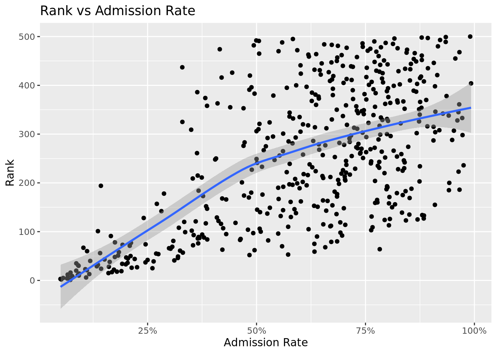
| r.squared |
|---|
| 0.4153932 |
The relationship between admission rate and college ranking gives us an R-squared value of 0.415 which is not that good and shows that admission rate might not be as significant as we originally thought.
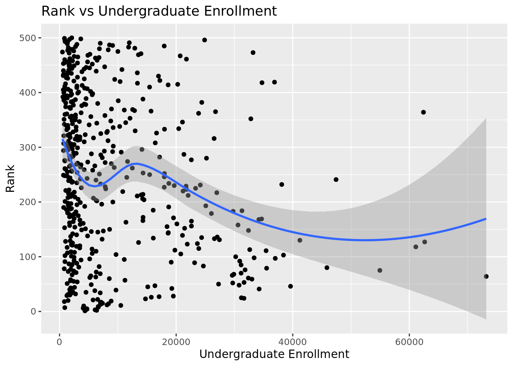
| r.squared |
|---|
| 0.0479294 |
As evident from the graph and the given R-squared value of 0.048, undergraduate enrollment has almost no impact on a college’s ranking.
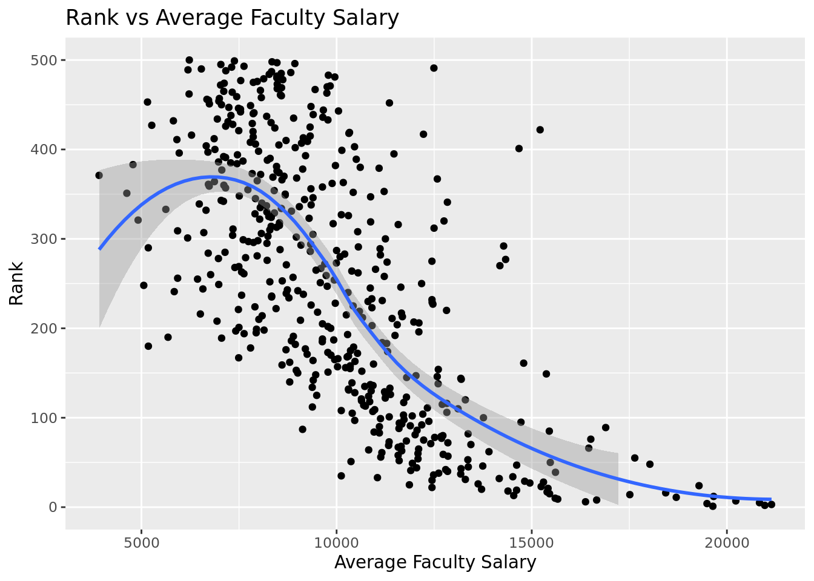
| r.squared |
|---|
| 0.4768954 |
While still relatively low, the R-squared value of 0.477 for the relationship between average faculty salary and ranking is higher than that of admission rate vs rank. This signifies that average faculty salary is a slightly more significant variable in predicting college ranking than admission rate.
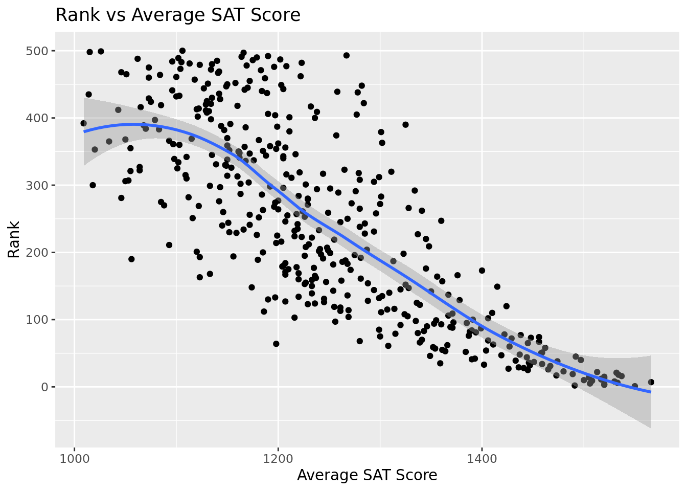
Based on the plot above, a college’s average SAT score has an almost semi-linear impact on it’s ranking. Typically, as average SAT score increases, a college’s ranking improves. Furthermore, we can see how well correlated these two variables are by creating a linear model.
| r.squared |
|---|
| 0.6410464 |
While an R-squared value of 0.641 is not the best, it is still the highest out of these variables which means that we can conclude that average SAT score has the greatest impact on a college ranking.